| 生徒会長は俺の嫁！？ | |
| みかづき 紅月 | |
| フランス書院 (2009) | |
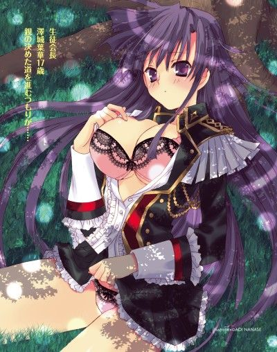
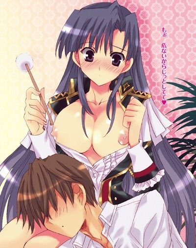
生徒会長は俺の嫁!?
みかづき紅月
イラスト／七瀬葵
プロローグ キス一回で私婿（わたむこ）宣言！
 初体験 ビンカン体質を治したい！
初体験 ビンカン体質を治したい！
秘密特訓 会長様が男子寮で絶頂ガマン！
 独占ラブ 放課後ドキドキ新婚生活！
独占ラブ 放課後ドキドキ新婚生活！
ご褒美 頑張るアナタにお尻をあげる！
 体育祭 夫婦の誓いは騎乗位中出し！
体育祭 夫婦の誓いは騎乗位中出し！
エピローグ 最後はやっぱり俺嫁（おれよめ）宣言！
プロローグ キス一回で私婿（わたむこ）宣言！
夕焼け空に細い雲が折り重なるようにたなびいている。
仄かにピンクがかったオレンジ色の空を鳥の群れがどこぞへと飛んでいく。
そんなどこまでも穏やかな夕暮れ時。
一片の葉が落ちてきて、西野弘樹がふと顔をあげると、しなやかな足が無防備に突きだされていた。下から誰かが見ているなんて思ってもいないのだろう。
弘樹は裏山の大きな木の幹に寄りかかっていた。
そして、しなやかな足の持ち主はその上にいた。
漆黒のストレートヘアが風にさらわれてしなやかに翻っている。
それだけで誰かすぐにわかる。
（なんで会長があんなところに？）
澤城葉華――高校二年生にして聖アリア学園の生徒会長であり、全校生徒の憧れの的でもある。
透き通るような白い肌を持ち、涼やかな表情はいついかなるときも冷静沈着。
立ち居振る舞いは凛々しくも気品があり、まるで王子のよう。
いや実際、彼女は学園の王子なのだ。
会長とはすべての学生をとりこにするカリスマを持った生徒でなければならない。
聖アリア学園の会長はそういう位置づけで、代々会長に伝わる制服も半ば男装じみたデザインをしている。
一般の女生徒たちよりもかなり短いスカートにホットパンツ。
肩章が肩から胸にかけてさげられている。
けして女らしさを損なわないデザインでありながらも凛々しさを強調しており、まさに王子の風格が滲みでる制服――
そんな、制服までも特別な彼女が、木の上に登ってなにをしているのだろうか？
「............っ」
弘樹が注視していると、彼女の頬に一滴きらめくものが伝わり落ちていった。
（げ、な、泣いてる!?）
いついかなるときでも弱みを見せない完全無欠の会長の涙に動揺する。
なにかあったのだろうか？ 声をかけるべきだろうか？ それとも気づかれないうちに退散すべきだろうか？
弘樹の頭のなかをさまざまな選択肢が埋めつくす。
が、そのとき、人の気配を感じたからだろうか？
会長が下を見た。
「............」
当然、弘樹と目が合う。
「っ!?」
彼女は長い睫毛に縁取られた大きな目を見開き、小さな口をぱくぱくとさせる。
会長がそんな表情を他人にみせるなんて、と弘樹は素直に驚く。
だが、次の瞬間、彼女の身体が大きくぐらついた。
「っきゃ！」
意外にもかわいらしい悲鳴が唇から放たれる。
バランスを取ろうとした会長だが、そのまま木から落下してしまう。
「危ないっ！」
弘樹が下で彼女の身体を受けとめようとする。
が――
漫画やアニメのヒーローのようにかっこよくはいかず、葉華の身体もろとも、弘樹は地面にあお向けに倒れてしまう。
一瞬、気が遠くなったが、世にも柔らかな感触に意識が呼び戻される。
柔らかな感触は二カ所。
胸にむっちり押しつけられたこの世のものとは思えないほどの柔らかさ。
そして、もう一つは唇に触れる感触。
弘樹は目を開けてみる。
と、そこには会長の整った顔がどアップで迫っていた。
キス、していた。
弘樹の心臓がばくんっと跳ねる。
凛々しい美しさを誇る生徒会長が弘樹の体の上から覆いかぶさっていた。
二人の唇は重ねられている。
（お、落ち着け、落ち着け。これは事故だ。まずはとりあえず口を離して――だな）
固まったままの弘樹だったが、なるべく平常心を保とうと、残った理性を総動員してこれからすべきことを反芻する。
だが――
「ン......」
鼻から抜けるようなくぐもった声が会長から聞こえた途端、理性が粉々に砕かれた。
彼女の細い身体を思いきり強く抱きしめる。
会長も逃げればいいのに、逃げようとしない。
むしろ、さらに甘い声をあげて、キスに溺れていく。
「ん、ンンっ。っふ......。は、あ......」
自ら唇を突きだして、舌でちろりと弘樹の唇を舐めた。
どぎまぎしながら弘樹も舌を出してみると、滑らかな感触を舌先に感じた途端、会長が彼の頭を抱えこんで舌を熱烈に絡めてきた。
「っ。ン、っはぁはぁ......。んちゅ......。ンンンっ！」
ぴくぴくっと身体を反応させながら、ディープキスをしてくる会長。
その狂おしい舌使いに、弘樹の頭のなかは真っ白になる。
「はぁ、っちゅ、ン。き、気持ちよすぎ、だから......。い、やぁ......」
悩ましい声が彼女の唇からもれるも、彼女はいっこうにやめようとしない。
身体をくねらせながら、激しいキスに興じる。
とめなくてはと思ってはいるもののとまらない。
そんな悩ましい状態に煩悶しつつも、頬を火照らせ、鋭敏な反応を見せながらキスをつづける会長。
弘樹も負けじと舌を動かすと、その動きに触発され、彼女の舌の動きも余計に激しさを増していく。
「んはぁ......。ふぅ、はっ。ンくっ。ンン、ちゅ、はぁはぁああ......。あ、あぁっ」
荒い吐息に混ざる喘ぎ声が弘樹のオスを刺激する。
すでに彼のズボンの前にはテントが張られていた。
体が重なっているため、会長も気づいているに違いない。
なんとか体をよじり、弘樹は漲りに彼女の身体が触れないようにしようとする。
だが、会長の細い足が彼の足に絡められているため身動きができない。
「ん......。うっ、んんん......。はぁ、んっ。ん、ちゅ......っん」
二人の唾液が混ざり、口端から顎へとつっと伝わり落ちていく。
会長は眉をハの字に寄せて目を閉じたまま、舌先で弘樹の歯茎をくすぐり、彼の舌に吸いついてくる。
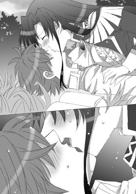
彼らは、草いきれのなか、互いの汗ばんだ体を感じながらキスに溺れる。
頭の芯がぼうっとして、全身から力という力が抜けきってしまう。
どのくらい経っただろうか。
唇が麻痺してしまうくらい、長い長いキスを終えてから。
ようやく会長が弘樹から唇を離した。
「はぁっ。はぁ......。はぁ......。ンっ」
唾液で濡れた唇を動かしながら、乱れた息を整えようとする。
目はとろんとしており、全身から力が抜けきっているのが傍目にもわかる。
（わ、私ともあろう者が......。な、なんてことを......）
いつものようにきりっとした表情を取り戻そうと、顔の筋肉を引き締めたいのに、葉華の顔は緩みっぱなしで。
まるで自分の身体じゃないようだった。
彼女は腕を身体の前でクロスさせて、自分の肩を抱きしめた。
身体が燃えるように火照っている。下腹部の奥からはじんじんと熱い振動が伝わってくる。
（奥から勝手に溢れてきてしまう。なぜこんな反応を......）
秘芯がひとりでにひくついてしまう。身体が疼いて仕方ない。
だが、自分は非の打ち所のない生徒会長でなければならない。
「あ、あの。会長、大丈夫？」
時折甘い声をもらしながら、自分の身体を抱きしめて座りこんでしまった会長に弘樹が恐る恐る声をかける。
すでに日はすっかり落ちていた。
ちらりと腕時計を確認すると、すでに七時を過ぎている。
かれこれ一時間以上も会長とキスをしていたことになる。
葉華はきっと顔をあげて、彼を睨みつけた。
普段ならこの一睨みで、どんな生徒も彼女に平伏する。
それくらい凍てついた視線なはずなのに、今現在の彼女の顔は真っ赤に染まっているし目は潤みきっているため、迫力はまるでない。
それでも葉華は会長のプライドを奮い立たせて肩をいからせると、弘樹の手を力いっぱい振りきって毅然と言い放った。
「無礼なっ！ なにをする！」
「なにをするって。してきたのは会長のような......」
「な、な、な......」
弘樹の指摘に葉華の顔一面に動揺がひろがる。
彼女はくっと唇を噛みしめると、はあっと嘆息した。
「――っく、この澤城葉華ともあろう私が、いかにもこんな貧相な......見るからに凡庸、ド凡人な男に唇を奪われるなんて。ありえないわっ」
ひどい言われようだなと弘樹は思うも、実際彼女の言うとおりなのだからなにも言葉を返せない。
そんな彼を半目で見下ろし、彼女は、はあっとため息をつく。
だが、次に、くっと顔をあげて言った。
「だけど、こうなったからには仕方ないわ」
「へ？」
「キスした以上、責任はとってもらうんだからっ！」
「な、なんの責任!?」
「覚悟なさいっ！ 私に相応しい婿に調教するんだから」
「っぶ！ 婿ってなんでそんなことに!? 話が飛躍しすぎだし」
「うるさいっ！ 弱みを握られたまま逃すとでも思って？ そのトロそうな顔どおりおつむも軽いのかしら？」
会長はがうっとうなると、世にも険悪な目つきで弘樹を睨みつけた。
「弱みって？ さっき泣いてたこと？」
「うっ！ あ、あれは......。ちょっといい話すぎて......」
気まずそうに視線を彷徨わせる会長が、叢に落ちている本を見つけるとあわててそれを隠した。それは絵本のようだった。
涙の原因があきらかになり、ますます弘樹は意表を突かれる。というか、最初っから突かれっぱなしだった。
（あの会長が絵本を読んで泣いてたのか？ 涙もろすぎだろう？）
「って、違うっ！ トロそうなくせに変なとこばっかり気づいてるんだから！ それに、そっちじゃなくて。いや、そっちもだけど――」
「うん？」
「って！ そ、その、気づいてるんでしょ？ ド凡人が賢しい真似をしても底の浅さがバレバレなんだから。いい加減しらばっくれるのはよしなさい！」
「弱み、ねえ」
「バカバカっ！ ほら、つい今さっきの......よ」
「ああ、キス？」
「............」
会長は子供のように唇を尖らせると、怒ったようにこくりとうなずいた。
その様子に弘樹は吹きだしてしまいそうになる。
が、ここで笑ったら、会長になにをされるかわかったものじゃない。
なんせ、彼女の父親は有名な政治家。権力の塊。学園にも多額の寄付をしているという噂もあり、誰も彼女には逆らえないのだから。
「――あれは、別に弱みじゃないと思うんだけど？」
「うそおっしゃい！ バカにするんじゃないわ！」
「うそじゃないし。むしろ長所というか......」
弘樹が言うと、葉華はきょとんとする。
だが、次の瞬間、烈火のごとく怒りはじめた。
「なにを言うの！ これのどこが長所ですって!? バカにしてるの!? そんなわけないじゃないっ！ 調子のいいこと言って！ この私がほいほいだまされるとでも思って？ バカバカっ！」
「いや、マジな話で。男にとっては感じやすい女の子のほうがいいというか......」
「っ！」
感じやすいという言葉を耳にした途端、会長の手のひらが思いきり振りあげられた。
次の瞬間、容赦なく弘樹の横っ面をはたいた。
ばちんっという派手な音があたりに響く。
「な、なな、なんてこと言うのっ！ 最低最悪っ、こンのエッチっ！ ド変態っ！ デリカシーなさすぎっ！ 減点三〇っ！」
なにがなんだかわからないまま弘樹は頬を押さえ、一生に一度は言ってみたい台詞ナンバー三に入る一つを大仰に言う。
「ぶったね。オヤジにも殴られたこと......」
だが、途中で会長に胸倉をつかみあげられ、せっかくの台詞を中断されてしまう。
「いい？ 今日のことは他言無用よっ!? 一言でも外にもらしてみなさい？ うちのＳＰが貴方の大事にしているものすべてを壊しにいくわよ。跡形もなく」
「............」
彼女のものすごい脅し文句に弘樹は閉口してしまう。
ごく一般人が普通に口にしたのであれば、冗談ですむ言葉だが、なまじっか財力も権力もありあまっている会長が言うのだからしゃれにならない。
実際、彼にすごんでみせる葉華からはこわいくらいの殺気が駄々もれている。
「ちなみに減点一〇〇でも同じ運命を辿るから心して婿修業に励むように！ まったく、どこからどう見ても通行人Ａの貴方が私の婿候補に選ばれたのだから。死ぬ覚悟でせいぜい挑みなさい。いい!?」
本当は？マークが頭のなかを埋めつくしていた弘樹だったが、彼女の有無を言わせない強い口調に恐る恐るうなずくしか術はなかった。
高校二年になったばかりのとある晴れた日の出来事だった。
初体験 ビンカン体質を治したい！
聖アリア学園の朝はとても優雅だ。
焦げたパンを口に咥えて「遅刻、遅刻」なんて言いながらダッシュするベタな生徒なんて一人もいない。
というか、そんな生徒がいたら、速やかに名簿から名前を抹消されてしまう。
由緒正しいお嬢様学校である学園の名前を汚すことは万死に等しいのだ。
穢れを知らない白百合のような乙女たちが、おしとやかにおしゃべりに興じつつ、ゆっくりと登校している陰に隠れて、全校生徒の五パーセントにも満たない男子生徒たちがこそこそ登校している。
そんなひときわきらびやかなオーラを放ちながら、会長は颯爽と歩いていく。
彼女のオーラにいち早く気づいた生徒たちが道を譲りがてら、腰を落としてスカートを摘むとお辞儀をする。
「ごきげんよう。葉華様」
「ごきげんよう。私のかわいい小鳥たち」
甘い言葉をさらりと口にし、鷹揚に微笑む姿はまさしく王子そのもの。
ここそこで女生徒たちの甘く切ないため息がつかれっぱなしだ。
そんな彼女がまさかとんでもない敏感体質で。心も身体も感じやすすぎるなんて誰が知るだろう。
会長の言によれば、彼女の秘密を知るのは弘樹だけらしい。
彼は黙ったまま、会長と自分の鞄を持って、彼女のあとをついていく。
「まあ、男なんかが葉華様の鞄を」
「汚らわしい」
「............」
女生徒たちの厳しい視線を全身に浴びながら、弘樹はげんなりする。
こうなることは明白だった。
なんせ、女学園だった頃の名残がまだまだ残っているため、ここでは徹底的な女尊男卑の姿勢が貫かれているのだ。
共学になった女学園というだけで、女の園、男のドリーム、ハーレムバンザイとばかりに超高倍率をくぐり抜けて入学してみたはいいものの。
その実、女の天下だったという笑えるに笑えないオチが用意されていた。
男にとっては過酷な状況下で、婿候補に強制的に選ばれ、婿修業とやらに励まされることになった弘樹。
（俺終わったな。お先真っ暗だ）
ここは玉の輿と喜ぶべきところなのかもしれない。
なんせ、お相手は、気は強くて毒舌家ではあるが、財力も権力も兼ね備えた美しい生徒会長。
しかも、超絶敏感体質とくる。それなんてエロゲ？ と言わんばかりの好条件がガン首そろえている。
だが、それゆえの弊害もある。
（全校生徒の恨みをわざわざ自分からかうようなもんじゃないか）
ただでさえ、女生徒たちの男生徒たちに対する仕打ちはすさまじい。
ライバルの靴に画鋲が仕込んであるとか、一昔前の少女漫画を地でいく日常と思ってもらえばいいだろう。
「弘樹。なにをぼーっとした顔をしてるの。ただでさえトロい顔がもっとトロく見えてよ。少しはしゃきっとなさいっ」
「はいはい」
「はいは一回！ 減点一」
「............」
会長が首をめぐらせて後ろを見ると、小声で弘樹をたしなめる。
（なんでこんなハメになるんだ）
彼は海より深いため息をつく。
世に増えてきた草食系男子と言われる人種やどＭな男ならば、この状況を素直に喜んだかもしれない。
だが、どちらかといえば弘樹は肉食系だったこともこの悲劇に一役買っていた。
清純で従順で尽くすメイドのようなかわいらしい嫁とつましいながらも幸せな家庭――これが彼の描く理想の家庭だったというのに。
「貴方には他の婿候補を打ち負かすだけの力をつけてもらわねばならないのだから。びしばしスパルタ教育するわよ」
「他の婿候補？」
「そう、お父様がそれらしい候補をこれでもかって準備しているはずだから......」
葉華の表情がわずかに曇る。
「じゃ、俺なんかよりもそっちでいいんじゃ？ 俺は一平民にすぎないし」
「バカバカっ！ その候補たちは私の弱みは知らないのよ？」
「......だから？」
弘樹が言うと、葉華は深い深いため息をついた。
「鈍い男ってほんっと最低......。ちょっとは察しなさいよ。その頭は飾りなの？ 脳みそ溶けてるんじゃない？ 減点一〇」
「いや、普通にわからないだろう？」
「っ！ そんなこと女の私に言わせるわけっ？」
「だって本当にわからないし」
「う、うううううっ。バカバカっ......」
かあああっと頬を染めると、彼女は蚊の鳴くような声で呟いた。
「......したい、のよ」
「ん？ なにをしたい？」
「バカっ！ 治したい、って言ってんの！ 顔と脳みそだけじゃなく鼓膜まで腐ってるっていうの!? こンの腐れゾンビ男っ！」
「腐れゾンビって......。で、なにを治したいんだ？」
「そんなの決まってるでしょう!? みなまで言わせる気っ!? この体質をよ！」
「ああ、敏か......げふぅっ」
「バカバカっ！ 言葉を慎みなさいっ！」
言葉半ばで葉華が弘樹を物陰に引きずりこむと、容赦ない蹴りを弘樹のみぞおちへと見舞った。
どうやら彼女はすぐに暴力に訴えかける癖があるらしい。
他の生徒が見ていない状況では、だが。
そこはそれ、学園中の生徒の憧れの的、理想である王子様なのだから仕方ない。
というか、そっちのストレスをこうやって発散しているのかもしれない。
会長は腰に手を当てると、体をくの字に折り曲げた彼を見下ろして言った。
「私の弱みを知られた以上、治すのに協力してもらうわよ。貴方のスペックの低さじゃ、正直あんまり期待はしていないけど、もしも治すことができたら、婿にならなくてもいいわ。でも、治らなかったら絶対に婿になってもらうんだから。これで私の秘密は墓場にまで持っていけるというわけ。もちろん、絶対に他言無用なんだからね!?」
会長は腕組みをすると、まくしたてるように言った。
その様子はまるで子供のようで、会長のイメージとはかけ離れている。
弘樹は驚きながらも、新鮮だなと思う。
「だ、大体、唇を奪われた以上......。それくらいの責任とってもらわなくちゃ割りに合わないんだから......。男の責務みたいなものよ」
キスをしたときのことを思いだしたのか、会長は唇に人差し指を当てて上ずった声で言った。
その様子が仄かに色っぽくて弘樹はどきりとする。
あのときの長いキスを思いだす。
唇の柔らかな感触、湿った舌の滑らかな感触。
そしてなによりも会長のうわずった甘い声。
思いだしただけで股間に芯が通る。
が、弘樹は、すぐに我に返ると、彼女の一方的な取り決めをなんとか自分にも有利なものにしようと反論した。
「責任もなにもしてきたのはそっちだし。それに、俺にそれをしろというのなら、そっちもすべきだ。それでこそフェアじゃないか？」
「フっ、猿風情が偉そうになにを言いだすかと思えば。私は完璧よ」
「生徒会長としてはな。だが、嫁としてはどうだ！」
「っぐ......。なん......ですって？」
葉華は目を見開いて唇を噛みしめる。
「婿として相応しくなれというなら、そっちも嫁として相応しくなれということだ」
「......へえ、なあに。今の今までロクな口応えすらできなかったヘタレ男が。言ってくれるじゃない。でも、それくらいの気概がなくっちゃ、この私の婿は務まらないかもね」
会長はにやりと不敵に笑うと、肩にかかる髪を後ろへと払いのけ、胸を張って彼を見据えた。
「いいでしょう。この完璧な私に不可能はないわ。その要求は呑みましょう。私も貴方の嫁として切磋琢磨します」
「じゃあ、まず嫁として婿に暴力ふるうのはやめるんだな」
「っむ、駄婿をしつけるのもデキる嫁の条件じゃない？」
「......駄婿って」
「ふふんっ。なにか異論でもあって？ なにか一つでも誇れるものを持ってるなら見せてごらんなさい。でなければ、貴方なんて駄婿呼ばわりで充分よ」
会長は腕組みをすると、見事な巨乳を反らした。
確かにそれは誇れるものだなと妙なところに納得しながら、弘樹は言葉をつづける。
「あのな。別にどっちができるできないとかそういう問題じゃないんだ。結婚っていうのはだな、お互いの歩み寄りというのが大事であってな......。そういうのちゃんとわかってるのか？」
「フンっ！ それくらい言われなくたってわかってるわよっ！」
「んじゃ、お互いの望む形に近づくよう努力すべきだろう」
「そんなの当然でしょっ！ でも、貴方みたいな駄婿に意見されるのはどうにも私のプライドが許さないわっ。だって私は完璧だもの」
「だから、会長として完璧なのは認める。だが、嫁と会長は畑違いだろう？ 婿の要望を聞き入れるのも嫁の務めだと思うし」
会長は形のよい顎に手を当てるとふむと首を傾げる。
「......そんなものなのかしら？ なにがどう違うのかよくわからないわ」
「てか、正直、まだ誰とも付き合ったことないし、結婚とかっていきなり言われてもピンとこないんだが？」
「安心なさい。私も同じだから！」
「そ、そうか」
そんなに力いっぱい偉そうに断言されてもなあと弘樹は思うも口にはしない。
ややあって、会長は「んーっ」と人差し指を顎に当てて言った。
「まあ、互いに嫁とか婿とか意識していれば、それがいずれどういうものかというのもわかってくるんじゃない？」
「ならいいけど......」
弘樹は言葉を中断すると、ずっと気になっていたことを口にした。
「にしても、それこそ会長ともあろう者が、ずいぶんと簡単に結婚相手を決めるんだな。一生を添い遂げる相手だぞ？ そんな簡単に決めないほうがいいんじゃないか？ 俺がド凡人だっつーことは悔しいが認めざるを得ないしな」
「私は即断即決がポリシー。あと直感第一主義者。それに、私が決めたことなら後々どうなったってあきらめもつくけど、決められるのはいや。他人が責任とってくれるってわけではないしね」
「なるほど」
会長のポリシーはもっともなもので感心する。
一見、むちゃくちゃにも思える彼女の行動だが、そのバックボーンは意外にも納得のいくものだった。
「だが、こういうのって勝手に決めてもいいもんなのか？ 親とかに話をするとかいろいろしかるべき手順があるんじゃ？」
「あら、鈍感なゾンビ男にも世間一般の良識というものはあるのね。もちろん、その点はぬかりはないわ」
葉華がふふんっと笑ってそう答えたとき、弘樹の携帯が鳴る。
「もしもし？ 俺だけど、うん？ え、ええええええええええええええっ!?」
電話に出て、すぐさま彼の絶叫が響き渡った。
彼の母のハイテンションな声が電話越しにも聞こえてきて、葉華は満足そうにうなずく。
『弘樹ったらー。おめでとう♪ いきなりでびっくりしたわ。そうそう、葉華さんったらわざわざこっちにご挨拶に来てくださったのよ。貴方を婿候補にくださいって。ええ、素敵な手土産もいただいちゃったわ。ゴディバのチョコクッキーのセット♪ すっごくうれしー。毎日お茶の時間にいただこうと思うの♪』
「っぶ、ンなもんで息子を売るんじゃねえ......」
『本当にいい子を捕まえたわねえ。まだ婿候補らしいけど、頑張って婿になるのよ。玉の輿バンザイっ♪ 今度、弘樹が帰省してきたときにはお赤飯炊かなくっちゃね。ママ、頑張っちゃうぞーっ☆』
「赤飯って！ 激しく違うだろっ」
『それじゃあ、ママ、これからフラダンスのレッスンがあるから。またね☆』
「............」
いつも人の話を基本的にまったく聞かない母は、一方的に言いたいことだけ言ってから電話を切った。
（脳みそのなかまでお気楽極楽ハワイアンかよっ！）
弘樹は、ハワイアンの衣装に身を包んでフラを踊る母の姿を脳裏に思い浮かべて、がくりと首をうなだれる。
「ね？ その辺はぬかりなしって言ったとおりでしょう？ あはは、私、お母様にも気に入られちゃったみたいだわ」
「はあ......。どうせ猫ひっかぶりまくったんだろう......」
「そりゃ、会長なめるんじゃないわよ。猫何匹もひっかぶってこそ会長でしょうが？ ド凡人とは違うのよ。ド凡人とは」
「............」
どうやら葉華のほうが何枚も上手らしい。
弘樹は深いため息をつく。
そんな彼を見て、葉華は勝ち誇ったように言った。
「とりあえずは観念して、せいぜい婿修業に励むことね。貴方、トロそーだから、普通の人の三倍、いや百倍は努力しないと」
「いやいやいや！ だからこそ、俺なんかよりももっと相応しいやつはいるだろう。なんだって俺なんか......」
弘樹が言うと、葉華はうっと言葉につまる。
彼を睨みつけると、ふんっとそっぽを向いた。
「うるさいわねっ。なんとなくよ、なんとなく！ こういうのってフィーリングが大事でしょう？」
「そ、そりゃそうかもしれんが、それにしたって簡単に決めすぎな気も......」
「......だって、貴方、私の欠点、バカにしなかったじゃない。それだけでも」
「ん？」
「ううんっ！ なんでもないわよ！ さあ、遅刻は厳禁よ。会長たるものパーフェクトでなくちゃね」
薄く頬を染めて弘樹を睨みつけると、彼女は勢いよく駆けだした。
ミニスカートが翻ってスパッツに包まれた形のいいヒップがのぞく。
スパッツを呪いながら、弘樹は彼女のあとを追いかけていった。
☆
「葉華様っ！ なんで男なんかを生徒会に入れようとなさるわけ？ こ、こんなどこの馬の骨ともわからないようないかにもとろそうな男をっ」
「だって彼は私の婿候補になったから」
「な、な、なななななっ!? む、婿ぉ!?」
頭のてっぺんから突き抜けるようなヒステリックな声が生徒会室に響き渡る。
背がとても低く、会長の胸程度までしかない少女が、肩を怒らせて弘樹をぎんっと睨みつけていた。
彼女は副生徒会長――連歌ユウヒ。
どっからどう見ても小学生にしか見えないが、れっきとした高校一年生。
母がイギリス人でハーフ。明るい金髪は地毛でツインテールに結いあげている。
そんな彼女が青色の瞳を怒りで燃えたぎらせながら弘樹にくってかかる。
「貴方、どうやって会長に取り入ったんですの!? まったくこれだから男って人種は。油断も隙もあったものではないわっ。どうせなにか姑息な手段を使ったのでしょう？ あんなことやそんなこと......。えええっ、そ、そんなことまで!?」
少し妄想過多なタイプらしく、真っ白な頬がかあっと真っ赤に染まる。
そして、彼女は憤激した。
「ああっ！ わたくしの会長にそんなふしだらなことをっ！ 破廉恥ですわっ！ わ、わたくしだってしたことないのにっ！ なんてことをっ！」
「こらこらこら！ 俺はなにも言ってないだろう？」
弘樹が突っこみをいれるも、それはあえなく彼女の耳を素通りする。
「最低っ！ 死ねばいいのにっ！ 会長も会長です。婿候補なら、そのっ、わ、わたくしとかだって......」
「貴女は女でしょう？ 婿にはなれないわ」
「お言葉ですが葉華様、国によって法律は違いますわよ？」
（......真剣だ）
ユウヒの真剣な目を見て、弘樹はたじろぐ。
ほぼ女の園。数年前までは完全に女の園だった聖アリア学園では、百合的な話はとくにめずらしくない。
（男同士なら見たくもないが、女同士ってのはちょっといいかもな......）
弘樹は、ちょっとだけ二人が絡み合っているところを想像してしまう。
『ユウヒ、貴女タイが曲がっていてよ』
『会長......』
『あら、かわいい胸だこと。触りたくなってしまうわ』
『あ、だ、駄目です。会長、こんなところでは恥ずかしいですわ』
『会長ではなくお姉さまと呼びなさい』
『あ、あああっ。お姉さまっ。ン、あぁ、お姉さまになら......。わたくしすべてを捧げてもいいですわ』
『ありがとう。私だけの妹』
「んむ、これはこれで、なかなか......」
「ちょっと！ なにをやらしい目でじろじろ見てますのっ！ 目ん玉くりぬいてうちのわんこにでもくれてやろうかしら。これだから男って不潔っ！ バイキン！ 滅びちゃえばいいのに！」
会長に輪をかけた毒舌のチビっ娘が思いっきり顔を顰めて、弘樹をしっしっと追い払う仕草をする。
まるで触れるのも汚らわしいと言わんばかりだ。
「――婿の条件は『男』ということになってるわ。そこは私が決めることではないの。親の決めること。まあ、例外もあるのかもしれないけれど、それはお父様が認めてからでないと駄目ね」
冷めた口調で会長は呟く。
（お嬢様もいろいろ大変なんだろな。そもそもまだ高校生だっつーのに結婚とか婿とか嫁とかいう話が出てくるんだもんな。あの様子じゃ恋愛とかもしたことないっぽいしな）
自分のことを棚にあげて、弘樹は心のなかで一人ごちる。
「ならば、いつか認めてもらいますわ......」
ユウヒがあらぬほうを向くと固く決意する。
なにやら自分だけの世界にどっぷり浸っているようだ。
「とにかく、彼がロースペックであるということはわかった上での英断なの。ゆえに婿修業も兼ねて彼は私につき従うことになるので。必然的に生徒会の手伝いもしてもらうことになるわ。まあ、雑用係みたいなものね。言うならば下僕？」
会長が言うと、ユウヒは半目になって不敵な笑みを浮かべた。
「......くっ！ ふっふ、ふふふ。そういうことならば、ボロ雑巾のようにこき使ってさしあげますわ。自分から出ていきたいって言いだすくらいに！」
「げっ。そんな......」
弘樹が会長に目で助けを求める。
しかし――
「そうね。それくらいじゃなくっちゃ、修業にならないわ」
「......マジっすか？」
「ふふふふっ。会長公認ってことですし。どういたぶってくれようかしら」
「............」
ユウヒは世にも黒い微笑みを顔一面に浮かべて弘樹の体を舐めるように見てくる。
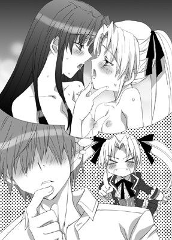
「やっぱり弱点を攻めるべきよね 二度と使い物にならないくらいにしてやるってのはどうかしらん」
（じゃ、弱点ってどこのことを言ってるんだっ!?）
弘樹の背筋に冷たいものが走る。
前途多難という文字が彼の脳裏によぎった。
それからはじまった弘樹の婿修業の日々は想像を絶する以上のハードな日々だった。
生徒会活動において、副会長にこき使われるのはまだまだ序の口。
まず、朝登校すると、うわぐつには画鋲がみっしり山盛につめられているし、ラブレターならぬ呪いの手紙が束で突っこまれている。
机のなかに置いておいた教科書がなくなってたり、体操服が隠されているなんてこともザラ。携帯には非通知の迷惑電話がかかってくるし。何度メールアドレスを変えても迷惑メールがもりっと届くようになった。
それに加え、わら人形が男子寮のポストのなかに入っていたり、あることないこと某巨大掲示板に書きこまれていたり。
ＢＬネタに使われるのみならず、マッチョな兄貴たちの薔薇ネタに使われたり。
少女たちのいやがらせは、もはやネタじみていて、毎日が漫画のようだなあと弘樹は思う。
「ここまでされると、逆に笑えるよなあ......」
彼をモチーフにしたと丸わかりのＢＬ系コピー誌をゴミ箱に捨て、弘樹は肩をこきこきと鳴らす。
「しかし、暇な人間が多いよなー」
そう言って、生徒会室へと向かおうとしたそのとき、会長が傍を通りかかった。
「弘樹？ どうかした？」
「ん？ なんでもない」
「なんでもなくはないでしょう？ なにかあったの？ 貴方、演技力皆無なんだから、棒読みもいいとこ。バレバレの嘘をつこうとしないの」
（っち、相変わらず鋭いな......）
葉華の指摘に弘樹はたじろぐ。
彼女の観察力はかなり鋭く、それでいてさりげなく気を使う。
気配りの鬼といってもいい。
全校生徒たちの憧れの的となるのも充分うなずける。
本当に同い年かと疑問に思うほど、会長としての彼女は完璧だった。
毎日、一緒に過ごすようになってから、弘樹はひしひしとそれを感じている。
「これ、なに？」
会長がゴミ箱から彼が今捨てたばかりのコピー誌を拾いあげた。
すかさず弘樹が彼女からそれをひったくる。
「な、なんでもない」
「うそ、見せなさいっ」
すぐに取り戻されてしまい、なかを確認されてしまう。
「なに......。これっ」
みるみるうちに彼女の表情が厳しくなり、こめかみに血管が浮かびあがる。
「誰がこんないやがらせを!? 卑屈なっ！ 許せないわっ」
彼女は同人誌を叩き捨てると、ぶるぶると全身を震わせた。
「いや、まー別にたいしたことじゃないし」
「うそおっしゃい。貴方、私には黙っているけど、相当ないやがらせを受けてるんじゃないの？ なぜ私に言わないのっ！」
「そんなんかっこ悪くて言えるか。それにもはやギャグとしか思えんいやがらせだし。むしろ楽しいっての」
「フンっ！ ガラにもないっ。ド凡人が背伸びしてかっこつけるんじゃないわ！」
ばしっと会長の手のひらが弘樹の後頭部を直撃する。
「......それにしてもまったく低レベルだわ。こんな浅ましい真似をするなんて」
「だから、俺は全然気にしてないって」
まだ怒りが収まらない様子の葉華を弘樹がなだめる。
相変わらずの毒舌だが、弘樹のために怒ってくれているのだ。
彼女は唇を噛みしめるとそのまま黙りこくってしまう。
ややあって、彼女はぶっきらぼうに言った。
「......ごめん」
「だから、なんで会長が謝る？」
あの傲岸不遜、気丈な会長らしくない行動に弘樹はうろたえる。
葉華は目を伏せたまま悔しそうに歯噛みする。
「だって、私のせいじゃない。これって」
「いやいや」
「私があんまりにも美しく凛々しく人気がありすぎるからいけないのよ......」
「っぶ、自分で言うな！」
「なんてね。冗談よ」
会長はにこっと笑い、優しいまなざしで弘樹を見つめてきた。
「でもね。こういうことは、ちゃんと言ってほしいわ。隠しおおそうなんて小憎たらしい小細工は不要よ。私、婿候補くらい護ってみせるんだからね」
「......えらい凛々しい嫁だな」
「当然よ。だって私会長だし、王子だしね？ そんじょそこらの男にかっこよさで負けてたまるもんですか」
あははっと気持ちよく笑い飛ばすと、彼女はくるりとターンして弘樹へと手を差しだした。
「さ、生徒会室に行きましょ。おいしいお紅茶を淹れてあげるから。ね、これってちょっとお嫁さんっぽくない？」
気恥ずかしそうに微笑む。
「お、おう」
会長の笑顔があんまりにもまぶしくて、弘樹はつい彼女から目をそらしてしまう。
とくとくと心臓がせわしなく動いていて、息がしづらい。
（つか、会長、男前すぎだろ。なんか、くやしいぞ......）
弘樹は複雑な顔をして、会長の手を握りしめた。
☆
放課後の生徒会室はしんと静まりかえっていた。
いつもなら副会長も、もれなくついてきて、窓枠につぅっと指を滑らせ「掃除が行き届いてない」とか、なにかと弘樹に姑じみたことを言ってくる。
しかし、いつも水曜、ユウヒはバイオリンのレッスンで早めに帰宅する。
そのため、今日は、弘樹と葉華の二人きりだった。
「お紅茶どう？ ちゃんと最初にカップを温めておいたし、茶葉も蒸らしてみたのだけどお口に合うかしら？ ファーストフラッシュのダージリンティーよ」
「ほう、うまいな」
「そう、よかった」
机に白いテーブルクロスを敷くと、なんだかやけに高そうなティーセットをバスケットから取りだし、会長は弘樹のために紅茶を淹れてくれた。
優雅な所作で自分のために紅茶を淹れてくれる会長を見て、弘樹の顔もついつい緩んでしまう。
二人は、生徒会業務の合間のブレイクタイムを優雅に楽しんでいた。
副会長がいないときくらいしか、こんなふうに穏やかな時間を楽しむことはできない。
それを知ってて、わざわざお茶の用意をしてくれたのかと、弘樹は尋ねようとするもそれも野暮な気がして結局聞いていない。
（どうせ照れまくって毒ばっか吐くんだろうしな）
「こういうのもたまにはいいわね。いつもバタバタしてるから」
葉華は会長机の上に山のように積み重ねられている書類を見てから肩を竦める。
「そうは見えないけどな。どうせそう見せていないだけなんだろうけど」
「ふふふっ、どうでしょうね？ 私はド凡人とは違うのよ？」
鷹揚に笑うと、カップに口をつける。
その所作は洗練されていて、いかにもお嬢様っぽい。
こんなちょっとした瞬間にも、つくづく自分とは住む世界が違うんだろうなあと弘樹は思う。
「しかし、腹減ったな」
「......うっ」
「ん？」
「い、一応お茶菓子も用意はしてきたのだけど......」
なぜか葉華は気まずそうに目をそらす。
「んじゃ、出してくれればいいのに？」
ちろりと弘樹を見て呟く。
「......絶対に後悔しない？」
「............」
不吉な予感を覚えながらも弘樹がうなずくと、会長はためらいがちに鞄のなかから紙袋を取りだした。水玉のリボンでかわいくラッピングされている。
だが、そのなかから出てきたものは黒こげの塊だった。
お約束だなと思いつつも弘樹は一応突っこみを入れる。
「この黒こげの物体Ｘはなんだ？」
「......ド凡人にはなかなか理解できないかもしれないけれど、これは愛を試すために作られたものなのよ」
「っぶ、ものは言いようだな」
「って......。ふんっ、別に食べなくてもいいわよ。焦げはガンの元だしね」
その割りにはわざわざラッピングまでしてあるわけで。
（ってことは、捨てるに捨てられないくらい努力した結果がこれってことか）
弘樹は顔を引きつらせながらも、覚悟を決め、物体Ｘを口に放り入れた。
「............っ！」
あまりの苦さと硬さに一瞬固まる。
会長がはらはらと心配そうに彼にレースのハンカチを差しだした。
「だ、大丈夫？ 出してもいいのよ？」
「............！」
弘樹はぶんぶんと顔を振る。
会長だけにいい格好はさせてられないと、意地で塊を呑みくだした。
「ぐふぅ。っひっひっふー」
拒絶反応を静めようとして、妙な息遣いをしてしまう。
男なのに、いったいなにを生むつもりなのだろう。
「もう、かっこつけるのね......。ド凡人のくせに。生意気よ」
会長は彼を軽く睨みながらも、その表情には喜色が浮かんでいる。
まんざらでもなさそうな彼女を見て、弘樹は妙な達成感を得た。
「うーん、さすがに料理はもうちょっと頑張らないとね。なんせ、ずっとメイドさんたちが作ってくれてたから。あとはばあやがね」
「メイドっ!? ぜひ連れてきてくれ。ばあやはいいや」
メイドと聞いた弘樹が前のめりになって訴えかけると、会長は半目で彼を睨む。
「......浮気は厳禁よ？」
満面の笑顔でぱきぱきと手を鳴らす様子はかえって恐ろしい。
「そんなの怖くてできるか......」
弘樹が即答すると、葉華は机に頬杖をついて、はあっとため息をついた。
前屈みになったため、大きな胸がぽよんと机の上に載っかって、制服の胸もとからのぞく谷間がひときわ深くなる。
弘樹の目がそこに釘づけになるも、心ここにあらずといった風の会長はまるでそれに気づいていない。
「でも、やっぱり男の人ってああいう感じの女の子が好きなんだろうな。いわゆるメイドさんみたいな女の子。素直で尽くしてくれておとなしくって。女の子らしい女の子。駄々甘なスイーツな女の子。わかるなあ。私でもたまに萌えるもん」
「まあ、そりゃなあ......」
彼女は遠い目をして言った。
「当然、こんな私みたいな男っぽい女の子よりもあんなぶりっぶりの女の子のほうがいいわよねえ」
「男っぽい？」
「でしょ？ だって私は学園の王子様だもの。かっこいいとしか言われたことないわ」
「そうか？ 俺には充分女っぽく見えるし。ま、最初の出会いが出会いつーのもあるかもしれないけど......」
「っ！ バカバカっ！」
会長のゲンコツがすかさず弘樹の頭に容赦なく振りおろされる。
「暴力......禁止」
「あ、つい......。っていうか！ 今のは断然貴方が悪いわよ。まったくデリカシーがないんだから！」
腕組みをすると、彼女はむうっと彼を上目遣いに睨みつけてくる。
「それにっ！ そんな見えすいたおべんちゃら言わなくたっていいのよ！」
「......でも、本当に男っぽいとは思わないし。そりゃ、凛々しいとは思うが」
「だから、気をつかわなくてもいいってば！ 自分のことくらい自分が一番よくわかってるもの」
「いや、基本そういうの苦手だし。率直な感想だ」
「むぅうう......。へ、変なのっ！ 人を見る目がないっていうか、脳ミソだけじゃない。目も腐ってるんじゃない!?」
ぷいっと勢いよく顔をそらすと、会長は唇を軽く舐めた。
無意識の行動だろうが、その何気ない仕草が弘樹の目を奪う。
弘樹は、会長とした初めてのキスを思いだしていた。
薄く開かれている濡れた唇が猛烈に欲しくなる。
「な、なにっ!? そんなにじろじろ見て......」
ようやく彼の射貫くような視線に気づいた会長が彼を睨んだ。
だが、いつもの目力はすっかり失われている。
むしろ、どこかとろんとしており、それが余計に弘樹のオスをそそる。
（会長もあのときのことを思いだしてるのか？）
推し量りながら、彼は彼女の頬に手を伸ばしてみる。
「あ......」
彼女は逃げない。
だが、頬に触れられ、彼の親指が唇の表面を撫ぜた途端にびくりと肩が跳ねる。
「ちょっとなに......。いきなり。あ、ああっ」
彼の小指が耳たぶに触れた途端、またもびくびくっと激しく反応してしまう。
「や、く、くすぐったい......」
彼女は弘樹から目をそらして頬を染める。
よそでは見せない切なげな表情が弘樹の興奮をますます高める。
弘樹は彼女の首筋を指先でじっくりなぞっていく。
そして細く浮きあがった鎖骨をくすぐった。
「ンっ。あ、ああ。いやっ。やだ。こんな声......」
会長は口もとを押さえて、細い身体を小刻みに震わせる。
「なんで？ すごく色っぽいのに」
「い、やよ。だってはしたないじゃない。こんな体質、すごくいや。あ、あ......」
軽く触れられただけで艶めいた声をもらしてしまう会長をもっとよがらせたいという強烈な欲求が弘樹の手の動きを大胆にする。
息を乱しながら、彼は勇気を出して、制服を下から持ちあげている大きな膨らみに手を這わせてみた。
「あ！ そ、んなとこっ。ん、はぁはぁ、あ、い、いやぁ......。や、めなさ、い。ん、んんんっ！ はぁ......」
葉華は、肩を竦めて目をぎゅっと閉じる。
思いっきりビンタでもくらうかと覚悟していた弘樹だが、彼女は懸命に声をこらえようとするだけで拒絶はしてこない。
その反応に背中を押され、彼はまあるい膨らみを両方の手のひらで円を描くように触れてみる。あくまでも手を添えるだけで、表面の丸みを堪能する。
「ん、あ、あぁっ。はぁっ。う、うくっ。だ、だめっ。声、でちゃ、う......」
身を硬くして、葉華は上半身を捩る。
（胸揉まれているわけでもないのに。どうしてこんなに声が出ちゃうの!?）
必死に声をこらえようとするのに、両胸に触れる焦れったいような感触に身体が逐一反応してしまう。
「逃げないんだ......」
「だ、だってっ！ こ、これは、その。私の体質を治すためのっ。ンンっ！ く、訓練なんでしょ？ が、我慢するもの！」
弘樹の言葉に気丈に返すも、唇がわなないて声も震えてしまう。
「全然我慢できてないような......」
「う、ううっ、そんなことっ。ない、わ。こ、これでも......。一生懸命。ンぁあっ！」
いきなり弘樹の手が胸を鷲づかみにしてきたため、葉華は言葉半ばで鋭く喘ぎ、びくびくっと身体を震わせた。
ぎゅうっと蜜壺がきつく締まり、奥からラブジュースが溢れる。
（や、やだっ。今のなにっ......。ショーツが濡れちゃう......）
葉華は、はぁはぁと息を弾ませながら、切なげに目を閉じた。
「やらしい声。今のだけでイッたとか？ 会長って本当に敏感だな......」
「そ、そんなっ。ん、あ、ああ......。い、痛っ。あ、ああぁっ」
無骨な手がＧカップの胸を制服越しに揉みしだいてくる。
葉華はいやらしく形を変えつづける自分のおっぱいから目が離せない。
制服に皺が寄り、こねまわされる乳房を見ているだけで、胸の奥がかっと熱くなる。
「ん、はぁ......。や、あ。こんなとこで。私は会長、なのに......。こんな、いやらしいことを......しちゃうなんて。駄目よ......。駄目ぇ」
ここは生徒会室。普段はきりりとした顔で生徒会メンバーに指示を与えたり、会議を進行したりしているのに。
その場所でイケナイことをしているのだと思えば思うほど身体が火照ってくる。
「あああっ！ いやいやいやぁあっ！ ま、またぁああっ！ ンンンっ！」
尖った乳首を摘まれた途端、またも身体が浮くような強烈な快感が会長の背筋を走り抜けた。
制服越しに胸をいじられているだけというのに、何度も何度も達してしまう。
すでにショーツはぐしょぐしょに濡れていた。
「は、ああ......。や、ああ、弘樹っ。や、めなさい......。命令よ。だ、駄目。ここでは。どうしよう。とまらなくなっちゃう......」
葉華は目尻に涙を浮かべながら、やめてくれるようにと弘樹に懇願する。
だけど、彼の手を胸からどけようと手を添えるのに、力がまったく入らない。
「......悪い。とまらない。会長、やらしすぎだし」
獣のような目をした弘樹が、彼女の制服を下からたくしあげた。
「あああっ！ も、もう......。駄目って言ってるのにっ！ あ、ンはぁ、言うことを聞きなさい......」
彼の手をとめる間もなく、大ぶりの乳房がぶるんっと上下に揺れながら外へと飛びだした。
真っ白なブラジャーに包まれた二つの丘があらわになる。
たくしあげられた制服は皺になり紐状になって胸の上部に食いこんだ。
ブラジャーはかなり小さめで、カップから柔らかな肉がはみ出ている。
「すごい。綺麗だ......」
弘樹は生唾を飲み下すと、力ずくでブラジャーのカップも引きおろした。
一瞬、淡いピンク色の蕾をいただいた大きなおっぱいが姿を見せる。
「あ、あ、ああっ。や、いやあ......。見ないで......」
たまらず、会長は手を交差させ、眉根を顰めて顔を伏せる。
肩を震わせる彼女に弘樹は言った。
「見せて」
「だ、駄目よ......。んはぁはぁ、ん、そんなの。こんなの、見てどうするの」
胸を両手で抱きしめたまま、葉華はいやいやと首を振る。
「見たいから」
「こんな無駄に大きくて......いやらしいもの。見せたくない」
眉をハの字にして、唇を噛みしめる。
小さめのブラジャーをつけているのは、少しでも胸が小さく見えるようにだろうか？
そのほうが、乳房がへしゃげてかえっていやらしく見えるということに彼女は気づいていないようだ。
「大きいほうがいいのに。綺麗だし。もっと見たい」
「......本当に？」
「うん、だから、できれば見せてほしい」
弘樹はからからになった喉から声を絞りだす。こんな恥ずかしいことを女子に、しかも天下の会長に頼んでいる自分が信じられない。
「それは、婿様としてのお願いなの？」
「ああ」
「............」
しばし、悩みに悩んでいる様子の会長だったが、ややあって顔をうつ向かせたまま、ゆっくりと胸から手を離していく。
丸みを帯びた大きなおっぱいが弘樹の目の前に捧げられた。きつめのブラジャーのせいで乳房に三角の痕がついている。
真珠色の光沢を放つ球面は鳥肌立っている。
その先端にはピンク色の蕾がつんっと勃って自己主張していた。
「本当はそんなにじっくり見るの禁止なんだからっ。婿様としての要求だから仕方なく見せてるってこと忘れないでちょうだい」
眦を吊りあげて、会長が厳しく言う。
だけど、彼女がそんな強気なことを言えば言うほど、弘樹は彼女をもっと羞恥でよがらせたくなる。
だから、いきなり尖った乳首を両方の指で力強く摘みあげた。
「大体、こんなものを見たがるなんて......本当に男っていやら......っ!? あ、あぁああああああんっ!?」
ぶつぶつと文句を呟く途中で、会長はひときわ激しい声をあげる。
「ン、あっ。っはぁ!? や、やっ。な、なにっ。いきなり。あ、そこ、だ、だめぇ」
弘樹の指が乳首をくにくにとすりつぶすように動く。
その動きに合わせて、蜜壺がきゅうきゅうと激しく蠢きはじめた。
葉華の脳裏に、再び断続的に電流にも似た快感が走り抜けていく。
（な、なによ、これっ。こんな、こんなにいっぱいっ。や、やだ。おかしくなっちゃう）
「ひっ。はぁっ。や、やめっ。っく、んんんんっ！」
必死に口もとを両手で押さえて、会長は激しく首を左右に振りたてた。
長い髪が宙を舞い、甘い匂いがひろがる。
びしょびしょに濡れきったショーツから床へと愛液が滴り落ちていく。
（いやあっ。声、我慢できない。や、なにこれっ。こんなの知らないっ!?）
乳首から甘い愉悦が染みこんできて、下腹部の奥が火照ってしかたない。
何度も何度も浅く達するたびに、子宮の奥がじんじんと疼いてくる。
快感は彼女のなかで膨らんでいき――
そして、ついに彼女はかっと目を見開いた。
「や、ああっ！ やめなさいって！ 言ってる、のに。ン、あああっ。やぁああ、もうもうもうっ！ だっめぇええええっ！」
ぶるぶるっと激しく震えたかと思うと、全身を硬直させて天井をあおぎ、悲鳴じみた嬌声をあげる。
乳首をこねまわされるたびに膨らんでいった快感の塊が彼女の内部で勢いよく弾けた。
じゅんっと奥から熱い蜜が一気に噴出する。
まるで尿漏れのように、ちょろりとラブジュースが床に飛びだしてきた。
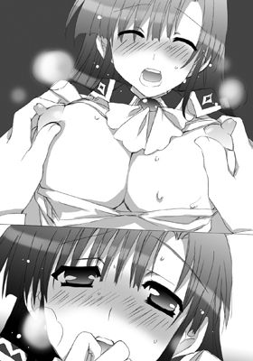
「はあっ、はぁっ。あ、あ、あぁああ......」
乱れた髪をかきあげながら、会長は顔を蕩かせて虚空を眺める。
完璧な会長は、まっすぐな長髪はいつだって寝癖一つなくさらさらだし、制服にだって皺一つ寄っていない。
なのに、髪を乱し制服も着乱れ、せわしない息遣いでぼうっとしている様子に弘樹はぐっとくる。
しかも、ただ胸をちょっといじっただけで。
何度も何度もイッてしまい、潮噴きまでしてしまうなんて。
「っはぁはぁ。あ、ああ、んん、はぁ......。こんな......恥ずかしすぎるの......いや。こんなかっこわるい私も......嫌いよ」
汗にまみれ、真っ赤になった顔で葉華はかすれた声で言った。
激しい羞恥と罪悪感が彼女を責めたてる。
弘樹はたまらず、彼女を上向かせた。
親指で彼女の薄い唇をつっとなぞると、そのまま唇にねじこんだ。
「んんっ！ っむ......」
小さな声をあげて、会長が目を細める。
その様子を弘樹は凝視しつつ、親指で歯列を割って彼女の唇を半開きにさせた。
そして、そのままキスをする。
「んぅっ。んは、はぁ......。んんっ。んー......」
甘えるような声をもらしながら、彼女は彼の舌に必死に舌を絡めてくる。
ぽたたっという音がして、甘酸っぱい蜜が床に滴り落ちていった。
びくくっと身体を初々しく痙攣させながら、鼻にかかった艶声を出し、浅くイキながら濃厚なキスに溺れる会長。
（......すごく......やらしいし）
弘樹も思いっきり舌を絡め、彼女の歯茎を舌先でくすぐってやる。
「んんんっ！」
その舌の動きに合わせて、またも甘い声をあげる会長。
そのたびにぱたぱたっと新たな愛蜜がリズミカルに床を叩く。
甘酸っぱい香りがあたりに満ちている。
キスをしながら、弘樹が会長の乳首を二つ同時に捻りあげた。
刹那――
「んっ！ んんぅううううんんんっ！」
くぐもった声と同時に葉華が身体をぶるぶると震わせた。
（いやぁああっ。だ、だめぇえええええ。で、出ちゃうぅうううっ！）
必死にこらえようと括約筋に力をこめるも熱い衝動はとまらない。
「んくっ！ っく、ぅうううううんんっ！ ンンンーっ！」
甲高い声をあげる会長。
その次の瞬間、ぷしゅっと勢いよく黄金色の液体が股間から溢れだした。
（いやいやいやああああああ......。だ、駄目っ。駄目なのに。いやぁああ）
葉華は心のなかで叫ぶ。
だが、いったん放たれた聖水はいっこうにとまらない。
ぷしゃあああっという音と同時に、アンモニア臭があたりに漂う。
やがて、ちゅぽっという湿った音と同時に彼が唇を離した。
二人の唇に唾液のアーチがかかる。
「な、なに......。はぁはぁ、こんなの。いきなり......。ズルい......」
ぼうっと表情をとろかせる会長。あまりにも達しすぎて朦朧としているのだろう。視線がまるで定まらない。
やがて、胸を揉まれキスをしただけで、できてしまった水溜まりを見て、顔を真っ赤に染める。
いやいやと力なく首を振って両手で顔を覆ってしまう。
そんな彼女に弘樹は、ばつが悪そうに言った。
「ごめん、したくなったから、つい」
「あう......したい、だなんて......」
会長は小さくうめくと、自分の身体をぎゅっと抱きしめて目を閉じる。
「反則。そんなこと......言われたの初めてだから。なんて返したらいいか......」
「う、ううーん。俺もよくわかってないし」
「そう、なんだ？」
「んむ......」
「なんか、すっごく恥ずかしくて。死にそ......」
困り果てた顔で弘樹を睨むと、彼女はわななく唇をきゅっと噛みしめた。
「恥ずかしがらなくてもいいのに」
「でも、こんな......。お漏らししてしまうなんて......。私、子供じゃないのに......」
「確かに。まさかこんなに感じやすいなんてな。キスと胸をさわっただけでイキまくるなんてのはさすがに予想外というか......」
「バカバカっ！ うるさいわねっ！ ち、逐一言わないでよっ！」
葉華が拳を振りあげてポカポカ弘樹を叩く。
「いてて......」
「ううううっ。なんでこんなの。いやすぎっ。この呪わしい体質、絶対に治してみせるんだから」
猛烈な恥ずかしさをまぎらわせるためか、小さな子供のようにわめく彼女がかわいくて仕方なくて、弘樹はまた彼女の顔を引き寄せると、軽くキスをした。
「んんっ、も、もう......」
触れるだけの優しいキス。
それなのに、感じやすすぎる彼女はやはりぴくんっと細い肩を跳ねあげる。
「......む、うう」
弘樹が唇を離して葉華を見つめると、彼女はまんざらでもなさそうなのに、胸を隠すように腕組みをしたまま、ふんっと思いっきり顔をそむけて言った。
「こんなにも私だけ恥ずかしいのってズルいわ。今に見てらっしゃい。絶対に反撃してやるんだから......」
そのあまりにも必死な物言いはいつもの会長らしくない。
つい弘樹は吹きだしてしまう。
彼の後頭部に会長の情け容赦ないゲンコツが見舞われたことは言うまでもない。
☆
会長の反撃予告から一週間。
弘樹は彼女の出方をうかがっていた。無論、ちょっぴりどころかかなりわくわくしていたことは否めない。
どんなふうに反撃してくるのだろうかとか、どう反撃しかえそうかとか、考えるだけで周囲のいやがらせとかはどうでもよくなるくらい......正直浮かれまくっていた。
だが、会長はまるで何事もなかったかのように、毅然とした態度を崩さずに弘樹に接しつづけている。
正直、拍子抜けもいいとこというくらいに。
嫁とか婿とかいう話もいっさい出してこない。
ここまでスルーされると、逆に弘樹は不安になってくる。
「弘樹、この間の会議の議事録をまとめたものはできた？」
「すみません......。まだ」
「遅いわ。カメやナマケモノよりとろくてどうするの。霊長類の意地見せなさい」
「......霊長類の意地」
「それから、この書類、体育祭実行委員長に渡しておいてちょうだい。今日の放課後までに絶対につかまえて。いい？」
「はあ......」
「あと、来月のスケジュールもカレンダーにしておいて」
「はい」
一つの仕事が終わる前にまた違う仕事が情け容赦なく追加される。
もはや、弘樹はなにをどれだけいつまでに頼まれたのかすら半ばわからなくなっていた。そんな彼のもとへ、副会長がスキップしながらやってくる。
そして、天使のような笑みを浮かべて言った。
「ねねー。そろそろつらくなってきたんじゃなくて？ 生徒会やめたら？ 婿候補なんてやめたら？ ってか、人間やめたら？」
「さりげなくひどい用件混ぜてるよな......。断る」
「フンっ！」
ふわふわのツインテールを払いのけながら、彼女は弘樹の足を思いっきり強く踏んづけてくる。
が、彼女の攻撃を見きった弘樹がそれをかわす。
ユウヒは肩をいからせると悔しそうに彼を睨みつけた。
しかし、気を取り直して、再びにーっこり笑うと彼の耳もとに囁いた。
「でも、会長もここのところ貴方をとっても厳しくしつけているみたいだし、そろそろ追いだそうとしているのかもしれませんわよ？」
「............」
彼女の言うことをいちいち気にしていたら、とても正気じゃいられない。
愛くるしい外見からは想像もつかないほどの毒舌の持ち主なのだから。
だが、気にするなと思っても、一抹の不安は拭いきれない。
彼女の言葉は、弘樹がここのところずっと心配していたことでもあった。
（さすがにこの間のはやりすぎたか。怒らせてしまったのかもな）
一週間前の放課後のことを思いだす。
あの一件以来、会長の態度はあきらかに変わった。
それまでは生徒会の案件を手伝うといっても、たいしたものではなかったし、拘束時間もそう長くはなかった。
せいぜい、登校時と放課後くらい。
だが、今や弘樹は自由時間のほとんどを生徒会活動で費やす羽目になっている。
「まあ、思ったよりも根性だけはあるようだけど、いい加減、会長の本意を察して、自分から出ていったほうが身のためではなくて？ この学園の生徒会業務はド凡人には務まらないわ。万年、赤点すれすれのどこかの誰かさんみたいな低脳な猿にはとくにね」
「っちょ、なんでそんなこと知って......」
「あーら、そんなの興信所に頼めば一発でしょう？」
「プライバシー侵害だろ」
「フンっ！ お猿にプライバシーなんてあって？」
「猿と一緒にするなー！ このドリル頭っ！」
「似たようなもんでしょー！ 貴方なんて猿以下よ！ あと、ドリルってなんですの!? このわたくしの麗しい縦ロールをドリル呼ばわりするなんて万死に値しますわっ」
弘樹と副生徒会長が、こうやってやいやい言い合うのも、もはやおなじみの光景になってきつつある。
他の生徒会メンバーたちは顔を見合わせて笑いを押し殺している。
メガネをかけ、集中して書類に目を通しつづけていた会長だが、顔をあげるとふっと厳しい表情を緩める。
しかし、再びまたクールな表情を取り戻すと、仕事に没頭する。
そんな会長の姿を生徒会の面々がほうっと熱いため息をもらしながら眺めている。
これもいつもと変わらない光景だ。
「よし、チェックはここまで。少し、外の空気を吸ってくるわ。副会長、私がチェックし終わったものを念のため軽くチェックしておいてくれる？」
「あ、はい！ このわたくしにお任せください」
「では、十五分後にお茶にしましょう。一年の貴女たちは、お茶の用意をお願いできるかしら？ おいしいロールケーキを買ってきてあるから。冷蔵庫に入ってるわ」
「はいっ！ 葉華さまっ！」
「わあ、ロールケーキ♪ うれしいですわっ♪ ありがとうございますっ！」
生徒会メンバーが我先にと冷蔵庫や紅茶のセットに群がる。
それを一瞥すると、葉華は生徒会室のドアから外へと出ていった。
（話を切りだすなら今しかない、か）
弘樹も仕事を中断して彼女のあとを追う。
誰も各々の仕事に夢中で、ただでさえ存在感皆無な彼の行動には注意を払っていなかった。
会長は颯爽とした足取りで学校の中庭までやってくる。
そして、周囲を注意深くうかがって誰もいないことを確認すると、生い茂る木々をずんずんっとかいくぐっていく。
少しすると半径一メートル程度開けた場所があった。
その中央にある石の上に彼女は腰をおろした。
（中庭にこんなとこがあったんだ？）
会長のあとを追ってきた弘樹は驚く。
確かに、聖アリア学園の敷地は広いが、中庭の庭木の奥にこんな場所があるなんて知りもしなかった。
校舎のざわめきはかすかに聞こえてくるのに、同じ学校のなかとはとても思えない。
会長は大きく伸びをして、薄く雲がかかった青空を眺める。
さよさよと吹く風に心地よさげに目を細める。
「紅茶じゃないけど、よかったら」
「あら、ありがとう？ 気が利くわね？」
途中の自販機でコーヒー牛乳を二つ買った弘樹が、片方を彼女に差しだした。
すると、彼女は一瞬驚いて、それから鷹揚に笑う。
「これ、初めて飲むわ。実は一度飲んでみたかったの」
「へえ、そうなんだ？」
「だって、会長がこういうの飲むってなんだか絵にならないじゃない？」
「っぶ、本当にかっこつけるよなあ......」
「当然よ。だって私はみんなの王子なんだもの。乙女たちの夢はけして裏切らないわ。この高貴な私に似合うのは、フォションかフォートナムメイソンかハロッズといったとこかしら」
そう言うと、彼女は石の端っこに座り直し、彼に目で座るように勧める。
耳にしたことのないカタカナばかりの固有名詞に首を傾げながら、弘樹は、会長の好意に甘え、背中合わせに座って空を見上げた。
淡いブルーの空を背景に、薄霧のような雲がゆるゆると流れている。
さわさわと草葉がこすれ合う音が耳に心地よい。
「ここは？」
「私のお気に入りの場所、ナンバー二よ。誰にも気兼ねなくくつろげる場所」
「へええ、確かに超穴場かもな」
「ナンバー一はあの裏山。でも、あそこはちょっと遠いでしょ？ だから、ちょっとした隙間時間はここでくつろぐことにしてるの」
「ほお」
チュンチチチ......。
鳥の鳴き声がどこからともなく聞こえてくる。
二人はコーヒー牛乳を飲みながら、まったりくつろぐ。
会長の本意を確かめようとあとを追ってきた弘樹だが、面と向かってそういうことを尋ねるのもいかがなものかと、話を出しあぐねてしまう。
と、そのときだった。
「ああ、忘れてたわ」
「ん？」
「お祈りしないと――食事の前にはいつもしてるでしょう？」
会長がそう言うと、コーヒー牛乳のパックを傍に置いてその場に立ちあがり、後ろを振り向いて祈りのポーズをとる。
つられて、弘樹も同じように胸の前で手を組んだ。
聖アリア学園はカソリックの学校なので、食事の前に祈りを捧げる。
だがしかし、次の瞬間、弘樹の手に冷たいものが触れ、かちゃりという音がした。
「へ？」
弘樹は自分の目を疑う。
なんせ、自分の手首に手錠がかけられていたのだから。
「フ、フ、フ。かかったわね」
「なんのつもりだ......」
「だって、私、反撃すると言ったでしょう？ もう忘れちゃったの？ あきれた物覚えの悪さね。私、自分の発言には責任を持つわ」
「っぶ、てか、ま、まさかこのために......」
「んふ、油断させておいて反撃というのは常套手段じゃない？ むしろこんな手にかかるなんてマヌケもいいところ。ずいぶんとおつむがおっとりしてらっしゃるようねえ？」
会長は勝ち誇った笑みを浮かべると、つつっと彼の首筋を人差し指でなぞった。
思わずびくっと反応してしまう弘樹を見据えて小さく舌を出す。
「弘樹を罠にかける準備をする一方で、ちゃんと反撃すべく勉強もしてきたし」
「べ、勉強って――」
彼女が隠れた努力家だということはすでに弘樹にはわかっている。
その彼女が「勉強してきた」と言うくらいなのだ。
弘樹の顔に期待と不安とが同時にひろがる。
（じゃ、最近の厳しい態度って全部このためだったってのか!? なんという策士。なんという孔明の罠）
「男の人にはさすがに力ではかなわないから、反撃できないように手荒なことをさせてもらったわ。ごめんなさいね？」
まったく悪いとは思ってもいない口調で言いながら、彼女は彼をその場に立たせた。
そして、身体を寄せると、ぎこちない手つきで彼のズボンに手を伸ばす。
が、やはりためらいがあるのだろう。触れる寸前で手をとめる。
にもかかわらず、弘樹の半身がズボンを跳ねあげて彼女の手を叩いた。
「な、なななっ！ な......。い、今の違うわよ。断じて私が触ったんじゃないんだから。なんでこんなに節操なく動くの！ コレはっ！」
「......わかってるし。サーセン」
「で、でも、話が違うじゃない。なにもしてないのにこんなになってるなんて......。おかしいわね......」
彼女がうろたえる。
「いや、想像したら、つい――」
「え？ なにを想像したの？」
「そりゃ、これからのこと」
「む、そ、想像しただけでこんな......。人のことをいっつも敏感すぎるとか言うけど、これじゃ人のこと言えないじゃない！ バカバカっ！」
葉華が顔を真っ赤にして、ぴしゃりと漲りを叩いた。
「っぐ......。いててっ！」
「......ちょっと手順が狂っちゃったけど、手間が省けていいのかしら？」
会長は目をしばたたかせて、強気なことを言いながら、震える手でそっと漲りに触れてみる。
ズボンの下にしっかりとした硬さを感じて自然と顔が赤らむ。
「すごく......硬い。こんなに硬くなるものなのね」
驚いたままを口にする会長に、弘樹のほうが恥ずかしくなる。
葉華はズボンのジッパーをおろそうとする。
が、すでに半身が漲りきっているため、つかえてうまくおりない。
「ん、結構難しいのね......」
「いて、ってててっ」
「男なら我慢なさいっ」
「んな無茶な......」
緊張をごまかすように、二人はそんなことを言い合う。
やがて、ジッパーがおりきると同時に、なかから勢いよく肉棒が飛びだした。
「っきゃあっ」
会長が小さく悲鳴をあげていったん手を離してしまう。
「......すご、い。こんな感じなのね」
息を呑んで、指の隙間から半身をこわごわ見る。
力強く空を指し示した肉筒には太い血管が浮きでている。
葉華の視線を感じて、びくんっと上下に跳ねる。
（こんなに動くなんて。すごい......。ちょっと怖いかも。でも、反撃するって言ったのだし。ちゃんと勉強もしたのだから。最後までしないと――）
彼女は自分を奮い立たせると、ぐっと口端を引き結んだ。
「これをこうするのよね......」
真剣な面持ちで再び手を伸ばすと、優しく触れた。
指先に熱を感じると、胸がとくんと高鳴る。
（とてもすべすべしてて熱い。どくどくしてる。力強いのね）
好奇心と恥ずかしさとがないまぜになって葉華の興奮を高める。
「こんな感じにするのよね？」
手を筒状にすると、会長は竿をしごきはじめた。
弘樹の反応を確認しながら手の圧を調整して、いろんな触り方をして感じやすいツボを懸命に探していく。
「く、ううっ。会長、こんなとこで......そんな」
「バカバカっ！ こんなところじゃないとできないじゃない！ ここのほかにいったいどこでやれというのよっ！」
「な、なんでキレ気味なんだよ」
「うるさいわねっ！ 黙ってなさい。気が散るんだからっ！」
半ばヤケになって葉華は手首のスナップをきかせてペニスをしごきつづける。
ほっそりとした美しい指がグロテスクな肉塊に絡みつく様を見ているだけでも、弘樹はどうかなってしまいそうになる。
だが、そもそも弘樹はイキづらいタイプで。手でこすりたてられるだけではそうそう簡単にイケそうもない。
ぱんぱんに張りつめているのにいっこうに果てようとしないそれを見て、葉華は吐息まじりに呟いた。
「す、ごい。どんどん硬くなってはちきれそうなのに。まだ......なの？」
「ぐ、そんなこと言われてもな」
「持続力があるってことなのね。確かそれはいいことだって書いてあったけど。ということは、手だけじゃ駄目なのかしら」
会長が早口でまくしたてる。彼女も相当余裕がないようだ。
「さあ......」
「し、仕方ないんだから」
会長がその場にひざまずくと、恐る恐る舌を出した。
「こうすればいいのでしょう？」
眉をハの字にして、まだ濡れていない幹をちろっと舐める。
「っくぅっ。ま、待った。そんな――」
湿った柔らかさが漲りに触れ、弘樹は前屈みになった。
「へえ。こうすると......。いいのね」
葉華は肉幹を両手で支え、顔を上下させながらペニスをしゃぶりはじめる。
最初はおずおずと――怖いものにでも触れるかのように。
しかし、だんだんと慣れていくに従い、その舌の動きも大胆になっていく。
「ん......。っちゅ、れろっ。んちゅ......。はぁ......。んんっ」
学園内で、誰かに見つかる可能性だってまったくないわけではない場所で。
とてもいやらしいことをしている。
（こんなとこっ。誰にも見せられない......。見られちゃ駄目なのに）
そう思えば思うほど、葉華は身体が疼いて、いてもたってもいられなくなる。
（ああっ、変な気持ち。こんな私を誰も知らないのに。私だって知らなかったのに）
「っちゅ、んっ。気持ち、いいの？ んんっ」
息を弾ませながら、弘樹を上目遣いに見つめて尋ねる。
形のいい唇からつっと唾液が伝わり落ち、地面へと吸いこまれていった。
「そりゃ......気持ちいいに......決まってるし。っく、ううう」
弘樹が押し殺した声で答える。
「っん、っちゅ......。れろ、んんんっ。恥ずかしい？ これでおあいこ」
小さな顔を傾けると、ぢゅぢゅっと音をたてて吸いあげていく。
「でも、まだまだ、その。出てこないのね。タフすぎ......なんだから」
もしも、これがそういう行為だったら――
と、つい葉華は考えてしまう。
（こんなにタフだったら、私、死んでしまうかも......）
身体の中心を貫かれ、何度も何度も穿たれても果てない屹立。
想像するだけで、ラヴィアがひくひくと物欲しげに蠢く。
（駄目っ。なんてやらしいことを考えてるの。私ったら）
奥から蜜が溢れてきて、葉華はあわててきゅっと太腿をきつく閉じる。
いやらしいことをしているせいか、いつも以上に身体が敏感になっている。
「あ、ああ......。どうしよう。私......。こんな、はずじゃ......」
葉華はペニスからいったん口を離すと、その場にうずくまってしまう。
はぁはぁっと息を弾ませて、潤んだ目で弘樹を見上げてくる。
「会長？ どうしたんだ？」
「......わからないの。苦しくてっ。変なの。どうしたらいいのかしら」
苦しげに胸を押さえて、身体を小刻みに震わせている。
「どうしたらって。火がついちゃったとか......？」
「そんなの知らないわ。おかしいの、私。どうにかなっちゃいそ」
「わ、わかった。とりあえず手錠をはずして」
「え、ええ」
弘樹に言われ、葉華は震える手でポケットから手錠の鍵を取りだすと、彼の手首から手錠をはずした。
刹那――
「っきゃ、ああっ」
いきなり、彼が身体を押し倒してきて、小さな悲鳴をあげる。
「な、なにをっ。弘樹っ!?」
地面の上で、弘樹の重みを感じながら、会長は必死にもがく。
しかし、両方の手首をつかまれてしっかり押さえこまれてしまう。
弘樹は、自分がいままでかけられていた手錠を葉華の両手首へとかけた。
そして、息を乱しながら彼女の耳もとで囁いた。
「もう、限界。こうしたら会長の身体も収まるし。いい？」
「こうしたらって。なにをする......つもり」
これから先のことなんて想像がつくはずなのに確かめずにはいられない。
「会長に俺のこれを挿れる」
「あっ。そ、んなっ。ん、んんんっ」
ショーツ越しに硬い熱の塊を感じる。待ちかねていたとばかりに、ラヴィアがうねり、それを欲しがった。
「ああああっ。いやいやいやぁああああっ！ んあぁあああっ！」
ショーツに張りつめた亀頭が食いこんだだけで、葉華は背筋をアーチ状に反らすと、びくくっと激しく身体を震わせた。
「あ、あぁっ。な、なんで。こんな......。ああああっ！」
下腹部で悦楽の塊がはじけると、全身にひろがっていった。
鋭すぎる絶頂のあとには気だるい痺れが身体に残る。
「会長、これだけでイッたんだ？ すごいな......。気持ちよさそうだ」
「ン、うう......。だ、だって......。ああ、身体が勝手に......ン、っふ」
葉華はまるで骨が抜けてしまったかのようにくったりとして、はぁはぁと息を弾ませている。
（ああ、こんなはずじゃなかったのに。でも、もう......とまらない）
視界がぼんやりと霞がかって、なにも考えていられなくなる。
「会長、挿れるよ？ いい？」
弘樹が彼女の耳に熱い息を吹きこみながら囁いた。
葉華は目を強く閉じると鋭く叫ぶ。
「っ!? わ、わざわざ聞かないで。そんな無粋なことっ。婿と嫁ならいずれすることなんでしょ!? だったら別に――」
「んじゃ、わかった」
「っん！ あ、くっ！ あぁああっ！ や、あぁああああああ！」
言葉半ばで、熱いものが敏感なところにじかに触れたかと思うと、ものすごい圧がワレメを押しひろげてきた。
会長は背筋をさらにのけぞらせて目を見開く。
「くっ！ あ、はっあぁあっ。んんっ。や、あ、ああっ。い、痛っ。っくぅ」
びくくっと全身を波打たせて、苦悶の表情を浮かべた。
「ご、めん」
弘樹が動きをとめて、葉華の様子をうかがう。
「ん、ううん。平気......だから。これくらいっ」
会長は気丈に言うが、震えはいっこうにとまらない。
どうしたらいいかわからず、弘樹が彼女の頬を撫でる。
すると、彼女の表情がほんのわずかに和らいだ。
葉華は彼の手を強く握りしめて耐える。
弘樹はじりじりと腰を進めていく。
ぬかるみの奥はとても熱くて狭い。ぎっちりと半身を締めあげてくる。
「はぁはぁ......。あっ、あっ、あ、んあああっ。ん、っく。硬い、のが。っく」
奥に侵入してくる雄々しい肉棒に、葉華はうめき声をあげる。
（なんなの、この感じ......。苦しくて痛いのに......。切ないなんて）
狂おしい感覚が身体のなかで暴れまわる。
やがて、途中で侵攻がとまった。
弘樹が葉華を真剣なまなざしで見つめてくる。
彼女は、苦しげに笑うと、必死の形相でうなずいてみせた。
汗で濡れた額に貼りついた彼女の前髪を払いのけてやりながら、弘樹は体重をかけて一気に奥まで貫いた。
「ああっ！ あぁあああああああああっ！」
ほっそりとした顎を突きだして、葉華は四肢を硬直させる。
刹那、ただでさえ狭いヴァギナが男根を力いっぱい締めあげた。
「っく。会長、きつい......」
弘樹の顔一面にも汗が吹きでて、ぽたぽたと葉華の身体へと滴り落ちる。
「んはっ。あ、ああっ。っつぅ。あ、あんっ。っく、あぁ。やんっ。あ、大きすぎ、なのがいけな......いんじゃ......。あ、ああんっ」
葉華が顔を左右に振りたてて、腰を引こうとする。
しかし、弘樹は彼女の腰骨をつかむと、そのまま腰を突き動かしはじめた。
「ひっ。あ、ああっ。や、だ、だめっ。やっぱりっ。む、無理っ！ あ、あぁっ。やぁあぁああっ。は、入らないっ。そんなの入らないってば」
今まで気丈に耐えていた会長が、顔をくしゃくしゃにして子供のようにわめく。
手首を縛めている手錠がかちゃかちゃ音をたてた。
弘樹が彼女の頭を撫でながらたしなめる。
「大丈夫。ちゃんと入ってる、から――」
「んはっ。うそよ、うそうそっ！ あんなのがっ。私のな、かにっ!? んはぁ」
「うん、ちゃんと入ってる。なかすごく熱いし......うねりまくってる」
「いやいやいやぁっ。そんなこと、言わない、でぇえっ」
会長は弘樹の言葉に取り乱す。
しかし、「言わないで」と懇願する一方で、すでにぐじゅぐじゅになった膣は獲物を食むかのように獰猛な動きを見せる。
刀身にねちっこく張りついてくる肉膜を感じながら、弘樹はピストンをつづける。
「ああっ！ はぁあっ。んあっ。すご......く。変、なのっ。あ、あぁっ。いやあ、なんなのっ。これっ。あ、あぁあああっ」
痛みが引くのと同時に、熱を帯びた悦楽がどんどん肥大していく。
それはとても甘美な快感で、葉華の理性が「危険だ」とアラームを鳴らす。
だが、本能はそれを思うまま貪る。
腰が勝手に動き、乳首も股間も炎のように熱を持っている。
「んはっ！ やぁああっ！ お、おかしいっ！ おかしいの、私っ。あああ、これ、気持ちよすぎ......。いや、違うっ！ 今のはっ、違うんだからあぁあああっ！」
本音が口をついて出てきてしまい、会長は口を両手で覆う。
いつもはきりりとした表情がすでに蕩けまくっていて、視線もおぼつかない。
「はぁはぁ、違うの？ こんなに気持ちよさそうなのに」
もっともっとよがらせたい、狂わせたい。そんな気持ちが、弘樹の腰の動きをひときわ大胆にする。
彼は本能の赴くまま、肉槍で開かれたばかりの女壺を上下左右やたらめったら乱れ打ちにした。
ぐじゅ、じゅぷっという湿った音がつなぎ目からもれでて、ヨーグルトのようなかぐわしい香りが草葉の匂いに混じる。
「いっ！ あぁあっ。やぁああっ。気持ち、いいのっ！ いやぁあっ。あああ、こんなこと言わせないでっ。こんなのっ。だめだめっ！ だめぇえええええっ！」
ぱちんっと脳裏に電流が弾けた途端、会長は甲高い声をあげて、びくくっとひときわ激しく身体を痙攣させた。
「あぁああああぁああっ！ ひぅっ。やぁやぁあああああんっ！」
全身汗みずくになった会長が、目を見開いたまま、悲鳴じみた啼き声をあげて淫らに身体をくねらせのたうちまわる。
目からは涙がとめどなく溢れ、口端からは透明なよだれが伝わり落ちる。
膣が彼女のあまりにも鋭すぎる絶頂に反応して、子宮口をノックした漲りを渾身の力で絞りあげる。
「っく、射精るっ」
腰を引こうとするも、蜜壁がきつく吸いついてきてペニスを外に出しきる前に、亀頭から白濁のマグマが噴出した。
「やっ！ あ、あぁあっ！ 熱いっ。ん、はぁあああっぁあああああっ！」
会長は、激しいイキ声を放つと、首を力いっぱい左右に振りたてて髪を振り乱す。
ややあって、ぷつんと糸が切れたマリオネットのようにがくりと首をうなだれる。
乱れた髪が彼女のこめかみや額に張りついて、しどけない様相をかもしだしている。
（あ、あ、ああ......。なか、熱いのがいっぱい。しかも、まだ動いてる......）
「ンっ。んんっ......。はぁはぁ......。んはぁ......」
灼熱の棒が自分のなかでぴくぴくと動く様子を感じながら、会長はぐったりと地面に身体を預け、細い手足を投げだしたまま、時折、甘い声をもらす。
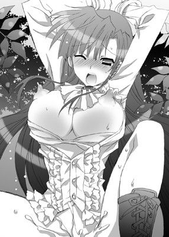
骨を抜かれてしまったかのように、まるで身体に力が入らない。
蜜壺は波打ちながら、最後の一滴まで搾りつくそうと収斂する。
「ああっ。はぁああ......。ま、またぁああ......。や、やぁああん」
もう落ち着いたと思いきや、肉棒がなかでひくんっと動いただけで、さらなる悦楽の波が彼女の理性を押し流す。
一度激しくイッたあとの身体はことさらに感じやすくなっていて。
かすかな刺激を与えられるだけで、会長は簡単に達してしまう。
「い、やあ......。こんな。な、なぜ。こんなに......」
肉棒から逃れようとするのに逃れる力すら残っていない。
彼女は狂おしげに息を乱しながらも、必死に膣に力をこめて、侵入者を追いだそうと試みる。
だけど、そのたびに敏感な箇所に亀頭のエラがあたってざらついた肉壁がうねり、強烈なエクスタシーが彼女の動きを阻む。
「や、やぁああ......。も、許して......。お願い」
激しくイキつづけた会長は、潤んだ瞳で切なげに弘樹に懇願した。
さすがにこれ以上やったら会長がどうにかなってしまうのではと心配になってきた弘樹が腰を引いてやる。
ようやく、じゅぽんっという鈍い音と同時にペニスが抜けた。
なかでせきとめられていた濃い精液がなかからとろりと出てきて、そのむっとした匂いがあたりに漂う。
手錠もはずしてやる。と、悦楽に身悶えすぎたせいで手首に赤い痕ができていた。
その痕がとても背徳的な烙印のような気がして、弘樹はどぎまぎする。
会長の胡乱な瞳は焦点を結んでいない。
「あ......。ン、お茶の時間、なのに......」
葉華は、気だるそうに時計を見て身体を起こそうとするも、すぐに力が抜けてしまうようで立つことすらできずにいる。
敏感すぎる彼女にとって、セックスは刺激が強すぎたらしい。
もう足もがくがくになっている。
そこで、弘樹が彼女の手を引っ張ると、助け起こした。
「はぁはぁ、あ、うう。早く戻らないとみんなに怪しまれちゃう」
乱れた髪を手櫛で整えながら、彼女は困り果てた顔をする。
「でも、こ、こんな格好じゃ。あ、ううう......。どうしよう。その、に、匂いとかもしてしまうかも......だし。し、下着も濡れちゃったし......。どうしたら......」
膝小僧同士を引っつけると、その場にうずくまってしまう。
弘樹は、街頭でもらったポケットティッシュをポケットから取りだすと、彼女の股間を拭いてやる。
「あ、あっ。ンっ。や、あぁあっ。んくっ」
表面を優しく拭いているだけなのに、会長は敏感に反応してしまう。
そんなかわいらしい反応を見ているだけで、今しがた果てたばかりのペニスが力をぐぐっと取り戻してゆく。
「って、駄目だって。会長......やらしい声禁止。またしたくなるし......」
弘樹が頭をかきながら、会長をたしなめる。
すると、彼女はきっと目をつりあげて肩をいからせる。
「わ、私じゃなくて。弘樹がやらしいんでしょう!? だ、だって、いきなりあんなことしてくるなんて。しかも、こ、こんなとこで......。羞恥心というものがないの!? 外でなんて......。変態のすることなんだからっ」
あんなこと――を思いだしてしまったらしく語尾がしぼんでしまう。
耳まで真っ赤になった彼女はもごもごと口ごもると押し黙った。
「だが、先に仕掛けてきたのは誰だ？」
「うっ！ そ、それは......。でも、まさかこんなことになるなんて......」
「俺だって男だし。なるに決まってるっての！」
「ううう......。そうなの？ 男の人って想像以上にケダモノなのね......」
「んむ。だが、誰にでもケダモノになるってわけじゃないし」
「う、うううううう......。そ、それってどういう意味......」
むううっと唇を尖らせて、会長が弘樹を上目遣いで睨んでくる。
「会長の反応がよすぎだから......かな？」
「ば！ バカバカっ！ うるさいうるさいっ！ だからそれを治したいって言ってるでしょ！ こんなはしたない女の子、お嫁さんにもらってくれる人なんていないに決まってるわ！ というか、この欠点を治すのが貴方の役目なんでしょーっ。な、なのにこんな、こと......して」
弘樹の指摘に、会長はムキになって激しく言いかえす。
力が入らない拳でポカポカと彼を叩きながら。
「欠点じゃないっての。むしろ長所って何度も言ってるし。少なくとも俺にとってはそうだ。やっぱり治さなくてもいいって」
ついさっきの蜜事を思いだしながら、弘樹は彼女の頭をぽんぽんと軽く叩いた。
ちょっと触れるだけで身体全体で激しい反応を示す会長の淫らな姿が脳裏に焼きついて離れない。
そして、それを少し思いだすだけで、力を失った半身に芯が通る。
（もうエロ本だとかエロゲとか、そういった類のおかずアイテムは卒業だな）
フっとアンニュイな笑みを浮かべ、彼は元気いっぱいな下半身を軽くはたく。
「で、でもっ。そもそもはこんな体質だから、こんなことになる......わけで」
「そんなにいやだったか......」
ティッシュについた薄赤い破瓜の印を見て、弘樹が顔を曇らせる。
と、会長があわてて首を振った。
「バカバカっ！ ち！ 違うのっ！ そういうわけじゃ、なくて......。ただ、そのいろいろ。いっぱい恥ずかしいとこ見られちゃって......。もうっ、どうしたらいいか。生かしてはおけんとかってよく言うけど、あんな感じ。弘樹をこの世から消してやりたいくらいよ！」
「消すって......」
ただの言葉のアヤだろうが、なまじっか会長ならやりかねないため弘樹は苦笑する。
「ああっ、もう、こんな私、ダサいわ......。嫌い。なんなのかしら。ずっと調子狂いっぱなしよ。恥ずかしすぎ。死にたい......」
体育座りをしたまま、彼女は膝に顔をうずめてしまう。
「恥ずかしいとこ見せ合ったのはお互い様だろ？」
弘樹の言葉に、葉華は顔をあげた。
「――え？ 弘樹も恥ずかしかったの？」
「ったりまえだろが！ こっちだってあんなこと初めてだし」
弘樹が横を向いて仏頂面で言い捨てると、会長の目が大きく見開かれた。
つづいて、真一文字に引き結ばれていた口がほころぶ。
「へえ、そうだったの。なら、おあいこ......かしら？」
「っぶ、そういうものなのか？ よくわかんねーし」
「なんだ、そっか。恥ずかしいのはお互い様、かあ」
ふふっと笑うと、彼女は静かに目を閉じた。
「なんだよ......」
「ううん、なんでもない。でも、なんかそういうのはいいなあって」
「そうか？」
「うん。だって誰も知らないのに、二人だけ知ってるってこと。それって、二人だけの秘密ってことだもの――」
恥ずかしそうに、いたずらっぽい瞳を輝かせながら、会長が弘樹を見つめてくる。
木漏れ日に照らしだされた彼女の髪は淡くけぶり、虹色の光を放っている。
汗に濡れた顔もきらきらと光っている。
彼女のあまりにも無邪気な笑顔は、たった今、大人への階段を昇る儀式をすませたばかりの少女のものとは到底見えない。
（本当にいろんな表情見せるんだな）
普段はきりりとクールな顔でどこか近寄りがたいような雰囲気を持つ彼女。
二人きりのときは、とても気が強くて乱暴で。
どこか子供っぽいとこもあって。
そして、エッチのときはとびきり感じやすい女の子。
嫁だの婿だのという問題も最初は災難とばかり思っていたはずなのに。
弘樹はいつの間にか彼女から目が離せなくなっていた。
今、葉華が彼へと向けるまなざしはとても暖かで、親愛の情のこもったものだった。
「しかし、てっきり嫌われてるとばかり思ってたけどなあ......」
思わず、弘樹はそう呟いた。
すると、彼女は目をぱちくりさせて首を傾げる。
「え？ ああ、ここのところ厳しくしてたから？」
「まあ、な」
「それは、愛の鞭っていうじゃない？」
「鞭打ちすぎだろ......。小姑は副会長だけで充分だっての」
「ああら、嫁を姑呼ばわりするなんて。失礼な婿様ね」
ようやく元の調子を取り戻した葉華が大げさに肩を竦めてみせる。
「そんなに厳しかった？」
「ああ、スパルタ並みに。いやがらせとしか思えんほどの仕事の量だったし......」
「あれでもちょっとは手を抜いてあげたつもりなのに。根性が足りないんじゃない？」
「勘弁してくれ。悔しいが処理速度がまるで追いつかん」
「あは、そういうときはね、するべきことを全部書きだして。優先順位の高いものから片づけていけばいいだけよ」
「会長は、そういうの得意そうだよなあ」
「ええ、無駄は嫌いよ。なんでもさくさくっとね。複数の案件を同時に手際よく片付けていくのが快感なの。そしたら、私、できる女♪ みたいに思えるじゃない？」
いつもの会長節が彼女に戻って、弘樹は内心ほっと胸を撫でおろす。
「はいはい、さすが王子様だな」
「だってできない子はいらない子なんだもの。できる子になるしかないの」
「え？」
「なんてね。ま、当然のことよね。働かざる者、食うべからずってこと。澤城家に生まれたからにはそれなりのことはやらなくては、ね」
そう言うと、会長はようやくその場から立ちあがった。
まだ足がふらついているようだが、スカートをはたいて丹念に皺を伸ばす。
ポケットのなかから二つ折りの櫛を取りだすと髪を梳く。
顔を少し横に傾けて、艶やかな髪に櫛を入れる様はとても女らしい。
だが、そうしてキチンと身なりを整えたあとは、いつもの会長らしいきりっとした表情に戻っていた。
王子然とした様子を取り戻した彼女はうーむとうなる。
「それにしても、なんて言いわけしたものかしら......」
「ちょっと休むつもりがうたた寝してたとかじゃ？」
「駄目よ、そんなの。かっこわるいもの。もっとかっこいい理由にしなくちゃ、女の子たちが幻滅しちゃう」
腕組みをすると、彼女はむうっと唇を尖らせる。
どうやら、本気でかっこいい理由とやらを考えているらしい。
「本当にかっこつけだなー」
「何度も言ってるでしょ？ いい加減覚えなさい。アホの子じゃないのだから。王子様はいつだって凛々しくなくちゃね。私を見習って、弘樹もちょっとは婿様としてかっこつけなさい」
葉華は毒を吐きながらも、茶目っ気たっぷりに片目を瞑って見せる。
「はいはい」
「はいは一回。減点一」
「はい......」
弘樹はそう応えると、改めて彼女を見た。
成績優秀、品行方正、全校生徒の憧れの君。
そんな彼女につりあう男にならねばならないのだ。
（ちょっとやそっと背伸びしてかっこつけたんじゃ追いつかないだろなー）
輝く自信に溢れた彼女を見ながら、半ば途方に暮れそうになる。
「ちょっと厳しいかもしれないけど頑張って。くだらないことにいちいち時間を割かれるよりはマシでしょう？ 自分のレベルアップにもなるし。一石二鳥よ」
くだらないこと――
彼女の口から発せられた言葉が弘樹の耳に残る。
「ん？ って、まさか、あんだけ厳しくしてたのって。いやがらせ防止のためだったとかいうんじゃ？」
彼がそう尋ねると、会長はしまったと口を塞いでそっぽを向く。
長い髪で隠れて表情は確認できないが、横から見た頬はかすかに赤らんでいる。
「そうか。会長が一緒にいたら誰もなにもできないし、仕事に没頭してたらンなこと気にしている暇もないしな......。なるほど」
愛の鞭とはよく言ったものだ、と感心してしまう。
拘束時間がやけに増えたと思っていたが、そのからくりが解けて、改めて会長の心配りに感謝する。
会長は頬を朱色に染めたまま、彼を睨みつけると胸を張ってぶっきらぼうに言った。
「......だって私が貴方を護るって言ったでしょ？」
（くそっ、やっぱり男前すぎだろう）
内心一人ごちながら、弘樹は今日からとりあえず筋トレでもはじめるかと、ささやかすぎるほどささやかな目標を立てる。
二人は、真剣にどう言いわけをしようかと話し合いながら、中庭を去っていった。
その後、生徒会室に戻った会長を大げさなほど心配していたメンツが出迎えた。
副会長の小姑チェックが入り、「葉華様、恐れおおくもタイが曲がっていますわよ」、「あら、副会長。私としたことが。ありがとう」なんていういかにも女の園的なやりとりが交わされ、弘樹も葉華も気が気ではない。
だが、とりあえずは弘樹がとんでもない粗相をしでかして、それを会長がしかりつけていたということにして、副会長をなんとか力技で納得させる。
やがて、お茶会がはじまり、お嬢様らしい和やかな女子トークがはじまった。
とびっきりおいしいロールケーキとかぐわしいハーブティーとに舌鼓を打ちながら、バラ園のバラが綺麗に咲いていたとか、そんな他愛もないお嬢様たちの会話に、弘樹と葉華は耳を傾ける。
ふと視線が交わったとき、さっきのことを思いだして、恥ずかしそうに苦笑する。
誰も知らない二人だけの秘密がくすぐったい。
ささやかな幸せを二人はじわじわと感じ合っていた。
が、そのときだった。
マナーモードの携帯が震えだし、会長がポケットのなかから携帯を取りだした。
「はい、葉華です。お父様？」
生徒会のメンバーたちはおしゃべりを中断して葉華を見守る。
「ええ、それはわかっています。ですが、今日帰ってから、その時期だけはご相談させていただけませんか？」
彼女の緊迫した表情からただごとではない様子が伝わってくる。
少女たちは心配そうに顔を見合わせてしきりに首を傾げていた。
「はい、では失礼します」
ややあって、電話を切ると、会長が顔をあげた。
「ごめんなさい。なんでもないの。さあ、お茶をつづけましょう」
いつもどおりの彼女にみんなほっと胸を撫でおろし、和やかなお茶会を再開させる。
何事もなかったかのように、少女たちの会話に相槌を打ち、時折、軽い笑い声をあげて微笑む会長。
ことのほか心配そうだった副会長の顔も自然とほころぶ。
だが、弘樹はただ一人、談笑する葉華の様子を注意深くうかがっていた。
秘密特訓 会長様が男子寮で絶頂ガマン！
「弘樹、教科書を忘れたの？ まったく仕方ないわね。見せてあげるわ」
会長が周囲の嫉妬の目も気にせずに堂々と弘樹の机へと自分の机を引っつけてくる。
「いや、大丈夫だって――ノートだけちゃんとうつしておけば......」
「駄目よ。ただでさえ進行が遅れ気味なのだから。少しずつ取り戻していかないとならないの。それは婿候補としての義務よ」
「遅れ気味というか遅れまくりというか......」
実際、弘樹は半ば途方に暮れていた。
会長が学園に働きかけたのだろう。
結ばれた次の日から弘樹は彼女と同じクラスに転入することになった。
会長と同じクラスということは、一学年十クラス中一つしかない特別クラスなわけで。
当然、他のクラスよりもレベルが段違いに高い。
あまりもの進度の違いに彼は愕然とする。
「二年の段階で高校数学全部終了とかってマジありえん......」
数学の教科書など見るのもいやだと、弘樹は忌々しいものを見る目つきで会長の教科書を睨みつける。
彼女の教科書はさまざまな書きこみでびっしりと埋められていた。
まだ授業で習っていないところさえも。
「んー、努力があればなんでもできる」
「猪木かよ！」
「でも、大抵のことはなんとかなるものよ」
そう言う彼女の口調には確固たる自信が滲みでている。
行動に裏打ちされた言葉は強い。
「まあ、そうかもしれんが、そもそも生まれ持った器というのもだな――」
「貴方は......私の婿様なのだから。多少の無理はしてもらうわ。だけど、そのためのフォローは惜しまないつもりよ？ いい？ これはあくまでも義務なの。私情ではないのだから勘違いはしないで」
ツンとした口調ながらも、よくよく聞けばさらりと健気なことを言う会長に、弘樹の相好が崩れる。
（ンなこといわれたら、頑張っちまうだろうがっ。くそーっ）
毎日つづけている筋トレのメニューが脳内で一・五割増し、それに加えて、勉強のほうもせめて復習だけでもしてみるかという気になる。
「......苦労かけるな」
「それは言わない約束よ。婿様を支えるのは嫁の義務だもの。いい？ 義務なの。別に私情ってわけじゃないのだから」
やや異なるが、まるで時代劇のような台詞を口にする二人。
周囲は「これは突っこみ待ち？」と、二人の様子を遠巻きに眺めている。
会長の頬はかすかに赤らんでいる。
周囲を気にして彼女は精いっぱいいつもと変わらないフリを貫いているつもりなのだろうが周囲にはこう見える。
見つめ合う視線の先には二人以外何者もいない。
完全に二人だけの世界がそこにできあがっていた。
葉華はそのつもりはないのだろうし、本人はかなり抑えているつもりだろうが、いろいろもろもろ関係が進んでいる様子が駄々もれだ。
ゆえに、弘樹に対するやっかみやいやがらせは格段に減っていた。
弘樹の不興を買う＝会長を敵にまわしかねない。
そういう図式が、一般生徒たちの共通認識になりつつあった。
しかし、そうはいっても全員がそうであるはずもなく――
葉華が席を立つやいなや、入れ替わりに副会長が教室にやってきた。
学年が違うのに、わざわざ彼女は休み時間のたびに二年の教室へと殴りこんできては弘樹につっかかってくるのだ。
「くううううう、さっきから黙って見ていれば......。なによ、このイチャラブっぷりはっ！ ありえませんわっ！ 貴方、いったいどんな手を使って葉華様をたらしこんだのよっ！ 宇宙人かなんかにさらわれて洗脳されたとしか思えませんわっ！」
ユウヒは、憎しみをこめて思いっきり彼の足を踏んづける。
「いてっててててて。たらしこむとか洗脳とか。人聞き悪いこというな。ド凡人にはそんなことはとてもできんっ」
「じゃあ、この奇々怪々な現象の理由を十文字以内で説明しなさいっ！」
「そんなん知るかっ！」
「絶対にこのわたくしがその座から引きずりおろしてやりますわ！ 葉華様とイチャラブするのはわたくしですものっ！ 副会長であるわたくしのほうがよっぽど葉華様に相応しいわっ！」
「イチャラブ言うな」
「大体ね。葉華様みたいな生真面目なタイプって、貴方みたいなどーしようもない駄目男に引っかかりやすいんだから。わたくしが護ってあげないとならないのよ。うんうん」
「駄目男言うな」
「駄目も駄目じゃない！ 駄目駄目駄目っ！ さっきの小テストだって〇点だったのちゃんと見てましたわよ。よくもまあそんな点、恥ずかしげもなくとれますこと。それで葉華様の婿候補とかぬかすのだからおこがましいことこの上ないわ！」
「はいはい......おこがましいおこがましい」
弘樹が副会長の頭をぽんぽんと軽く叩いてやる。
すると、彼女はその手を振り払ってから彼に人差し指をびしぃっと突きつけた。
「汚らわしい手で触れないでっ！ いい？ わたくしはお子様ではないの！ れっきとした高校生っ！ たった一歳年上だからって年上ぶらないでくださる!? それに貴方の肩書きは下僕！ わたくしの肩書きは副会長！ 上司として敬いなさい！」
「はいはい、敬う敬う」
「まったく舐めた真似を。こんな存在そのものが不愉快極まりない男のどこがいいのかしら。葉華様ったら男の趣味が救いようのないほど悪いのかしら」
「悪かったな......」
「頭もよくないし、かといって運動が得意っていうわけでもないし。取り立てて才能もないのに。葉華様とつりあうなんて本気で思っているの？ このド凡人風情がっ！」
彼女の指摘は毒舌ながらも的を射ているため、ぐさぐさと弘樹の胸に突き刺さる。
特につりあうつりあわないといった話は耳に痛い。
「んで――葉華様がこないだお茶に遅れたとき、貴方、なにしましたの？」
「............っ!?」
いきなり彼女が鋭いところを突いてきて、弘樹は息を呑む。
その反応を見たユウヒは、さらに鋭く突っこんでくる。
「葉華様は時間を破ったことなんて一度もないの。それに、あの日からあきらかに葉華様の様子がおかしいこと、わたくしは気づいていてよ。そして、次の日に貴方がこのクラスに転入してきたことも。さあ、なんの陰謀に葉華様を巻きこんだの？ 白状なさい。なんならカツ丼でもオーダーしましょうか？」
すごみを帯びた童顔のユウヒに、刑事の尋問ばりにつめ寄られ、弘樹のこめかみに汗が伝わる。
と、そのときだった。
葉華が席へと戻ってきたため、ユウヒはしぶしぶ引きさがる。
会長は携帯とスケジュール帳を手にしていて、さっきとは打って変わったクールな表情に戻っている。
仕事スイッチが完全にオンになった状態だと、弘樹にはすぐわかる。
「副会長、ちょっと校長に呼ばれたので出かけてこなくては。会食に出席してきます。放課後の定例会議までには戻るから。それまでにしておかねばならないことをメモしたわ。悪いけどお願いできるかしら？」
「あ、はいっ！ わたくしにお任せください！ こんなのよりもよっぽどお役に立ってみせますわっ！」
肘で弘樹をどかしながら、ユウヒは会長から恭しくメモを受け取る。
「もしもし？ ばあや？ 私。ええ、急遽会食に同席することになったの。時間があまりないから着替えに戻る時間はないわ。現地でコーディネートを頼みたいのだけどスタイリストの手配をお願い。フォーマルを少し崩した感じがいいわ」
会長は携帯を肩に挟んだまま、鞄のなかに手早く荷物をしまっていく。
数学の教科書だけは、弘樹のためにと残して。
（しかし、相変わらず忙しそうだな）
彼女の傍にいると、こんなにも忙しい高校生が他にいるだろうかと弘樹はつねづね疑問に思う。
学園では、王子と会長としての役割をこなしながら、その一方で親の仕事を手伝い、会食やパーティーがあればそれにも付き合う。
その合間に英会話をはじめ、茶道やダンスなど、さまざまなレッスンを受け、毎日の予習復習もこなすのだ。
まさにスーパー女子高生と呼んでも差し支えないだろう。
「弘樹、ごめんなさいね。なんとか時間をつくって勉強を教えてあげたいのだけど」
出かける支度を整えて、教室を去り際に葉華が彼に耳打ちする。
「あ、いや。俺のことは構わず。俺もやれるだけやってみるし」
かなり自信はなかったが、時にははったりも必要とばかりに弘樹は彼女に応えた。
すると、彼女はとてもうれしそうに微笑む。
そして、こう言った。
「ふふ、はったりを使えるようになればたいしたものよ」
（っく、やっぱバレバレか......）
弘樹はがくりと肩を落として苦笑いするのだった。
毎日がこんなふうに飛ぶように過ぎていった。
会長は最近ことのほか忙しいようで。
朝は弘樹が彼女をお屋敷まで迎えにいき一緒に登校するも、最初っから最後まで授業を一緒に受けて、それから放課後、生徒会室へ行くなんてことはまずない。
大抵、なにか急用が入って、葉華はどこかへと出かけていき、放課後、生徒会室へと戻ってきて、会長の仕事を集中してこなす。
帰りは弘樹が彼女をお屋敷に送っていき、弘樹は男子寮へと戻る。
非常に限られた時間しか一緒にいられないし、一緒にいられたとしても、仕事モードオンなままの会長。
なかなか恋人らしいムードにはならない。
（ってか、待てよ？ そもそも俺たち恋人なんだよな？）
ついつい弘樹がそう不安になってしまうくらい、淡々とした関係がつづいていた。
（でも、待てよ。嫁とか婿とか、そういう話にはなってるが、そもそも恋人っていう取り決めではないような気が......）
いったん考えだすとどんどんと悪いほうへと考えてしまう。
弘樹はぶんぶんと首を振った。
（つか、なに、フツー立場が逆だろ？ 彼氏に放っておかれて不安になってっつーのは、女の子側なわけで......。くそ、情けなさすぎ）
昼休み、学食で食事をとったあと、葉華が休んだ分の授業のノートのコピーをとりながら弘樹はため息をついた。
（敏感体質を治す訓練も全然やってないしなあ。つか、むしろ、めっちゃしたい......ていうか）
放課後の中庭で激しく絡み合ったときのことを何度も思いだしては、自分で処理をする毎日だった。
（会長はどう思ってるんだろうな。あの時のこと......。こんなふうに考えるのは俺だけとか）
またもマイナス方向に考えが傾いてしまう。
「いやいや、忙しくてそんなん考える余裕もないだけだろ」
そう思いつつも、新たな婿候補を見つけたのかもしれない、などという乙女思考回路が延々ととまらない。
（アホか。ンなこと考えている暇あったら、少しでもレベルアップしろっての）
弘樹は自身に活を入れて、頭のなかから葉華のしどけない姿を無理やり振り払った。
☆
「その件は先ほど副会長に進捗を聞きました。特に問題ないでしょう。え？ 体育祭実行委員長が話をしたいと？ アポはないはずだけど、まあ緊急なのでしょう。十分だけならなんとか時間をとれると伝えて。その間に弘樹、予算の承認のチェックをお願い」
「はい」
会長は生徒会の面々にてきぱきと指示を与えながら、机の書類を片づけていく。
机の上に開いておかれたスケジュール帳には、土日にいたるまでびっしりと予定が書きこまれている。
（やっぱすごいよな。頭の作りがそもそも違うんだろうなあ）
弘樹は自分の仕事リストを一つずつつぶしながら、ちらりと会長を横目で盗み見る。
彼女の仕事のスピードは鬼のように速い。
同時に複数の案件をこなしていく。しかも、スマートに。
予期せぬトラブルが起こって、生徒会メンバーが泣きついてくることだって多々あるというのに、いついかなるときでもあわてふためくことはない。
（だけど、絶対無理してるよなあ）
登下校のとき、弘樹と二人きりになったときには、しきりにあくびを連発して眠そうに目をこすっていたりする。
もちろん、かっこつけの彼女のことだから、すぐにあくびをかみ殺して平気なふりをするも、平気じゃないのは弘樹の目には一目瞭然だった。
（少しでも負担を減らしてやらんとな。婿として――）
そうは思うものの、なかなか実際は難しい。
「弘樹。これ全部やり直し。プリントし直して。一番大事な数字をミスってるわ」
はあっとため息をつくと、会長はきつい口調で弘樹に言った。
「すみません」
「イージーミスよ。ちゃんと確認した？ プリントする前に私のチェックを通してと言っていたはずよ？」
「いや、会長が席をはずしていたんで。先にプリントしたほうが手間が減るかなと」
「でも、結果は二度手間でしょう？ 私は無駄が嫌いなの」
「......すみません」
役に立ちたい。手伝いたいという気持ちだけが空まわりして、こういった失敗もざらにある。弘樹は自己嫌悪に肩を落とす。
そんな彼を副会長が勝ち誇ったように見下してくる。
生徒会室にはぎすぎすした雰囲気ばかりが流れていた。
そして、当然、気配りの鬼である葉華自身もそれに気づいている。
（駄目だわ。こんな状態じゃ......）
パンパンっと手を鳴らすと、彼女は言った。
「みんな、今日はもう帰っていいわ。明日、仕切り直しましょう」
生徒会役員の顔を一人ひとり見ながら、にっこりと笑ってみせる。
「えと、じゃあ......。お疲れ様です」
「葉華様もあまり根をつめないでくださいね」
「では、ごきげんよう」
気まずい雰囲気に耐えかねていた生徒会メンバーが、仕事を中断すると、いそいそと帰り支度を整えて生徒会室から出ていった。
その背を葉華が作り笑いを浮かべて見送る。
「会長。なにかお手伝いできることがあればわたくしは残りますけれど？」
「いえ、副会長。それは明日お願いするから」
「......でも」
「お願い」
「......わかりましたわ」
本当は残りたそうにしていた副会長が、しぶしぶ引きさがる。
なぜ弘樹だけは残すのだという非難の目を弘樹本人に向けながら――
やがて、副会長の足音が完全に遠のいてから、会長はふっと真顔になった。
「ふう」
机の上にこてんと頭を突っ伏すと、大きなため息をつく。
「――大丈夫？」
「平気」
「まったく平気そうに見えないんだが」
弘樹の言葉に会長は目を閉じる。
「そう、駄目ね。まだまだ精進が足りない」
「いやいや、単にストイックすぎなだけだと」
「でも、私はもっともっと頑張らなくちゃならないの。それだけの期待を背負ってるのだから」
彼女の瞳はくすんだガラス玉のように曇っていた。
感情らしい感情がかけらも浮かんでいない。
机に頭を預けて身じろぎしない様子は壊れたマリオネットのようにも見える。
たぶん心身ともに磨り減ってくたくたなのだろう。
その原因が自分にもあるとわかっているだけに、弘樹はいたたまれない。
「さっきとか足引っ張って悪かったな。だが、できることならなんでもするから――」
「でも、結局私が直接やったほうが早いもの。弘樹、貴方ももう帰っていいわ。あとは私がやっておくから」
自分がやったほうが早い――その言葉が弘樹の胸をえぐる。
だが、その痛みをぐっとこらえて、彼は食いさがる。
「いや、本当に今度はちゃんとやるから。他にも俺レベルでできる仕事があったらまわしてほしい」
「でも、まともにやってたら今日中に終わるかどうかもあやしいわ」
「それでもいいから」
「私は会長だからやるの。貴方がそこまでする義理はないでしょう？」
「やりたいからする、それだけだ」
「............」
弘樹の返答に会長は目をしばたたかせながら言葉を失う。
しばらくして、彼女はため息まじりに言った。
「じゃあ、そうね。一年の子たちがさっき作ってくれてたリストをまずは作り直してくれる？ 修正指示は出してあるから」
「了解。さっき駄目出しくらったプリントの修正が終わったらそれにとりかかる。他にもなにかあったら遠慮なく言ってほしい」
「ありがとう。でも、本当に遅くなりそうだから。キリのいいところで帰りなさい」
「わかった」
そうは言うが、弘樹は毛頭帰るつもりはない。
こうして、二人は、黙々と残った仕事を片づけはじめた。
生徒会室はしんと静まりかえる。
書類を繰る音やキーボードを打つ音、コピーをとる音などしかしない。
一言も発することなく、二人は作業に没頭する。
時計が針を刻む音が妙に響く。
「よし！ 終わったーっ！」
やがて、弘樹が与えられた仕事を全部終えて大きく伸びをする。
窓の外はすでに真っ暗で、時計を見ると、すでに十一時を過ぎていた。
時間があっという間に経っていて驚いてしまう。
「あ、いけない。もうこんな時間――門限が......」
弘樹の声にはっと顔をあげると、会長が手首を返して、腕時計を覗きこんでから顔を曇らせる。
「門限って何時？」
「七時......。でも、ちゃんとばあやに連絡入れておけば大丈夫。さすがに七時厳禁というわけではないわ。もう私は子供ではないのだし」
そう言う割りには、ややうろたえているようにも見える。
おそらく、ばあやはかなり厳しい人なのだろう。
「......ふう、これから帰るのも大変だし。もういっそのことここに泊まっちゃうかな」
「え？」
「だって、登下校の時間さえ今は惜しいもの。ここにはソファだってあるから仮眠はとれるしね」
「シャワーとかは？」
「う、問題はそれなのよね......。部活棟のを借りようかしら」
「でも、タオルとかは？」
「う......」
「んじゃ、俺のタオル貸そうか？ 寮に戻ればあるし」
「え、ええっ!? でも、男子寮は女人禁制でしょう!? 会長自ら校則を破れと？」
葉華が険しい顔で弘樹をじっと睨んでくる。
（って、別に俺がタオルを取ってくればいいだけで。忍びこめとか言ったつもりはないんだが）
弘樹は驚いてしまう。
が、ドギマギしながらもそれを敢えて口にはしない。
「まあ、女人禁制たって、この学園にあそこに近寄るような女子はまずいないだろ。学園の端も端にあるしな。だけど、澤城邸まで帰ることを考えれば時間は短縮できるし。時間の節約にもなる」
「だ、だ、だけど――」
「俺の部屋使ってくれて構わないし。代わりに俺がここで寝るよ」
「いや、それはさすがに悪いわ」
「少しでも疲れをとったほうがいい。ソファで寝るくらいじゃ疲れとれないぞ」
「気持ちはとてもありがたいけど。だからといって......男子寮に一人で泊まるとか。さ、さすがに無理よ......」
少女らしいためらいを見せる葉華を見て、弘樹の心臓が跳ねる。
「じゃあ、俺も......一緒にいればいいか？」
「あ、う......。そ、れって......」
「............」
二人とも顔を染めて黙りこくってしまう。
お互いぴくりとも動かない。
だが、しばらくして、会長が机に置いた携帯を手に取った。
弘樹は彼女の一挙手一投足を見守る。
「――もしもし、ばあや？ ご、ごめんなさい。ちょっと仕事が立てこんでて。連絡入れそびれちゃったの。え、ええ......。わかってます。心配かけてごめんなさい」
ばあやには頭があがらない様子の会長。
普段、他の生徒たちにはけして見せない彼女の姿に弘樹はつい相好を崩す。
いつもはクールで大人びていて凛々しいのに。
子供のような顔をして必死に言葉を紡ぎだす様についにやけてしまう。
「ごめんなさい。いろいろ準備に追われていて。会長職を任されたからには、ちゃんと役目をまっとうしたいの。確かに、時間内に終えることができなかったのは私の不徳の致すところ。でも、それを挽回したいの」
弘樹を睨みつけながら、会長は必死に声を潜めてばあやに事情を説明する。
しっしっと彼を追い払う会長だが、弘樹は彼女の様子を眺めては、ひときわにやにやしてしまう。
（つか、こうなることくらい予想もつくだろうに。だったら、最初から生徒会室の外に出て電話かければいいのに）
完璧であるはずの彼女が、結構うっかりしているのがいろいろツボで。
にやにやがとまらない。
そして、彼がにやつくほど、彼女の頬は朱色を帯び、表情の険しさが増してゆく。
「――それで、今日は生徒会室に泊まります。ああ、心配しないで。婿様がちゃんと戸口の外で門番になってくれるらしいから」
「っぶ！」
会長の言に思わず弘樹は吹いてしまう。
が、その次の瞬間、ばあやがなにか彼女に言ったらしく、彼女は携帯を強く握りしめると肩をいからせて高い声をあげた。
「はい、え、えええ？ そ、それってどういうっ!? ち、違います！ そ、そんなんじゃないわ......。ば、ばあやっ!? あ、も、もうっ！」
ばあやが電話を切ったらしく、会長は深いため息をついて携帯を閉じた。
「どうした？」
「い、いえ、なんでもないわ。ちょっとばあやにからかわれただけよ」
「そうか」
「まったくもうっ。そんなんじゃないっていうのに」
「そんなの？」
「い、いえ、なんでもないわ。でもまあ、とりあえずはこれで大丈夫よ。さ、行きましょう。案内しなさい」
葉華が、気を取り直すと、いつも以上にきりっと表情を引き締めて、鞄を手にさっさと生徒会室から出ていく。
そのあとを弘樹があわてて追いかけていった。
☆
男子寮に一つの影が走り、もう一つの影が少し遅れて前の影を追っていく。
もうすでに消灯時刻を過ぎている。
人気のない廊下はしんと静まりかえっている。
消灯時間と言いながらも、ここそこでうっすら明かりがもれているが、わざわざ寮長がそれを注意することもない。
男子生徒たちの夜更かしは見て見ぬふりをしている。
女子寮の見まわりは厳しいが、男子寮の見まわりはかなりいい加減ということもあり、二人は難なく弘樹の部屋へとたどり着いた。
「はーっ、ドキドキした......。見つかったら退学ものだもの」
会長が息を弾ませながら興奮気味に言葉を吐きだした。
ついさっきまで疲れ果てて生気を失った顔だったはずなのに、今は目が輝いている。
「大丈夫だって。どうせ男子なんてのはこの学園じゃ底辺なんだし。野放しもいいとこっていうか。管理もズサンだし」
「――そうなのね。うらやましいわ」
「そうか？ ほったらかしすぎるのもどうかと思うがなー。大体、この寮、めっちゃボロいしな」
「確かに、かなり古い建物なのね。外はそんなでもないのに」
「景観がどうのこーので外見だけよくしてるんだろ？」
「そうだったのね。外から見たままだけではわからないということもたくさんある。そういうことね......」
会長はしみじみとそう言うと、じっと宙を見つめて何事か考えているようだった。
だけど、すぐに顔をあげると、改めて弘樹の部屋を隅から隅まで眺める。
あまり物を置いていないせいか、かなりさっぱりとした味気ない部屋だ。
（やばっ、エロ本放置とかしてなかったよな!?）
あわてて目を皿のようにして、会長に気づかれないようにさりげなく主にベッドの下などをチェックする。
幸いぱっと見たところに、会長に見られたらまずいようなものはなく、ほっと胸をなでおろす。
「へえ、ここが弘樹のお部屋なのね」
「あ、ああ。あまり片づいてないけどな」
「弘樹の匂いがする」
会長は深呼吸すると、淡く微笑む。
「え？ 俺の匂い？ くさいか？」
「ううん、そんなことはないわ」
「そ、そうか......」
会長の言葉に弘樹は落ち着きを失う。
男子寮の自室に初めて女子を――しかも恐れ多くも会長を連れこんで二人きりというシチュエーション。
しかも、会長は生徒たちの目がないと、王子の仮面が取れる。
いつもの男前な葉華とのギャップが激しすぎて、女の子っぽさがかなり強調されているということに本人は気づいているのだろうか？
弘樹は彼女を意識しないようにと、敢えて彼女から視線をそらしながら尋ねた。
「で、シャワーだっけか？ タオルだな」
「うん、ありがとう」
「てか、部活棟反対側だし、もう男子寮の使ったらどうだ？」
「えええっ!? そ、それはさすがに......む、むぐっ」
彼女の声が大きくなったため、弘樹が彼女の口を塞いだ。
葉華の頬にぱっと朱が散る。
「......大丈夫だって。俺が見張りに立っておくし」
「............」
弘樹の言葉に会長はこくりとうなずいた。
大きな目が動揺に揺れている。
ただ単に声がもれないように口を押さえただけなのに。
弘樹は妙な気持ちになってしまう。まるで彼女の口を押さえて、抵抗できなくして――これからなにかイケナイことをしようとしているような錯覚を覚える。
とっさに弘樹は彼女の口から手を離した。
「ご、ごめん。ここ壁薄いから......。こっちの隣のやつは特にキケンで――会長の声聞こえたら壁でもぶち破って『俺も混ぜろ』とか言いかねんし」
「そ、それは困るわ」
「うむ、俺も困る。会長をいじるのは俺だけがいい」
「あ、は。そう......なんだ。ふふ」
こっぱずかしい沈黙が久しぶりに二人の間に訪れる。
（こ、ここはやはり男として――いっちょがつんと迫るべきだろ!?）
（いや、待て。会長はめっちゃ疲れてるんだから、まずは寝かしてやれ）
相反する気持ちが弘樹のなかで激しい衝突を繰りひろげる。
しかし、一度体を重ねて以来、ずっとずっと肩透かしだったこともあり。
彼の半身は、ズボンの下ですでに痛いくらいに屹立していた。
「――会長っ」
「ん、な、なにっ!?」
弘樹が葉華の両肩をつかむと、彼女はびくっと身体を反応させて目を見開いた。
声も完全に裏返ってしまっている。
「なんか、こういうの久々っていうか......その」
「そ、そ、そうだったかしら？」
しどろもどろになる弘樹だが、葉華のとぼけ方もぎこちなくてかなりわざとらしい。
二人は向かい合ったまま、困り果ててしまう。
気恥ずかしい沈黙が訪れる。
なにか言わねばと、弘樹が口を開く。
「俺、だけかな、その。前のって......。忘れられないの」
ずっと胸に巣くっていた疑問が、つい口をついて出た。
すると、会長はうっと一度言葉をつまらせたあとで、ムキになって反論する。
「っば！ バカ！ わ、忘れるわけないじゃない！ 私、そんなに記憶力悪くないわよ。弘樹と一緒にしないで」
「でも、まったく顔にも出してなかったっつーか......」
「ポーカーフェイスは得意なのっ！ バカバカっ！ そんなの知ってるくせに！ あんなの忘れられるわけないじゃない！」
「そのわりには俺の前じゃ表情がころころ......いでっ」
弘樹の手を会長がぎゅうっと思いきりつねりあげた。
「バカバカっ！ そんなの言わないでよ！ どうせ気が抜けると顔に全部出ちゃうわよ。悪かったわねっ！」
「悪いなんて言ってないし。むしろツボっつーか......」
「またそんな！ うそばっかりっ！」
「うそじゃないって」
「むぅう......。ほ、ほんとなの？」
「うむ」
「......っ!? かっこよくない私がツボとか。わけわからないわ！ 変なの！」
腕組みをすると葉華はぷいっとそっぽを向く。
「――そうか。なんだ、そうだったのか。会長もあの時のこと思いだした？」
「......そんなの愚問よ。いちいち聞かないでくれる？」
会長は怒りながらも顔はすでに茹でダコのようだった。
「なるほど、思いだしてたんだ。俺と同じだったんだな」
「......悪い？」
「だから悪いって言ってないって。なんでいちいちそんなけんか売ってくるんだ」
「バカバカっ！ こうでもしないと恥ずかしくて死ぬからよ！ そんなの決まってるじゃない。どうしてそんな愚問ばっかり何度も何度も聞いてくるの!? ほんっとに愚かもいいとこだわっ！」
「っぶ！」
子供のようにわめきちらす会長に、弘樹は吹きだしてしまう。
「って！ 笑わないでよ。もう......。これでも必死に......。今までの私どおりに振舞っているつもりなのに。なんなのよ......もう」
葉華は口を尖らせて眉根をひそめる。
しばらく、沈黙が流れたあと、弘樹は恐る恐る彼女に提案してみた。
「......訓練、久々にしてみる？」
「え？ こ、こんなところで？」
とくんっと葉華の心臓が甘く疼き、声も上ずってしまう。
「うん、こんなところだからこそ。我慢できるかもって」
とってつけたような言いわけに、弘樹の心拍数があがる。
だが、彼女はもっともだとうなずいた。
「た、確かに。それは理にかなっているわね。そうね。そっちの訓練もしなくちゃならないのだものね。この体質を治さなければならないんだもの」
大義名分――そんな言葉が会長の胸にも浮かぶ。
再び部屋がしんと静まりかえる。
しばらくして、弘樹が言った。
「じゃ、しよう」
「は、はい......」
いつもとは違う彼の強めの口調に会長は従順にうなずいてしまう。
その反応に彼女自身が一番驚いていた。
（なんでこんなに素直に応えてしまうの......）
「じゃ、ここに立って。スカートをたくしあげてくれる？」
「......はい」
抗いたい気持ちをぐっとこらえて、「はい」と言うだけで身体の芯が火照ってくる。
（期待......してるの？ まさか。そんなんじゃないわ）
彼女は視線をつっと彼からそらすと、スカートをきつく握りしめてしまい、あわてて手を離した。
「訓練だもの。克服しなければ――」
自身に言い聞かせるように呟くと、思い直してスカートの端を摘んだ。
そして、ゆっくりと手を上へと移動させ、裾をあげていく。
ほっそりとした太腿の上にスパッツに包まれたデルタゾーンが現れた。
少しスパッツは小さめなようで、ぴっちり張りついた光沢ある布地にωの形がくっきりと浮かびあがっている。
弘樹はじっとそこを見つめた。
「や、やだ......。なに見てるの。そんな......。別にただのスパッツだし。そんなにじっくり見なくたって......」
ねっとりとした視線を股間に感じ、葉華は身を捩らせると後ずさりした。
壁に肩や背中、ヒップが当たる。
（やだ。スパッツはいてるのに。透視でもされてるみたい）
彼女は追いつめられた小動物のような感覚を覚え、ぎゅっと目をきつく瞑った。
が、スパッツ越しに媚肉に触れられて、身体を強張らせる。
「んんんっ!?」
目を薄く開くと、彼の手のひらが股間へと押し当てられていた。
彼は二枚貝をやわやわと揉みこんでくる。
「ん、やっ。あ、ああっ......」
葉華があわてて太腿をきつく閉じて、彼の手の動きを妨げようとする。
だが、弘樹はもう片方の手の人差し指をワレメの付け根に差しこんだ。
まるでブザーでも押すかのように。
「あっ！ は、ああああっ。や、そ、こは......。ん、んくっ」
久々の快感に葉華は早くも浅くイッてしまう。
「会長、声抑えて――気づかれたらまずいし」
「わ、わかってるわよ。そんなこと言われなくてもっ」
小さな声で鋭く言うと、彼女は自分の口をしっかりと両手で覆った。
そんなポーズと追いつめられた目とが弘樹をさらに刺激するとも知らずに。
「もう......すごく熱くなってる」
弘樹は熱い吐息まじりに呟きながら、股間を揉みこみつづける。
人差し指に触れるこりっとしたしこりをいじめてやりながら。
「ンくっ。はぁはぁっ。あ、はぁああ......。汗、かいてたからだ......もの」
ついつい太腿から力が抜けてしまい、何度も気を取り直して、力を入れ直すが、すぐにまた足の力が緩んでしまう。
そして、緩めば緩むほど、弘樹の手のひらの動きは大胆になっていく。
「ひ、あっ。や、や、あぁああっ。はぁはぁ......。だ、めぇ......」
会長が必死の形相で喘ぎ声をこらえながら、身体を小刻みに震わせる。
（ああ、こんなの......。が、我慢できないっ。どうして......なの!?）
彼の手のひらから快感がじわじわと伝わってくる。
それと同時に敏感な肉豆が鋭い快感を享受する。
鈍い快感と鋭い快感がブレンドされ、敏感な会長の身体を攻めてくる。
「ン、ンンっ。ふう......。はぁはぁ......。だ、だめっ。あ、あああっ！」
どんどんと興奮と体温が高まっていき、会長は何度も何度もびくびくっと身体をしならせる。
「はぁはぁ......。あ、あ、あぁっ」
なかからどんどんと熱い汁が染みでてきて、とまらなくなってしまう。
下腹部に力を入れようとするも、まるで力が入らない。
会長は、何度も何度も浅く気をやらされ、壁に力なく身体を預けきった。
長い髪が汗でぐっしょり濡れた彼女のこめかみに貼りついており、薄く開かれた唇がやけになまめかしい。
「はっ、はぁはぁ......。あぁ、もう......こんなにだなんて。そんな......」
「スパッツから染みでてきてる」
「うそ!?」
「本当だよ。ほら？」
弘樹が湿った手を彼女へと見せてくる。蛍光灯に照らしだされた手のひらには、なめくじの這い跡のようなてかりが確認できる。
たまらず、彼女はつっと視線をそらした。
弘樹は黙ったまま、彼女のスパッツに手をかけると、力任せに引き摺りおろす。
「やっ！ あっ！」
会長が、あわててスカートから手を離して押さえるも、すでに淡いピンク色の縞々パンツがあらわになっていた。
そのパンツも弘樹の手は容赦なくずりさげようとする。
が、その手を会長が必死になって押さえつけた。
「だ、だめっ。ま、待って。汗かいてるし、その......。ここ明るいしっ。で、電気消してちょうだい。お願い......」
「大丈夫。消灯時間だけど、ちゃんとドアの隙間にはタオルをつめてるし、窓からも光がもれないよう細工してあるから」
「違うのっ。そ、そうじゃなくて......」
「会長、見せてほしい」
「あ、ううう。そんな。だ、駄目よ。そんなとこ」
「ちゃんと会長の。見たいんだ」
「そ、そんなに？」
「うん」
彼女は、眉をハの字にしてしばらく迷う。
ややあって、彼女は今にも消えてしまいそうなか細い声で尋ねてきた。
「それは――婿様としての命令？」
「そう」
「ううう......。さっきばあやが言ってたの。婿様の言うこと、なんでもよく聞きなさいって。お願いを聞いてさしあげなさいって......」
「うん。じゃあ、できるね？」
「わ、わかったわ......」
会長は、おずおずと自分でショーツを引きおろしていく。
膝をかがめ、よれたショーツが太腿から膝、ふくらはぎへとおろされた。
彼女は身体を起こす。
だけど、スカートの端をつかんで股間は隠している。
「手、さげて。そうだな。スカートの端は代わりに口で咥えられる？」
「う、は、はい......」
葉華が言われたとおりにおずおずと手をさげると、スカートをからげて端を口に咥えた。
薄いヘアに包まれた丘が姿をみせる。
すでにさっきの愛撫によって、ヘアは丘へと貼りつき、露の玉をまとっている。
弘樹は顔を近づけると、甘酸っぱい香りを胸いっぱい吸いこんでから、彼女の股間を親指で左右に開いた。
「あ、あああっ！」
柔らかな二枚貝を開かれた途端、会長が声をあげると四肢を強張らせた。
びくびくっと釣りたての魚のように彼女は身体を痙攣させる。
刹那、じゅんっと彼女の身体の奥からとろみのついた蜜が溢れでてきた。
「や、あ、あ、あぁっ」
自分の敏感すぎる反応に彼女は顔を赤らめる。
「今のだけでもうイッたんだ......。会長」
「だ、だって、そ、それは」
「体質改善どころか。もっと敏感になっているような気がする」
「そ、そんなはずは」
「だけど、もうこんなだし」
興奮気味に言うと、弘樹は彼女の内腿に触れた。
太腿に力がこもるもそれを割り開いてやる。
と、案の定、つつーっといやらしい銀糸が床へと吸いこまれていった。
「や、あ、ああああ。や、めて。だ、だめ」
彼女が小さく叫ぶと同時に、むきだしになった肉真珠がひくついた。
それに誘われるように、弘樹は唇を押しつける。
「ひっ！ や、やぁあぁああっ......ン、んんんんっ！ むーむぅうーっ」
一番感じやすい性感ポイントに突如滑らかな刺激を受け、会長は身体を激しくびくつかせた。
身体の奥がかっと熱くなり、頭の髄まで痺れる。
「いや、はぁはぁあっ。ンンンっ！」
悲鳴をあげてしまいそうになり、必死になって口もとを覆う。
ぱたたっという音と同時に愛汁が畳へと落ちていった。
今の一瞬でまたも激しくイッてしまい、早くも葉華の意識は朦朧としはじめる。
（やああっ。そんなとこ舐めちゃうなんて。だ、駄目っ。刺激つよすぎだからっ）
そう抗議したいのに、一瞬でも口から手を離してしまえば、あられもないよがり声をあげてしまいそうで、彼女は怖くて手を離せない。
「やぁ......。あ、あぁあ、はああ......んはぁはぁ......っめぇ......やぁああはぁあ」
びくんびくんっと身体を波打たせながら、会長は口を塞いだまま喘ぐ。
弘樹は構わず、肉芽へとじゅっじゅうっと吸いついてくる。
「っく。あ、あああっ。はぁはぁあっ。む、むぅうーんんーぅんーっ！」
首を激しく左右に振りたてながら、懸命にやめてと態度で訴えかける会長。
ひっきりなしにラブジュースが漏れだしてきては畳を濡らしつづける。
（あああっ！ また......ぁっ。イッてしま......う）
久しぶりに強烈な快感を送りこまれ、会長の敏感すぎる身体が貪欲にその刺激を受けとめる。
「あく、あぁあああ......や、め、てぇええ......。や、いやぁああ......」
会長は狂ったように頭を振りたてて、弘樹の頭を遠ざけようとする。
だが、弘樹の舌の動きはどんどんと激しくなる一方で。
「ひうっ。やっ、あ、あ、あぁあっ。お、おかしくっ。なって。あ、あぁっ。めちゃくちゃな......感じっ。あ、あぁはぁあ」
舌が蠢いてしこりに触れるたびに、会長はイッてしまう。
エクスタシーはどんどんと上書きされていき、とどまるところを知らない。
「あ！ やっ！ も、もうっ！ 本当にっ。やっ！ 我慢、できな、い......」
会長はいよいよ絶頂の臨界点へと追いつめられていく。
膣が物欲しげにきゅうきゅうとしまる。
そのたびに、半透明の愛蜜がラヴィアから水鉄砲のように勢いよく飛びだしてくる。
弘樹は太腿の間に手を挟んで、彼女の蜜を手のひらで受けとめながら、舌でくにくにと敏感な突起を刺激してやる。
「ンっ！ はぁあっ。あ、あぁっ！ ん、ん、んんっ！ んぅうううううっ！」
葉華は身悶えながら、再び激しく達した。
ぷしゅっとさらさらの体液が噴きでて、弘樹の手のひらを甘酸っぱい汁でいっぱいにするも、まだ彼の舌攻めはやまない。
葉華は全身をわななかせ、あまりにも激しい攻めに涙をこぼす。
「あ、あ、あっ！ な......んで。こんなにっ。んくっ。はぁはぁ。や、感じすぎちゃってわけわかんなくなって......る。こ、われ、ちゃいそ......」
あまりにも力みすぎて、血管が切れてしまいそうな、そんな危うい感覚に苛まれる。
「っちゅ、ぢゅるっ。ちゅ......。会長の声がかわいすぎだから......つい」
弘樹は愛蜜をわざといやらしい音をたててすすりたてる。
「そんな、ことっ。ない......ものっ。ん、んんん、声、だって。これでも一生懸命、我慢してる、のに......」
「それがたまらないというか......っぢゅるるっ」
「ひっ！ あ、あぁあああっ！ ま、またぁああっ！ んーんぅうんうぅっ！」
膨らんで充血したマメにしゃぶりつかれ、会長はやすやすと気をやってしまう。
あまりにも激しく早く達しすぎたせいか眩暈がする。
「はぁはぁっ。や、めて......。だ、め......。やぁああ......。んんっ、あぁ！ また！」
何度も何度も激しく絶頂に意識をさらわれるたび、潮が蜜と一緒に噴きだしてしまう。弘樹の手のひらから溢れでた淫汁が畳にお漏らしのような染みをつくる。
「いやいやいやぁあああああ......もうもうもぉお！ だ、めえぇえええええ！」
会長はついにぶるぶると始終震えている膝を折ると、その染みの上へと力なく腰をおろしてしまった。
彼女のヒップの下に黄金色の液体がじわりと滲む。
「あ、ああ......。ま、また......いやあ......。こんなの」
「会長、大丈夫だから」
そう言ってやると、弘樹が傍に投げていたタオルを手繰り寄せた。
彼女の腰を軽く浮かせると、あまじょっぱい匂いを放つ水溜まりをふき取ってやる。
その間にも彼女はずっと身体を小刻みに震わせっぱなしだった。
「はぁはぁっ。っく、ん、んんんっ。あ、ああ。変、よ。こんなっ。んん、震えがとまらないなんて」
細い肩を震わせながら、激しく息を乱して悩ましい言葉を紡ぎだす。
彼女は、苦しそうに自分の腕を抱きしめると、天井を見上げて目を細めた。
全身から汗が滲みでて、彼女の端整な顔一面を濡らしている。
（どうなってしまったの、私。こんなに何度も何度も......。気持ちよくて。なにも考えていられなくなって......。しかも、我慢できないなんて......）
きゅうきゅうっと括約筋が締まっては緩んでを繰りかえす。
粗相をしてしまったという罪悪感が彼女を悩ませる。
久しぶりにいやらしい声をあげ、それを弘樹に聞かれ、快感にのたうちまわる浅ましい格好を弘樹に見られ――
恥ずかしくて恥ずかしくてならない。
それなのに、膣の奥のほうが燃えるように熱い。
「これでよしっと」
弘樹はその場に立ちあがると、タオルを洗濯用のかごに放り投げた。
ちょうど彼女の目の高さに漲りきったペニスがあり、ズボンのなかで窮屈そうに時折びくりとしなった。
「あ......っ」
葉華は、ついそれをじぃっと見つめてしまう。
太腿同士をきゅっと引っつけて力をこめるも、奥から新たな蜜が滲みでてくるのをとめることができない。
（欲しい......）
強烈な欲求が全身を駆け抜けた。
ラヴィアのひくつきが激しさを増し、目の前がぼうっとかすむ。
会長が股間を物欲しげに見つめているのに気づいた弘樹が、ベルトをはずした。
そのまま、パンツをズボンもろとも一緒に引きさげると、雄々しく天を指しているペニスが姿を現した。
太い血管を浮かびあがらせた怒張を見て、葉華は無意識のうちに乾いた唇を舌で湿らせる。
弘樹がその場に胡坐をかいて座った。
そして、彼女の身体を引き寄せる。
「あ、う......。あぁっ。熱いっ。ん、っはぁはぁ......。あう......」
柔らかな箇所に亀頭を押しつけられ、会長はつい腰を浮かしてしまいそうになる。
だが――
「あ、あ、あぁああぁあああっ！」
弘樹が彼女の腰をぐいっと自分のほうへと引いた。
獰猛な獣がずずっと鈍い音をたてて、狭い姫穴へと侵攻する。
「あくっ。っく......。ン、はぁはぁ。あ、あああンっ」
一度は開通されたとはいえ、しばらくぶりの挿入。
痛みを覚えて、会長は腰を浮かせてペニスから逃げようとする。
だが、入念なクンニによって男を迎える準備を万全に整えていた女壺は、待ちかねた獲物を逃そうとはしない。
ぐっぽりと奥まで一気にはまったこともあり、すでに何度もイッて全身骨が抜かれたようになった彼女の力では、とても引き抜くことはかなわない。
「ン、はぁはぁ......。い、痛い、の。っく、あああ......」
会長が無我夢中で弘樹の体に抱きついてくる。
ぬくもりと胸の膨らみが押しつけられるのを感じながら、彼は彼女の背中を優しく撫でてやる。
制服の布地が彼女の背中にぴったりと貼りついていて、ブラ紐の形までわかる。
弘樹は、制服の上からブラのホックをはずしにかかる。
よく中学生の頃、女子をからかうのにはやった遊びがこんなところで役立つとはと不思議に思いながら。
ブラの縛めから解放された重たげな乳房が、たゆんっと彼の胸に触れたまま弾んだ。
そのまま制服の上着をたくしあげて、Ｇカップをむきだしにしてやると、彼は腰を本格的に突き動かしはじめた。
「やっ！ はぁあっ！ んあぁはっ。んく。んん、んーんーっ。んむっ。んはぁ」
会長は、喘ぎ声を必死に抑えようと唇を噛みしめて弘樹によりひときわ強くしがみついてしまう。
むきだしになった乳房が上下にはずんで、しこった乳首が彼の胸をくすぐる。
しっとりと湿ったおっぱいの弾力を感じながら、弘樹は狂ったようにただ本能の赴くまま彼女の身体を上下に揺すりたてる。
「ん、っく。ああっ。下からずんずんって。っく、くるのっ。あ、はぁ......っ」
下から猛烈な一撃を子宮口へと叩きこまれるたび、まぶたの裏に火花が散る。
脳裏にぴりっとした電流が走り、膣道が侵入者を締めあげる。
ずぷぬぷっという生々しい音がことさらに彼女の羞恥を煽る。
（ああっ、こんなの。駄目っ。とろけちゃうっ!?）
ただでさえ感じやすい身体がことのほか感じやすくなっている。
そんな状態で休むことなく、悦楽の肉槍を穿たれつづけ、思考が千々に乱れる。
「いやいやぁあっ。気持ちい、いのっ。あぁああ、もっともっと......してぇえっ」
本能をむきだしにした会長がいやらしいお願いを口にする。
と、そのときだった。
不意に壁がどんどんっと二度叩かれた。
「......っ!?」
葉華があわてて口を塞ぎ、弘樹が動きをとめる。
しんっとあたりが静まりかえる。
二人とも血の気がさあっと引いていった。
「おーい、寝れんぞ？ なにやってる？」
会長が顔を青ざめさせて、弘樹をすがるように見つめてくる。
張りつめた下半身をきゅうっと括約筋が絞りあげた。
弘樹は、くっとうめきながらも、苦しまぎれの嘘をつく。
「ご、ごめ......。そ、そのＡＶ見てて」
「音でかすぎだろ。ま、いいや。明日貸してくれー」
「あ、ああ。わかった......」
やがて、再びあたりに静けさが訪れる。
二人はつながったまま、ぴくりとも動かない。
ややあって、葉華が弘樹に耳打ちした。
（弘樹......。これ以上は駄目よ。バレてしまうわ）
（そんなこと言って。ここでやめるなんてできないし）
（あ、ううう。じゃ、ど、どうすれば）
（声、しっかり抑えて。そうだ。スカートの端をもう一度口に咥えてみて。そうしたら声をこらえられるかも？）
弘樹の言葉に会長は思いつめた表情でうなずいた。
たくしあげたスカートを口に咥える。
と、再び、ずんっと下方から太い衝撃が会長の中心を突きあげた。
「っ！ んんっ！」
葉華は無我夢中で彼の体にしがみつき、奥歯を噛みしめて必死に声をこらえる。
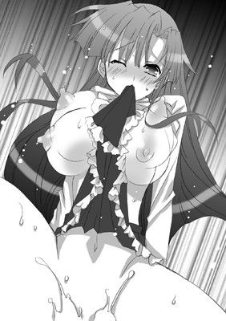
弘樹は彼女の身体を抱えこんで、肉槍で下から上へと何度も何度も貫いてやる。
亀頭が肉壁を抉っては、Ｇスポットを刺激する。
「は、はぁはぁあっ。はぁ、あ、ああああっ」
葉華はがくがくと身体を揺らしながら髪を振り乱す。
声を出さないように、その分、切なさを荒々しい吐息に託して、自らいやらしく腰を振りたてはじめた。
（ああ、勝手に腰が動いてしまうっ。なんでこんなにやらしいのっ。私の身体っ）
やがて、ふわっとひときわ大きな浮遊感が襲いかかり、彼女は彼の背に爪をたてた。
「はああっ......。あ、ああっ。ん、んんんっ！ んぅーーーーーっ！」
天をあおぎ見て、背中を思いっきり後ろに反らす。
肉壺が生き物のようにざわめきうねり、ペニスに張りついた。
そのままぎゅむっと力いっぱい締めあげ、搾りたてのザーメンを欲しがる。
「くっ！ あぁっ！」
弘樹はうめくと、射精の前兆を感じ、今度こそはと渾身の力で彼女の身体から肉棒を引き抜いた。
真空状態になって張りついていた膣膜が、外に引きずられるようにして、ようやく濡れそぼつペニスが外へと現れる。
それは、びくんびくんっと大きく二度しなると、濃い白濁を亀頭のてっぺんから撒き散らした。
沸騰したザーメンが、彼女の胸に下腹にと飛び散る。
「は、はぁはぁ......。あ、んんっ。熱い......。弘樹のが、かかってる。ん、はぁ」
とろんとした表情で、うわごとのように言う彼女。
「うん、さすがに......。今回はちゃんとしないとって思って。前は余裕なくて。その、無理だったから......なかに出しちゃって......。悪かった」
「......そんなの。いずれ婿様になるのだから、いいのに」
「や、さすがにそれは。ってか、まだ婿候補だし」
弘樹が言うと、彼女は口を尖らせてから頬を染める。
（私の身体のこと、心配してくれて......。それでなのね......）
とく、とくっとことさら甘い鼓動が彼女の胸に響く。
葉華は彼の肩に頭をこつんと預けた。
ほうっと満ち足りた吐息を放つ。
そして彼の耳もとへ囁く。
「はやく候補を取りなさい......」
「頑張るよ」
（――え？）
彼の言葉がとても意外で、葉華は改めて彼の顔をじっと見つめた。
「いやがらないのね？ 最初はあんなにいやがってたくせに」
「そりゃもう」
（そんなこと言ってくれるんだ）
熱い気持ちが彼女の胸を満たしていく。
今までに感じたことのない切なさに彼女は胸を押さえた。
「......ありが、とう」
そう言うと、次の瞬間、彼女の全身から力が抜けた。
会長は弘樹に身体を預けきってやすらかな寝息を立てはじめる。
その寝顔に彼は一度だけキスをする。
（かなり神経張りつめてたみたいだし、疲れてたんだろな）
「おやすみ......。葉華」
初めて会長じゃなく、彼女の下の名前を呼んでみる。
と、猛烈に恥ずかしくなる。
だが――
「ぬ、悪くはない、な。つか、堂々とそう呼べるように頑張らないとな」
弘樹はそう言うと、注意深く彼女の身体を抱きあげるとベッドへと横たえた。
その傍でいつもの日課となった腕立て伏せをはじめた。
「うっしゃ！ 今日は百回いくぜっ！ 一、二、三――」
こうして、二人だけの秘密の夜はゆっくりと更けていった。
独占ラブ 放課後ドキドキ新婚生活！
こうして、かなり忙しい日は葉華が弘樹の部屋へと泊まりに来るようになった。
朝はバレないように日の出前に起きて、他の男子たちにバレないようにシャワーを浴びてから寮を抜けだして生徒会室へと直行する。
こんな日は、あらかじめ買いおきしておいたパンで簡単な朝食をすませる。
朝はコーヒー派な会長が、かいがいしく豆をひいてコーヒーを淹れてくれる。
二つ向かい合わせにして引っつけた机の上に葉華がハンカチを敷いて、その上にパンが置かれてある。
こぽこぽというコーヒーが沸く音が耳に心地よい。
やがて、葉華がおそろいのマグカップにコーヒーを注いで机へと運んできた。
「婿様、今日のコーヒーはコスタリカよ」
「お、ありがとう」
弘樹は、なんでもないふうに澄まして言うが、ちょっとでも気を緩めると顔がにやついてしまう。
（ちょっとこういうのっていいよな。新婚みたいっつか......。んむ、実にいい）
最初はあれだけ反発していたのに、今やすっかり婿気分を満喫しまくっていた。
対する会長も、最初は「こんなの恥ずかしくてやってられるか」といったふうに半ばやけくそにやっている感じだったのだが、こうやって嫁のように振る舞うのがだんだんと板についてきてまんざらでもないようだ。
「んー、コーヒーおいしいなあ」
「ええ、おいしいわね」
会長がブラックで飲むのに対抗して、弘樹もブラックにチャレンジする。
本当は苦くてたまらないが、無理に笑顔をつくってみせる。
それに会長は気づいていないフリをして苦笑する。
二人の間に甘やかな雰囲気が漂っている。
早朝の生徒会室での二人きりの時間はゆるゆると過ぎていく。
「さあて。朝ごはんがすんだら、復習＆予習チェックだからね？」
「......了解」
「もうすぐ試験だし。頑張らないと。大体、試験で出るところなんて先生方の癖を考えれば予測できるし。大丈夫よ。葉華先生に任せなさい」
会長がウインクをよこすと胸を叩いた。
大ぶりのおっぱいがたゆんっと弾む。
「は、はあ......」
「でもその前に！ 今日はちょっと試してみたいことがあるの」
「ん？ 訓練なら昨日の夜もって......ぶおっ!?」
言葉半ばで会長のアッパーが容赦なく弘樹に見舞われる。
「またそんなこと言って！ もうっ。バカバカっ！」
このテの類のことを弘樹が冗談めかして言うたびに力ずくで黙らせる彼女の癖は残念ながらいまだ健在だ。
「冗談だって......。で、なにを試すって？」
顎をさすりながら、弘樹が彼女に尋ねる。
と、葉華は不敵な笑みを浮かべてポケットのなかから一本の棒を取りだした。
片方の端が少し曲がっていて、もう片方の端っこにはふわっとした丸い綿毛っぽいものがついている。
「ふっふっふ！ じゃーん。これよこれ！ 嫁修業には欠かせないってばあやから聞いたんだから！」
「み、耳掻き!?」
「そうそうっ」
パンを食べ終えた会長が椅子から立ちあがると、わくわくと弘樹の耳の穴を覗いてくる。
「ああ、汚い。思ったとおりね。婿様、綺麗にしてあげるから」
うれしそうに言うと、早速耳掻きを耳のなかに突っこんでくる。
「って、待てーっ！ それじゃ耳の穴がはっきり見えないし、会長のことだから思いっきり奥まで突っこんで鼓膜まで破きかねん！」
「なんですって！ 私はパーフェクトよ！」
「かっこつけだから人前ではな！ だが、結構抜けてたり天然だったりするだろ！」
「わ、私が抜けてる？ 天然？ ありえないわ。ほら、育ちがいいせいか、わりと貴族っぽいおっとりとしたところはあるかもしれないけれどね？」
「......自覚ないって恐ろしいな」
「で、どうすればいいの？ ばあやはやり方までは教えてくれなかったの。いつもそうなのよね。断片的なヒントしかくれなくて」
「そうか。んじゃ、そうだな......。ソファに移動しよう」
残りのパンを口のなかに放りこむと、弘樹はソファへと移動した。
彼にうながされて、葉華はソファに優雅に腰をおろす。
その隣に弘樹が座ると、彼女の太腿の上に頭をのせて横になった。
「なるほど。こうすると耳の穴のなかがよく見えるというわけね」
「ってか、子供の頃にやってもらわなかったか？」
「............」
弘樹の指摘に黙りこくると彼女は首を振る。
「そんな風習、私の家にはなかったわ」
「そうか」
あまり触れないほうがいいことに触れてしまったのかもしれない。
弘樹は気まずそうに言葉を濁す。
「でも、なんかこういうのっていいわね」
そう言うと、会長は太腿に頭をのせた弘樹に優しいまなざしを向ける。
彼の頭を優しく撫でて、そっと幸せそうに目を閉じた。
だが、弘樹はといえば――会長の見事なおっぱいが彼の横面に思いきり載っており、そっちが気になって仕方ない。
このままあお向けになっておっぱいで窒息したいと半ばマジに思いつめる。
「じゃ早速やるわね」
会長が気を取り直すと、目を開いて、彼の耳のなかに耳掻きを思いきり突き刺した。
「って、いでぇえええええええええええっ！」
次の瞬間、弘樹の絶叫が響き渡る。
結局、耳のなかがよく見えても見えなくても、結果はほぼ変わらなかったようだ。
と、そのときだった。
なんの前触れもなしにドアがガラリと開いた。
「......あ」
小さな影が戸口に落ちている。つづけて、鞄がどさっと音をたてて落ちた。
見れば、副会長がそこに突っ立っていた。
ぱっと会長が勢いよく立ちあがったため、弘樹は派手に吹っ飛ばされる。
「おはよう。今日は早いのね」
会長は何事もなかったかのようにクールに挨拶する。
「――おはようございます」
ユウヒはぎろりとものすごい形相で弘樹を睨みつけながら、会長に挨拶を返す。
「体育祭も近づいて忙しくなってきましたし、少しでもお手伝いできたらと思って早く登校してみたのですが、どうやらお邪魔だったみたいですわね」
皮肉めいた言い方で彼女は言葉をつづける。
「今のは違うの。ちょっとその......。婿トレの一環で......」
耳掻きを後ろ手に隠しながら、会長が口ごもる。
すると、ユウヒは片方の眉だけぴくりと動かして強い口調で尋ねた。
「会長？ 恐れ多くも不純異性交遊は禁じられているってご存知ですよね？」
「愚弄しないで。不純などではないわ。だって弘樹は、私の婿候補として認めた相手なのだもの」
「そうですね。でも、不純かどうかは周囲が判断することですわ。そして不純であるならばそれなりの処罰が下される。重々わかっていらっしゃるとは思いますけれど」
ぎりっと歯噛みしながら、意味深なことを言うとユウヒは踵を返した。
「――気が変わりましたわ。失礼します」
凍てついた声色でそう言い残すと、生徒会室から出ていってしまう。
残された会長が複雑な表情になって肩を落とした。
弘樹は急に不安になる。
（副会長のことだ。興信所だのなんだの手段は選ばないだろうし......。今の口調、寮でのことがバレてたりするんじゃないか？）
でも、バレているならとっくに弘樹は退学させられていただろう。
だが、今のところ無事ということは――
（副会長の情け......ってわけじゃないよな）
まさかと思い、彼はその考えを打ち消した。
一方、会長は重いため息をつく。
「王子会長としての理想を壊してしまったかしら。ちょっと浮かれすぎたかも。誰もいないと思って......。油断したわ。私としたことが」
拳を握りしめて、険しいまなざしで床を睨みつけている。
「気にしなくてもいいと思うがな。大体、教室でも似たような感じだし？」
「な、なんですって!?」
まるで今知ったとばかりに、会長が愕然とした。
「私、そんなに......。う、浮かれてるかしら？ これでも必死に抑えているつもりなのだけど？」
「......うむ」
「そう......」
彼女はうつむいて顔を覆ってしまった。
それきりなにも言わなくなってしまう。
「会長？」
「――ううん。大丈夫。ごめんなさい。ちょっと取り乱しただけよ。らしくないわね」
葉華は顔をあげると、パンパンっと自分の頬を叩いて気合いを入れる。
「もう、大丈夫だから。トップたる者、自分を客観的に見れないと。自分の心身くらいきちんとコントロールできないと。やっぱり私、まだまだ未熟だわ。もっともっと頑張らないと、ね」
彼女の目は怖いくらい真剣で、弘樹はたじろいでしまうほどだった。
「会長は充分頑張ってると思うな。つか、頑張りすぎというか」
弘樹が彼女の身を案じて言うと、彼女は少し悲しそうな顔をしてこう応えた。
「いえ、まだまだよ。これじゃ足りない」
「............」
それ以上弘樹は彼女に言葉をかけることができなかった。
「で、こうなるわけか。まあ、予想どおりだな......」
弘樹は一人ぼやきながら屋上から校庭を眺めていた。
校庭では、体操服にブルマ姿の葉華が生徒会メンバーや実行委員たちへと檄を飛ばしている。
「校旗の準備はできてる？ それから主賓席のスペースはもうちょっと広めにしてちょうだい。放送委員、もうちょっと音を大きくして」
あくまでも優雅に凛々しくさながら王子のように。
てきぱきと的確な指示を飛ばして、どんどんと生徒たちを動かしていく様に、多くの女生徒たちがうっとりと見惚れている。
「よし！ では、残りは実行委員長に任せたわ。私はいったん生徒会室へ戻ります」
葉華が運動場から校舎へと入ろうとすると、ファンの女の子たちがわらわらと駆け寄ってはスポーツドリンクだのタオルだの差し入れだのを渡そうとする。
それらを一部は受け取り、他は丁重に断りながら、彼女は鷹揚な笑顔を振りまく。
王子さながらに――
そんな彼女をさらに遠くから見守っている後輩たちが、黄色い声援を送る。
葉華は、弘樹に気づいているはずだった。
一度だけあきらかに目が合ったからだ。
しかし、彼女はすぐに彼から目をそらすと、なるべく弘樹のほうを見まいとし、彼を無視していた。
ここのところ、ずっとそうだったため、またかと弘樹はため息をつくのみ。
「本当に極端というか、わかりやすいというか。あれ以来、あきらかに二人きりになるのを避けてるもんな」
副会長に早朝のイチャラブっぷりを目撃されてからというもの、彼女は弘樹と距離を取りはじめていた。
とはいえ、完全に無視するわけではない。
急な予定が入らない限りは、放課後に必ず時間を作って、図書室で彼の家庭教師役をこなしている。
ただ、あくまでも節度を保って、彼と接するようになっただけなのだ。
要は二人きりにならないようにすることと、彼の前でも王子たらんとすること。
以前のように、とっさに素が出ることは皆無だった。
それが逆に、生かさず殺さず――蛇の生殺し状態であるということに、おそらく根っこは天然な彼女は気づいていないのだろう。
会長の王子イメージは彼女の努力の賜物なのだ。
弘樹が複雑な思いで校庭を眺めていると、背後から不意に声をかけられた。
「おうー。西野。最近どうしたんだ？ 会長、全然部屋に来てないだろ？」
「っぶ、高根。な、ななっ！ なんの話だ？」
高根は弘樹の寮の右隣の部屋に住む同級生だ。
小さい頃から柔道をやっているだけあって、えらく体格がいい。
柔道の腕前も大層なものらしく、中学生の頃は表彰されまくっていたらしいが、このお嬢様学校には男子柔道部なんてものは当然ない。
マッチョの持ち腐れ――まさにそんな表現がぴったりだ。
「またまた、すっとぼけんなよ。ちょっと前まで会長を部屋に連れこんでたろ？ みんな知ってるぞ？」
高根が弘樹の肩に手をまわすと、にやにやと意味深な笑いを浮かべる。
「......っぶ！ な、なんのことだ？」
以前、一番最初に会長を部屋に連れてきた際の彼とのやりとりを思いだす。
（いや、だが、注意されたのってあのときだけで、それからはまったく......。いや、まさか......。知ってて黙ってたとか？）
いやな汗がじわりと手のひらに滲みでてきた。
弘樹が苦笑いをしていると、高根は大きな声で笑う。
「はは、まあ、知らないことにしといてやるよ。つか、寮長も俺らも、みんな敢えて見て見ぬフリして応援してたっつーのに。いったい、なにやらかしたんだ？」
「っぶ。そ、そうだったのか」
会長の体質改善トレーニング中にあれこれ聞き耳を立てられていたのかもなど、考えるだけで顔から火が出そうになる。
だが、その一方で、どこか誇らしい気持ちもあり、男心は複雑だ。
「――なにやらかしたっていうか。これはたぶん会長自身の問題だと思う」
「そうなのか？ なんかおまえが会長の地雷を踏んだとかじゃないのか？ 男っつーのは気づかねーうちに女の地雷を踏みまくって成長してくって寮長が熱く語ってたぜ？」
「高根、おまえ、寮長となにを語らってるんだ......」
「ん？ 漢の生き様？ 寮長の漢塾。毎週金曜の〇時から寮長室で開催されてるんでおまえも来たらどうだ？ いやあ、実に勉強になるぞ！ 特に迷ったときなんかはいいぞー！」
「............」
絶対数が少ない生き物の本能ゆえだろうか？
寮長を含め、この聖アリア学園における男どもの結束は異様なまでに固い。
それをあからさまに常日ごろから駄々もらしていては女たちの反感を買うため、普段はドライな付き合いをしているが、ここぞというときの熱血っぷりはハンパない。
「会長は、とにかく完璧主義者でかっこつけるからなー。俺がいると調子が狂うってんでこの有様っつーわけだ」
「だが、そういうタイプこそ脆い。そういう脆さをさりげなくフォローしてやるのが漢ってえもんだって」
背中をばんばんと叩きながら、高根はニヒルな笑顔を浮かべて言う。
これも漢塾とやらの受け売りなのだろう。
「漢かあ......。会長につりあう漢ってのはどんな漢なんだろな。そのためにはなにをすればいいのか。さっぱりわからん」
「――漢は包容力！ って、寮長も言ってた」
「そう、か。って、その包容力っつーのはそもそもなんなんだ？」
弘樹が尋ねると、高根はむうっと口ごもる。
そして、あさっての方向を見やると、彼に向かって親指を立ててみせた。
「そりゃ、オマエ......やっぱ！ 漢塾に参加するしかねーだろ！」
「おう......。わかった」
「なあに、俺ら朋友がスタンドについてる。大船に乗った気でいろー。寮長もあれでいて昔はぶいぶいいわしてたらしいしな。俺らよりもよっぽど女っつー生き物のあれこれを知ってるはずだぜ！」
「それは頼もしい」
「いいか？ 西野！ 忘れるな！ おまえは俺たちの希望の光なんだ！ おまえらがうまくいってくれりゃ、第二のカップルが現れるかもしれねえ！ そのためにも頑張ってもらわんと困るっつーわけだ」
最初こそ、嫉妬こそされ応援？ と疑問に思っていた弘樹だが、なるほど、そういうことかと腑に落ちる。
「おう、わかった！」
「応援してるからな！ なにかあったら気軽に相談に来い！ いつでも相談にのるぞ！ こう見えてもだな。俺は、入学しょっぱなから漢塾の塾生だったからな」
「そうなのか」
「入学と同時に絶望を味わった漢だからな」
フっと笑うと彼はやれやれと大仰に肩をすくめて青空をあおいだ。
「この学校は男にとっちゃあ、真っ暗闇の地獄よ。おまえが希望なんだ。星となって俺たちに進む道を示してくれ」
「よくわからんが！ 了解っ！」
弘樹と高根は固く手を握りしめ合う。
漢同士の友情が芽生えた瞬間だった。
「しかし、今回の一件で、おまえを見直したぜ。結構タフなんだな？ 兄弟！」
「そっか？ つか......兄弟？」
早くも高根にとって弘樹は兄弟分に昇級したらしい。
「女たちの陰口ってぶっちゃけ残酷でハートに痛いじゃねえか？ だが、兄弟はさほどへこんでもいないように見える」
「まあ、な。もう慣れたっつーか。そもそも人は好き勝手いうもんだろ？」
「そりゃそうだが、言うは易し、じゃねえか？」
「言いたいやつには言わせておけ、だ。いちいち気にしてたら、会長の婿候補なんて務まらん」
「おおおっ！ 兄弟っ！ それぞ漢というものっ！ 惚れ申したっ！」
「いや、俺はそっちのケはないんで」
体育会系のノリで顔を摺り寄せてくる高根の体を必死に自分から遠ざけようとする。
だが、マッチョの無駄遣いを異名に持つ彼の力にかなうべくもなく。
やや暑苦しすぎな友情に弘樹は苦笑するも、やはりどこか救われたような気持ちになるのだった。
☆
「愛とはっ！」
「「永遠に失われぬ熱きものっ！」」
「漢とはっ！」
「「包容力と持続力っ！」」
「元気があればなんでもできる！」
「「一日一抜！ 精力増強っ！ 少子化解決っ！」」
寮長の問いかけに、漢塾塾生たちが、声をそろえて気合い充分に答える。
塾生たちは全部で二十人ほどいて、寮長室にみっしり並んで正座していた。
彼らの怒号は空気を震わせる。
初めて漢塾に参加した弘樹は、彼らの気迫に圧倒されっぱなしだった。
「......え、えと、少子化、か、解決ぅ？」
「兄弟っ！ 声が小さいぞっ！ ほら、もっと大きな声でっ！」
「お、押忍......」
一通りそんなやりとりを終えてから、寮長が塾生を見渡しながらうんうんと満足そうにうなずく。
いかつい顔に鍛え抜かれた体はとても齢六十を超えているようには見えない。
ただものならぬオーラが駄々もれていて、怒ったときの会長を軽く凌駕している。
「君が新入りらしいのう。西野弘樹君」
「は、はい！」
「正しき返事は？」
「あ、すみません。押忍っ！」
「よし」
普段は短い挨拶を交わすくらいだった寮長とまともに会話をしたのは今が初めてで。
弘樹はがちがちに緊張してしまう。
「君のことは聞いておるぞ。なかなか骨のある漢らしいとな」
「ありがとうございますっ！」
おそらく高根の根まわしだろう。
寮長が弘樹に寄せるまなざしは敵意ではなく、暖かなものだった。
「当漢塾は、女の園にて虐げられた漢たちの魂の救済のためにワシが作った。虐げられた者たちを救うこと。これがワシの天命じゃからな。ワシは生まれ落ちたときから今まで、常に虐げられた者を救いつづけてきた」
「正義のヒーローみたいですね......」
ただならぬ存在感を放つにはそれ相応の過去があるもの。
塾生たちの熱苦しい尊敬のまなざしが寮長へと向けられる。
「ヒーローか。一時は月の使者に憧れていたもんじゃ」
寮長はニヒルな笑みを浮かべて、タバコの煙をくゆらせながら遠くを眺める。
「現実のヒーローはな、派手なことはできん。じゃが、手が届く範囲の人くらいは助けられる。ヒーローに引退はない。立つ場所は違えど、死ぬまで現役でいたいものじゃて」
「寮長っ！」
「俺ら、寮長に一生ついていきますっ！」
寮長室の熱気が一気に上昇する。
（漢塾......。深ぇえ......）
弘樹は心のなかで一人そう呟いた。
☆
漢塾に通うようになった弘樹が、漢としての修業（？）を積む一方、葉華は、体育祭が近づくにつれ、公私共によりいっそう多忙を極めていた。
「――ねねっ！ ついに葉華様、あの下僕に飽きたみたいよ」
「ええーっ!? 本当に!? んじゃ、今が葉華様の妹になるチャンス？」
「じゃ、思いっきりタイをひん曲げとかなくちゃ！」
女生徒たちがおしゃべりに興じて無邪気に笑い合う。
鈴の音のような声が鋭利な刃となって誰かを傷つけると知らずに。
ここそこから聞こえてくる少女たちの声が葉華を悩ませていた。
「......もしかしたら私、弘樹をひどく傷つけてしまってるのではないかしら。いえ、それはないはず。だって、きちんと毎日時間はとって婿トレをしてるし。それが今の私にできる精いっぱいの誠意。言葉に出さずとも気持ちは伝わっている......はずよね？ 私の婿様となるべき人なら、噂話なんて......気にしないはず。あんないい加減なもの」
裏山の木の上で。会長は一人佇んでいた。
体操服姿にブルマといういでたち。額には赤薔薇組の証、紅薔薇が刺繍されているはちまきを締めている。
「婿トレも......もっとスパルタにしていかないと。せめてもう少し時間を稼げればよいのだけど」
心地よい風がポニーテールに結いあげた彼女の長い髪を宙に泳がせる。
（でも、こんな状態で彼に厳しくして。嫌われたりはしないだろうか？）
その可能性に行き着いて彼女はぶるりと身体を震わせた。
体育祭の準備で校内を駆けまわっているうちに、耳に飛びこんでくる噂話の数々に聞くに堪えかねて、学校を抜けだしてきたのだ。
「ここに来るのも久々......。ここで出会ったのよね」
つい最近のことのようにも、もうかなり前のことのようにも思う。
葉華は唇にそっと人差し指を触れさせた。
彼と二人きりになることを避けてからもう一週間以上になる。
「私は、ちゃんと私でいられているかしら。みんなの望む私に......」
彼女は不安そうに自分に問いかける。
（でも、それが弘樹を傷つけている）
葉華は形のよい眉をひそめると、苦しげな表情で目を閉じる。
「......護るって言ったのに。自分の言葉にくらい責任を持つって。それが私のポリシーなのに」
万力で胸を締めあげられるかのような感覚に葉華は胸を押さえた。
「精神修業が足りないだけよ。完璧な人間ならば、すべてを護れるはず。葉華、うまくやりなさい」
彼女はそう自分に言い聞かせるように言う。
が、その口調は普段どおりの彼女のものとは少し異なり、彼女の口を通して別人が発言しているようだ。
「いずれ国の頂点に立つ身なのだから――」
そう言いきって、葉華は大きな目を開く。
ざわついていた気持ちが落ち着いてくる。
だが、しかし――
（前までの私だったらこう自分に言い聞かせるだけで、ちゃんと乱れた気持ちをリセットできたはずなのに）
再び会長は苦しげな表情を浮かべた。
（駄目......。どうしてなの。なんでこんなに......。欲しくなるの？）
身体が彼を記憶しているのだろうか？
時折、衝動的に彼が欲しくなる。
「ああ、弘樹」
彼の名前を呼びながら、葉華はそっと指を股間に這わせた。
弘樹の部屋でスカートをたくしあげることを命じられて触られたときのことを思いかえしながら。
彼の指だと思って、ブルマの上から人差し指をＹ字の結び目に食いこませた途端、甘い心地よさが全身を駆け抜けていく。
「ンっ！ っく、あ、あぁっ。は、あああんっ」
会長は切ない声をあげてびくっと身体をしならせると、木の上から落ちそうになってあわてて体勢を整える。
（こんな浅ましいこと。するなんて......）
そう思うのに、一度ついてしまった火はそう消せない。
彼女はブルマのなかへと指を差しこんだ。
「んく。は、はぁはぁ......。あ、ああぁっ。なに、これ......。ふ、あぁあっ」
ブルマの隙間から指をねじこんで、敏感な突起に触れる。
すでにそこはぬかるんでおり指先が滑る。
愛蜜をまぶした指で円を描くように触れてやると、身体の奥から沸々とこみあげてくるものがある。
（はしたないことなのに。とても懐かしいなんて......。なぜ......）
彼女は目を閉じて、弘樹にされた時の感覚を思いだしながら、肉芽をいじる。
くちゅりという粘ついた水音が股間からもれでて、それが彼女の羞恥を煽った。
「は、あぁっ。ん、あぁっ。い、いいの。気持ち、いっ......」
喉からいやらしい声を紡ぎだすと、それだけで体温が上昇していく。
恥ずかしければ恥ずかしいほど、我を忘れて自慰に没頭できる。
（私の身体、こんなにいやらしいのはなぜ......。恥ずかしいほど気持ちいいなんて。おかしいんじゃ......）
「あ、あ、あぁああああああああんっ！ や、いやいやぁああっ！ そ、んなっ。あ、はぁああっ。駄目ぇええっ！」
力任せにクリトリスを指の腹で押しつぶした途端、総毛立つほどの絶頂が彼女に襲いかかる。
「ン！ んんっ！ ンンンっ！」
股間に指を差し入れたまま、葉華は息を乱して動きをとめた。
指先からクリトリスへ。クリトリスから子宮へ。
すさまじい快感が走り抜けていき、天頂へと達した。
いろいろ考え事でがちがちになっていた頭がほぐれたように感じる。
身体がふわっと軽くなる。縛めていた鎖を断ち切ったかのようだった。
（......イケナイことなのに。気持ちいい。こんなにリラックスしたの久々だわ）
完全に発情しきってしまった葉華は、自分の濡れた指をぼうっと眺める。
やがて、彼女は人差し指と中指の二本をそろえると、それを弘樹の半身と想像して、自身の肉貝へと沈めていった。
「ん、ん、あぁっ。ん、はぁ。だ、駄目ぇ。そ、こはっ。あ、あぁあっ！」
初めてのときを思いだして、二本の指を侵入させていく。
姫穴はとてもきついが、たっぷりのいやらしい潤滑油によって、彼女の長くて細い指がラヴィアのなかへと呑まれていった。
「あ、あ、あぁっ。やっ。やぁっ。んはぁっ。あああっ」
（すごい。なかこんなに熱くてぬめっててうねっているなんて......。弘樹は私のなか、こんなふうに感じてたのね）
指を強烈な圧で締めつけてくる凹凸ある粘膜の貪るような動きを感じ、よりいっそう葉華は恥ずかしくなってしまう。
しかし、それに反して、彼女の指の動きはより大胆になる。
じゅっじゅっというリズミカルな音がして、蜜がぽたぽた下へと滴り落ちてゆく。
「あぁあ、やっ！ あぁあっ！ も、もうっ。出ちゃうっ。弘樹ぃっ！」
指を一番奥へとねじこんだ途端、彼女の唇から鋭いイキ声が発せられた。
葉華は弘樹の名を呼んで果てる。
すると――
「呼んだか？」
「っ!?」
とても懐かしいように感じる声が真下から聞こえてきて、葉華はすぐさま指を秘所から引き抜いた。
（う、うそよ。きっと幻聴よ。疲れてるのよ）
そう思いこもうとするが、怖くて下を見ることができない。
こんな痴態を誰かに見られたかもしれないと思うだけで、今すぐ消えてしまいたいという衝動に駆られる。
「おーい？」
「............」
「人の名前呼んでおいて無視するなー」
「............っ!?」
幻聴ではない。これが幻聴ならある意味たいしたものだ。
葉華は真っ赤に火照った顔を覆って首をうなだれる。
「......なんで。いるのよ」
「ここは俺にとってもくつろぎスポットだし」
「せ、先住権は私にあるわ」
「そっちは木の上、こっちは木の下、それで住み分けできてるだろう？」
「うっ。うう......」
弘樹の言葉に葉華は言葉をつまらせる。
「というか、おりてこないか？ せっかくだし」
「いやよ。絶対にやだっ！」
ぷくっと頬を膨らませると、彼女は木の枝にしがみついて首を振る。
それを見た途端、弘樹は吹きだしてしまう。
「はは、やっぱ葉華はそうでなくっちゃな」
「えええ？」
「久々に会った気がする。作りものじゃない本当の葉華に」
「これ、が、本当の私？」
「あ、エッチな葉華がとかっていうか、子供っぽくて素直で駄々こねるようなとこ？」
「え、エッチって！ 一言余計なのよ！ バカバカっ！」
恥ずかしさのあまり、もうなにがなんだかわけがわからなくなったと思しき会長が、木の実をもぎとっては彼に投げつける。
弘樹は大げさなコミカルな動作でそれらをよけながら声をたてて笑う。
葉華もついついその笑い声に笑みを誘われる。
「ほら、おりておいで」
弘樹が彼女に向かって手を差し伸べた。
一瞬、その手を取るのをためらった葉華だが、手を下に伸ばして彼の手を握る。
次の瞬間、彼の手が彼女を力いっぱい引っ張った。
「っきゃ」
葉華の身体がぐらついて、そのまま弘樹の体へと落ちていく。
とっさのことで驚いた彼女は、無我夢中で彼へとしがみついた。
「もうっ、なによ。いきなりこんなことして」
「あのときと一緒だな」
「......そう、ね」
葉華は彼の胸に頭を預けると目を閉じた。
すると、閉じた目から涙が一筋伝わり落ちていく。
「あれ？ なんで......かしら。なんで私？」
自分の目からなぜ涙が出ているのかわからないらしく、葉華は愕然とする。
弘樹はたまらず彼女の身体をぎゅっと力いっぱい抱きしめた。
そのまま、二人の視線が交わる。
どちらからともなく、唇を重ねていく。
触れ合った途端、ともに舌を情熱的に絡め合う。
「ん、んんんっ。ん......」
葉華の鼻からくぐもった声がもれでる。舌が歯列をくすぐり、互いの唾液が交わり滑らかな感触に溺れる。
久しぶりすぎる抱擁にキス。二人とも本能がむきだしになってとまらなくなる。
「はぁはぁ、ン、あ、はぁ......。んく......」
濃厚なディープキスですっかり会長の身体から力が抜けきっているのを弘樹は感じる。
「葉華。自分でするくらいならしてほしいって頼めばいいのに」
「そんなこと。できるわけないでしょ。おねだりするみたい。はしたない。というか、さっきのは......。その、見なかったことにして。忘れて......。お願い」
彼女は必死な形相で弘樹へと訴えかけた。
「忘れないし」
「な、なんでよ。意地悪」
「忘れたくないし、すごく色っぽかったから......」
「あ、うう。そん......な」
「本気でめちゃくちゃしたくなった」
「え？ きゃ、あぁあっ！」
いきなり弘樹が彼女の身体をひっくりかえしてうつぶせにしたかと思うと、彼女の腰を引っ張りあげる。
「ひ、弘樹!?」
ブルマ姿のまま四つん這いの格好になった会長のヒップをなぜたかと思うと、ブルマをショーツもろとも剥いた。
ショーツのワレメの間に水飴のような蜜が糸を引き甘い芳香を放つ。
「あっ、やっ。やあ......っ!? だ、だめ......」
獣と化した弘樹に驚き、会長はあわてて後ろを振りかえろうとする。
が、それよりも早く弘樹がズボンをおろして、膨らんだ先端を肉ビラに押しつけた。
会長が小さく叫び声をあげると、必死の表情で腰を引く。
だが、弘樹は彼女の尻肉をがっしりつかんで逃さない。
そのまま形のよいヒップの下に息づく二枚貝をじっと見据える。
襞に覆われたラヴィアはよだれのように蜜を垂らし、挿入の予感にひくついていた。
弘樹はそこに強引に半身をねじこんでやる。
「ひ、あ、あぁあああっ！」
なかをめいいっぱい開かれる感触に会長が目を大きく見開き、眉を切なげにひそめる。
背筋がくっとアーチを描いて、ヒップが突きだされる。
「駄目って言ってる......のに。ンンっ」
頭を振るも、その細くくびれた腰はいやらしくくねっている。
その動きに連動して、桃尻もぷるぷると揺れる。
それがいっそう弘樹を挑発した。
背後からの挿入ゆえに、すでに潤っているとはいえ窮屈この上ない。
だが、弘樹は膣抵抗を上まわる力をもって、力いっぱい媚肉を肉の刀身で穿ちはじめた。
最初っからフルスロットルで獣のように彼女を蹂躙しにかかる。
「あっ！ あぁっ！ んっ、はぁあぁああっ！」
葉華は声をつまらせて、身体をびくっと大きく波打たせた。
久々の挿入に膣道が痙攣し、痛疼いような快感を彼女にもたらす。
すぐさまイッてしまい、つなぎ目から甘い蜜がしぶきとなって飛び散る。
「いっ！ あぁああああ！ やあっ、あ、あっ、あぁっ！ そんなっ。いきなり！ 激しすぎっ。ンンっ！ ああぁあああっ。またまたまたぁああっ。い、イッちゃう！」
頭をハンマーで殴られつづけているような強烈すぎる愉悦が彼女を攻め立てた。
「いやいやいやぁあああーっ！ とまらないっ！ とまらないのぉおおおっ」
ヴァギナ全体がいそぎんちゃくのように獲物を熱をこめて食みつづける。
にじゅずぷっと淫らな水音が草葉の揺れる音に混ざる。
「またぁあああっ！ いやいやいやぁああ！ おかしくっ！ おかしいのっ！ こんなの駄目ぇえええっ。いやぁあああっ！」
何度達しても弘樹は腰をとめない。
もうこれ以上はムリと思う葉華をさらに攻めつづける。
「やぁあああっ、あ、あぁああ！ いやぁああーっ」
誰かに見られてしまうかもしれない屋外にいるということすら頭のなかからすっかり消え失せて、声の限りに葉華は鋭く叫ぶ。
奥深くを抉られるたびに全身に電流が走り、全身の血が沸騰する。
「ひっ。あ、はぁ、はぁあああっ。やだって......。言ってる......。のに。と、とまらないのおぉおおっ。やぁああああっ。はぁああああんっ」
身体をがくがくと震わせて、彼女はとろんとした目で虚空を見つめる。
全身に汗が滲みでて、地面へと滴り落ちていく。
葉華が頭を左右に振りたてるたび、ポニーテールの毛先が跳ね躍る。
弘樹は、腰を急ピッチで動かしながら彼女の体操服の裾をまくりあげて、大きなおっぱいを露出させた。
ブラのホックをはずすと、ふるんっと柔らかい丘が波打ち上下に揺れる。まるで弘樹を誘っているようだ。
さやさやと風が木々を揺らすなか、ヒップに腰を打ちつける乾いた音がリズミカルに響く。粘ついた水音とくぐもった音とがそれに合いの手を入れる。
足首までさげられたブルマとショーツとに、始終愛蜜が滴り落ちていく。
草の匂いにやや酸い匂いが混ざっていた。
「あん、あんっ。んあぁっ。婿様っ。あ、あああっ。やだ。こんなはずかしいのっ。あ、あ、あぁああっ！」
太い肉棒が最奥部に打ちつけられるたび、葉華は鋭い嬌声をあげる。
動きに合わせて会長の唇から艶めいた声がもらされることによって、今自分が彼女を支配しているのだと弘樹は実感できる。
（こんなところで。こんなことをされているのに、抗えないなんて。私、いったいどうなってしまってるの!?）
もはや、声を必死にこらえようとしてもこらえられない。
腰がひとりでに動いて、より深くの挿入をねだってしまう。
「い、やっ！ わ、私はっ！ こんなにエッチな子じゃっ!? ン！ はぁはぁあっ。いやいやっぁああああっ！」
新たな快感を覚えれば覚えるほどいやらしくなっていく自分を否定する。
だが、感じやすい彼女の身体はもはや完全に弘樹の支配下にあった。
「ああああっ！ 弘樹ぃいいっ！ 気持ち、よすぎっるのっ。バカバカっ！ あぁあああああ、もっともっとぉおっ！ してぇえええっ！」
最初に深々と貫かれたときから、何度も何度も激しくイキつづけ、理性は完全に砕け、女の本性がむきだしになる。
ついに葉華は恥ずかしいお願いを駄々っ子のようにわめき散らした。
一方、尻たぶに挟まれたワレメがペニスの動きによって開いたり閉じたりする様子が弘樹には丸見えで。
鈍い光を放つグロテスクな肉竿が会長を穿ち、細い腰がいやらしくくねる様を凝視しながら一心不乱に腰を振る。
時折、一オクターブ高い声と同時にぎゅうっと蜜壺が締めつけてきて、ペニスが外へと追いだされてしまいそうになる。
だが、弘樹はそれを察すると、ヒップをわしづかみにして、肉貝からしなり出てきそうになった半身を思いきり前へと突きだした。
「ひっ！ あぁああああああああああああああっ！ やぁあああ、またぁああ......。またまたぁあっ。イクぅううううっ。イッちゃうのっ。はぁあああああ！」
ずぶりと灼熱の棒が再び焼きゴテのように媚肉へとめりこんでいく。
いったんペニスから解放されたと、会長がほっとしているところに新たな快感が休みなく襲いかかる。
「んあっ！ あっ。ああっ！ ま、またっ！ いやぁ、も、もう駄目って言ってるのに。んくっ。はぁはぁあああっ！ あああっ。や、あぁああんっ！ いや、うそっ。してえ、いっぱいしてぇええっ。弘樹ので。めちゃくちゃにっ。あ、あぁあああっ」
いつ果てることなく、若い剛直が彼女を執拗に責めたてる。
何度絶頂にのぼりつめても、まだまだ元気なペニスが彼女の姫穴を抉りつづける。まだまだ休ませないと言うように。
亀頭の出っ張りが、Ｇスポットを鋭く抉っては愛液もろとも掻きだす。
間断なく繰りひろげられる雄々しい挿入に、やがて、ヴァギナがきゅうきゅうと始終蠕動しはじめた。
「ああ、ああああっ！ やぁあっ！ んくっ、はぁはぁあっ。いやぁああああっ。あ、もおっ。すごっ、いい、のっ。あぁああっ。気持ちよすぎっ。やぁっ、変っ。私、もう変なのっ。んぁはあああああっ」
あまりにも達しすぎて、葉華はイキっぱなしになってしまう。
肉壁がうねりまくり、ペニスを食みまくりはじめた。
蜜壺のあきらかな変化に弘樹の興奮がことさらに昂る。
「っ！ 葉華っ。イクっ」
「あぁああっ。私もっ。私もすっごく。あ、あぁあああっ。いい、いいのぉお！」
あられもない声をあげて、会長は四つん這いになったまま四肢をわななかせた。
脳裏が真っ赤に染まり、もはや自分がなにを口走っているかもわからなくなる。
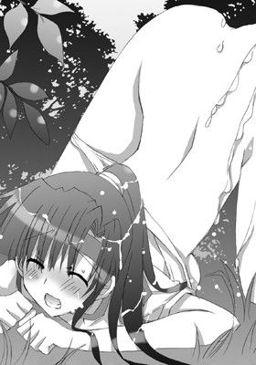
「あっ！ んぁああっ。硬いのっ、んはぁ、気持ちっいいっ！ 熱い、熱いのっ！」
子供のように喚くと、彼女は首をがむしゃらに振りたてた。
セピア色のアヌスがきゅっと締まった途端、ざらついた肉壁が吸盤のように灼熱の棒に張りついてくる。
そのまま奥で果てたいという気持ちに抗って、弘樹が腰を引いた。
ぬぷっという鈍い音がしたかと思うと、ペニスで栓をしていた分の愛液と潮とが一気に外へと溢れだす。
ぱたたっという音をたてて、甘酸っぱい飛沫が草葉に飛び散った。
「ああああっ！ 出るっ。出ちゃうっ！ ぁあっ！ あぁあああああああっ！」
会長の喘ぎ声があたりに響いて、青い空へと吸いこまれていく。
引き抜かれた肉棒が四つん這いになった会長の上で勢いよく跳ねた。
次の瞬間、亀頭から今までせきとめられていた精液が噴きだす。
シャワーのように会長の背中にヒップに降り注ぎ、髪もべたべたに汚した。
「ん、っは、はぁはぁ......。んあ、は、はぁ......。も、う、限界......」
うわごとのように言うと、葉華はがくりとそのまま地面に崩れ落ちてしまう。
綺麗な顔が土で汚れるが、その表情は満ち足りていた。
（背中が熱い。弘樹、私にいっぱいいっぱいかけたのね）
穢されたという思いは微塵もない。
一方、弘樹は、白濁に染められた会長の後ろ姿を見下ろしつつ、竿をしごいて最後の一滴まで彼女にかけてやる。
肉棒の先端に溜まったザーメンまでも、彼女のヒップにこすりつけて拭いきる。
まるで、己の行為がマーキングをしているような気になる。
会長は倒れ伏したまま、ぴくりとも動かなくなった。
「葉華？ ごめ。つい......。激しすぎたか？」
「............」
心配になった弘樹がしゃがんで彼女の顔を覗きこむ。
だが、彼女は「ンン」っと声をもらしたまま、目を開こうともしない。
「気を失っちゃったか。やりすぎた......」
彼女の背中を優しく撫でてやる。
と、そのときだった。
不意に携帯の振動音が聞こえてくる。
弘樹が周囲を見渡すと、会長の首からさげられた携帯が振動していた。
弘樹は迷う。
（出たほうがいいかもしれない。緊急の用事だとまずいし――このまま休ませてやりたいけど、起こしたほうがいいケースだってあるだろうし）
迷ったあげく、彼は彼女の携帯に出た。ディスプレイにＦというアルファベットと電話番号とが表示されている。
「もしもし――すみません。今、会長は携帯に出ることができません。代理の者です」
電話向こうの相手はなにも言ってこない。
間違い電話かと思って、弘樹は携帯を切ろうとした。
だが、携帯から耳を離したとき、低く不機嫌そうな声が聞こえてくる。
『おまえか。葉華をたぶらかしたという不届き者は』
「え？ たぶらかしたって......」
『私が今までに何人も婿候補と見合いをさせて、葉華の傍に置いたにもかかわらず、誰にもなびかず、誰にも心を許さなかったのに』
「あ、の。どなたでしょうか？」
どくんどくんといやな鼓動が弘樹の胸を不規則にノックする。
電話の相手が誰かおおかた予想はつきつつも、弘樹は尋ねた。
『葉華の父だが？ 君が西野弘樹君だろう？』
「は、はい、そうです」
『悪いことは言わない。葉華のもとから去ったほうがいい。並大抵の男では葉華の相手は務まらない』
「――善処します」
『はっはっは、政治家の常套文句をこの私に使うとは肝だけは据わっているようだ。しかし、君はなにもわかっていないだろう？ 違うか？』
「わかってないかもしれません。でも覚悟はできてます」
『ほう、近い将来、日本の未来を担う女総理になるかもしれない女を嫁にもらう覚悟ができているというのか？』
「えっ!?」
いきなりスケールの大きな話になったため、一瞬、弘樹は自分の耳を疑った。
だが、葉華の父は勝ち誇った言い方で言葉をつづける。
『驚いただろう？ 葉華と君とは棲む世界がそもそも違うということだ。身のほどを知るがいい。自分の分にあった人生を送るべきだ』
「......最初っから限界を決めたくないんで」
『はっ！ 実に青いな。まあ、いい。子供の頃なんてのは、誰だってなんでもできるって思うものだからな』
「できるなんて思っていません。ただ、やらないうちからあきらめるのは漢として間違っていると思うだけです」
『ほう、なかなか言うな。だが、口だけ達者な人間ならいくらでもいる』
弘樹がなおも葉華の父に食いさがろうとしたとき、意識を取り戻した会長が彼から携帯をひったくった。
「ちょっと。誰と話してるのっ!?」
「ごめん。急用だといけないと思ったから」
「勝手なことしないで！ もしもし......。葉華です。お電話替わりました」
会長はやや青ざめて電話に出た。
「ええ、彼は候補だときちんと説明したはず。ばあやの許可も取ってあります」
乱れた体操服を整えながら、彼女はその場に正座した。
彼女の怯えたような瞳に弘樹は違和感を覚える。
「はい、はい......。そ、それはっ!? 話が違います！ 一年待っていただけるという約束だったはずです。え？ 喧嘩を売られた？ なんです、それはっ!?」
葉華が物問いたげな目で弘樹を見る。喧嘩を売ったとか物々しい言葉に、彼はぶんぶんっと勢いよく首を左右に振った。
「......はい。では、失礼します」
しばらくして、会長は電話を切った。
がくっと首を折ったまま、深いため息をつく。
「人の苦労も知らないで。勝手なことをしないでちょうだい！」
「悪い。だが、さっぱり話が見えない」
「そりゃそうでしょう!? あなたに知られないように私はっ！」
そこまで厳しい口調で言うと、彼女ははっと我に返って口をつぐんだ。
そして、クールな仮面をつけて、彼から目をそらした。
「――いや、忘れてちょうだい。私が悪かったのよ。また隙を見せてしまったから」
「またそうやって、全部自分のなかに閉じこめて、自分だけでなんとかする。そういうのいい加減にしてくれないか？」
「っ！ 貴方に私のなにがわかるっていうの!?」
思わずそう言ってしまってから、会長はしまったという顔をして唇を噛みしめた。
「......ごめん。これじゃ八つ当たりもいいとこね。王子会長が聞いてあきれる」
「だから、それでいいんだって！ もっと真正面からぶつかってくりゃいいだろ？ なぜそうやって衝突を回避しようとするんだ」
「当たり前でしょう!? 敵は作ってはならない。衝突は避けるべき。徹底的にね。そう私は教えこまれてきたの！ 文句ある!?」
「ああ、あるさ！ これぞと思った朋友には腹を割って話すべきだろ。衝突だってしてもいい。ちょっとやそっとのことでどうにかなるくらいの仲なら、そもそもつるまなければいい」
漢塾で寮長が熱く語っていたことを思いだしながら、弘樹は無我夢中で言った。
すると、葉華は言葉を中断し、目を見開いた。
「......どう、したの？ 弘樹、貴方変わった？」
ちょっと距離をとっている間に、あの弘樹がこうもはっきりと物を言うようになったなんてと目を見張る。
「そりゃ変わるだろ。変わろうと思えば」
「変わろうとしてくれてたの。私、弘樹を傷つけてたのに......」
「別にどうってことはない。葉華の考えなんてバレバレだし。だが、それは葉華の問題だから。俺があれこれ悩んでもどうしようもないことだし」
すぐ傍にいるにもかかわらず他人行儀に振舞われ、必要以上の接触は避けられていたことに少なからず傷ついていた弘樹ではあるが、精いっぱい、漢の意地を張って、それは言わずにおく。
「悩んでもどうにもならんことはとりあえず放置。どうにかなることだけするだけだ」
「......弘樹」
彼女のまなざしに尊敬の念がこもる。
それがまんざらでもない弘樹は、
（ちょっと背伸びしてみるっつーのも悪くないな）
なんて思う。
だが――次の瞬間、すぐさまそれを後悔することとなる。
「そう。では、お父様の挑戦状を受けるということね？」
「へ？ 挑戦状？」
「婿候補として正式に決めるジャッジのこと。私は一年待ってもらうように手を尽くしていたの。ばあやを味方につけて。その一年の間に私が貴方を磨こうと思ってた」
「一年か......」
総理がどうのこうのという話を思いだして、つい弘樹は顔を曇らせてしまう。
どこまで冗談で本気かわからない突拍子もない話だが、著名な政治家を輩出してきた澤城家のことだ。
いずれ葉華を総理に――
けしてありえない話じゃない。
そんな未来を背負った嫁につりあう婿。果たして、一年くらいでどうにかなるものだろうか？
葉華を前にはったりをかましたはいいが、ついつい真剣に考えこんでしまう。
「私の見積もりでは一年でもぎりぎりのライン。超スパルタコースでね。だけど、たった今、貴方がそれを台無しにしたの。ジャッジは近日中に下される」
「っちょ！ 俺、喧嘩売ったつもりはまったくないんだが」
「お父様はとことん好戦的だから。いえ、敢えて弘樹を挑発したのかも。お父様ならやりかねないわ」
「......っぶ、敵を徹底的に作らないって教えられてきたって言ってたじゃないか」
「利害が絡む敵は作らないこと。それ以外はお父様の眼中にもないわ。敵なんか作り放題って寸法よ」
「な、なるほど......」
弘樹は淡々とそんなことを口にする葉華を改めて見る。
（いったい、どんな環境で育ってきたんだ？）
棲む世界が違う。
上位にいる者が下々の者たちを見下す言葉だが、あながちそれは嘘ではないようだ。
彼女がストイックすぎるほどストイックなわけ。
たまに見せる寂しそうな表情。
それらの理由がなんとなく垣間見えた気がする。
「本当に......私はいつもそう。最後のツメが甘いのよ。貴方を護ると言ったのに」
葉華は歯噛みすると、自分を責める。
「いや、護られなくていい。つか、普通は男が女を護るもんだし」
「でも。私......。そんなのよくわからないもの。反対ならわかるんだけど」
ためらいを浮かべた葉華の表情はひどく頼りない。
護ってやりたいと弘樹は素直に思う。
「護られるってよくわからない。でもね、初めて......なの。こんなにも護りたいって思ったのは初めて......。それなのに」
彼女の目が潤んだかと思うと、彼女は両手で顔を覆った。
葉華にはそのつもりはないのかもしれないが、それはまぎれもない告白だった。
弘樹の胸がかっと熱を帯びる。
「せっかく見つけたのに。もうなくしてしまうのね」
彼女の途方にくれた寂しげな言葉を耳にした途端、いても立ってもいられなくなった弘樹が彼女の細い身体を抱きしめた。
「あの、ね。初めて......だらけだったの。私が弱みを見せたこともなにもかもが初めてで。だから、私は。私は......」
それから先は言葉にならない。
彼女は必死に嗚咽をこらえて弘樹にすがりついた。
弘樹は彼女の背中を優しく撫でてやる。
彼女のひたむきでまっすぐな本心に触れ、どうにかしてやりたい、どうにかしてやらねばという気持ちが胸いっぱいに膨らんだ。
（ここで漢を見せなくていつ見せるっ！）
弘樹は覚悟を決める。
葉華の頭を撫でてやりながら、彼は下腹に力をこめて彼女へと言った。
「まだなくすって決まったわけじゃない！」
「......だけど、絶対に無理よ」
「絶対とか枠をつくるの。らしくないぞ？」
「あ......」
「どんなに無理と思えそうなことでもやるだけやる！ だろ？」
弘樹の言葉に顔をあげると、葉華は言葉を失って彼をじいっと見つめてくる。
弘樹は彼女の目からけして視線をそらさない。
彼女の目に浮かんだ涙を指で拭ってやる。
すると、葉華は、ようやくいつもどおりの気丈な表情を取り戻し、にっと口の端を引きあげた。
そして言った。
「違うわ。どうせやるなら勝ちに行く。勝たなければ意味がない、よ」
やはり一枚上手な彼女に弘樹は肩を竦める。
と、彼女は最高の笑顔を浮かべて言葉をつづけた。
「ありがと。貴方でよかったわ。今、本当にそう思う」
ご褒美 頑張るアナタにお尻をあげる！
家長である葉華の父がこうと決めたことが澤城家のルールとなる。
そして、あの携帯事件から三日後、弘樹へのジャッジ方法が、父親から葉華へと通達された。
「澤城家の婿に相応しい『武』を示すべし――か」
男子寮、弘樹の部屋にて。
弘樹は、達筆な文字でかかれた果たし状っぽい文を緊張の面持ちで眺めていた。
折りたたみの机を挟んで向かい側に会長がパジャマ姿で正座している。
殺風景な男部屋だったが、今や猫のぬいぐるみや小さな鏡台などなど。会長の私物が彩りを添えている。
もはや二人は毎日一緒に暮らすようになっており、本物の新婚カップル同然だった。
男子寮関係者においては公然の秘密となっている。
むしろ、日頃女生徒たちに虐げられている彼らは、全力で彼らの秘密を護ろうとしてくれている。
もしかしたら、弘樹を目の敵にしているユウヒにバレていないのも、男子寮の面々のおかげかもしれないと弘樹は思う。
「武を示せだなんて。またアバウトなジャッジ方法を示してきたわね。よっぽど弘樹を脱落させたいんでしょう。どれだけこっちが頑張っても難癖つけて妨害してきそうだわ。まあ、お父様が考えそうなこと。政治の世界って本当にドロドロなんだから」
「そうは聞くけどいまいちぴんとこないな」
「古狸が威張りまくっている古い世界。狸は狸同士でつるんでぽんぽこ合戦でもやってればいいのよ！ それなのにやたらしゃしゃり出てきて。また周囲も狸を奉るから調子にのって性質悪いったらないわ」
葉華は毒舌の熱弁を振るう。
「いくら新人が新しい風を吹きこもうとしても狸の壁は厚すぎる。身動きがとれない世界よ。正々堂々勝負すればいいのに、くだらないいやがらせをしてきたりね。子供の喧嘩かっていうの。腹立つったら」
正義感が人一倍強い葉華が、我がことのように怒る。
「さすが詳しいな」
「だって、私、物心ついたときから、選挙のお手伝いしてきたもの。叔父さまとか叔母さまも議員だし。あ、従兄弟もね。他にもわんさかいるの。血ね――」
「なるほど......」
「小学生の時にウグイス嬢デビューして、子供の愛くるしさで従兄弟を区議会議員に当選させたらしいし。あざといったらないわよね。でもま、勝てば官軍だもの。使えるものはなんだって使うべしってやつね」
「............」
葉華の過去は知れば知るほど波乱に富んだものだった。
代々政治家を出してきた由緒正しい一族だけはある。
「で、今回もお父様がそのつもりなら、こちらも全力で戦うわ」
腕組みをした彼女が胸を張って宣言する。
「って、待て待て。俺が戦うんであって葉華が戦うわけじゃないだろう？」
弘樹が言うと、彼女はちっちっちっと人差し指を振ってみせる。
「確かに、弘樹一人じゃ難しいかもしれない。だけど、よく考えたら、この私がついているんだもの。けして勝てないってわけじゃない。絶対に認めさせるわ。パーフェクトな王子会長の名にかけて」
めらめらと闘志を燃やす葉華の目は強く輝いている。困難が目の前に立ちはだかれば立ちはだかるほど燃えるタイプな彼女らしい。
「会長がセコンドってわけか。なるほどそれは頼もしい」
「うんうん。私の本気をお父様に見せてさしあげましょ」
「そういうとこは確かに政治家向きだよなあ......」
「売られた喧嘩はきっちりかわないとね。それがたとえ身内であっても」
にっこりとさわやかに微笑む唇から出てきている言葉とはとても思えない。
会長を怒らせると怖い。
嫁、怒らせるべからずという訓戒が弘樹の座右の銘に加わった。
「とりあえず武を示せ。ジャッジの判定結果が出るのがちょうど体育祭の日。ということはここで結果を示せということね」
「結果っていっても、体育祭は個人競技じゃないだろ？」
「でも、うちの学園には『ベスト・プレーヤー賞』というのがあるわ。色別対抗とはべつにね。ほら、私、小中学生の頃からずっとそれに選ばれてたし」
「なるほど。そういやそんなものあったな。どういう基準で選ばれてたか知らなかったけど......」
「あれは、実は個人にも得点をつけてるのよ。種目の難易度も考慮に入れつつ、それぞれの種目の順位に得点が割り振られていて。その合計点のトップが表彰されるというわけ。確か、データによれば、借り物競争の得点が大きかったはず」
「なんだかややこしいんだなあ」
「そうよややこしいの。だって、これって校長の趣味みたいなものだし。生徒会にもその詳細は知らされてないの。どの種目にどの条件で何点入るかも知らされていない。すべてを知るのは校長先生のみ」
「ほうほう。ってことは、参加種目は多く出たほうが有利というわけか」
「そう。とりあえず、弘樹が参加する種目で全部一位取ればいいってこと。私はそうやってずっと賞を維持してきたの」
「......な、なるほど」
さも簡単そうに言う嫁に弘樹はおののく。
「これは当日までの鍛錬がものを言うわ。ごまかしがきかないもの。さらにいえば、妨害もしやすい......」
「妨害......か」
最後の最後まで気が抜けそうにない。
弘樹は緊張の面持ちで呟いた。
「でも、それまでのフォローはしっかりするから......」
葉華が申しわけなさそうに弘樹を見てくる。
こんなふうに頼まれたら、がぜん一肌脱ごうという気になるのが漢というもの――
だから、彼は彼女に力強くうなずいてみせた。
はったりも大事と内心自分に言い聞かせて。
「まあ、やるしかないのならやるだけやるさ！」
そう言うや否や、彼女の顔がぱあっと明るくなる。
「弘樹ならそう言ってくれると思ってたわ。ありがとう」
「乗りかかった船だしな」
「あは、難破しないようにしないとね！」
「縁起でもない」
「そうね、ごめん。運もしっかり味方につけなくちゃ」
葉華の真面目な表情に弘樹の気分も引き締まる。
元々、ソロじゃ無理なことを可能にしなくてはならないのだ。
婿候補としてはずされれば、今までこうして築きあげてきた不器用ながらも密な関係がすべて崩れ去ってしまう。
本人たちの意志とは裏腹に。
「ちなみに、参考までに聞いてもいいか？」
「ん？ どうぞ？」
「葉華の父さんが今までに送りこんできた見合い相手？ 傍に置いてたとか言ってたが、そのスペックを教えてほしい」
「あまり興味なかったからいちいち覚えてなかったけど。確か、そうね......」
葉華は、顎に人差し指を当てて、んーっと考えはじめた。
「小学生高学年の頃は、まだ政治家秘書とかだったのよね。中学生の頃はどうだったかな？ 東大卒、慶応大生、海外留学十年選手に。えっと、学生だけど会社興して、年商数億円とかそんな感じ？ あ、お医者様も弁護士の先生もいたかしら？」
「............」
聞かなきゃよかった。弘樹は全力で後悔する。
（ってか、小学生の頃から婚約者を決めるってどんだけ......。しかも、年の差とかロリとか。そういった細かいもろもろはどうでもいいのか!?）
「でも、そんな肩書き、ぽいよ！ ぽいっ！ 大事なのはここ――だから」
肩を落としてしょげる弘樹の胸を会長が人差し指でつついてくると、にこっと恥ずかしそうに笑った。
その笑顔が弘樹の胸にクリティカルヒットする。
（漢は惚れた女のためになら死ねる、か。くっさい台詞だしありえねーって思ってたが、ありかもしれないな）
先日の漢塾で熱く語られた寮長の恋愛観を思いだすと、ぐっと拳を握りしめる。
「毎日、ずっと傍について特訓のお手伝いもするからね。お父様の機嫌をとるために、あれこれ用事を快く引き受けてきたけど、喧嘩を売ってきたのはあっちだもの。もうすべての用事をキャンセルして弘樹の婿トレにのみ全力を注ぐんだから」
「その前に――」
彼が葉華の唇に親指でそっと触れる。
一瞬、ぴくんっと甘やかな反応を見せた会長だが、眦をきっと吊りあげて、首を横に振って見せた。
「だーめ！ それはあとで。ご褒美にってことで」
「でも、腹減ったしな。葉華が食べたい」
「今はこれ食べて我慢して！ 空腹が収まったら少し走りにいきましょ？ ご褒美はそのあとよ！ でないと特訓どころじゃなくなるんだから......。主に私が......」
気恥ずかしそうにまくしたてると、会長が後ろ手に隠していた皿を机の上に載せた。
「婿様、お夜食にどうぞ」
そこには炊きこみご飯のおにぎりが三つ並んでいる。どれもいびつな形をしているし、思いっきり力強く握ったぽくて、ご飯粒がつぶれてしまっている。
それでも、懸命に作ってくれた会長の姿を想像して弘樹は相好を崩した。
「おおおおお。サンキュー」
「なかなか綺麗な形に握れないのよねえ......難しいわ。ばあやはきちんと三角形に、しかも同じ大きさで握れるんだけど......。あ、でもね！ ちゃんと今回はごぼうを水にさらしておいてから入れたんだからね？」
会長がえへんと胸を張る。たわわな果実がその反動で揺れ、思わず弘樹はわしづかみにしたい衝動に駆られる。
が、今はお預け状態なため、暴走しそうな本能を必死で制御しにかかる。
ちなみに、前に彼女がつくった炊きこみご飯は、めちゃくちゃ苦かった。
敗因はごぼうを水にさらすことなく、ささがきをしたそのままをぶちこんだこと。
「うむ、葉華は偉いな！」
「でしょー？ 尽くしちゃうんだからねー？ だって婿様にはおいしいものを食べて頑張ってもらわないと」
「んだな、おいしいものを食べないと」
そう言うと弘樹は会長の手をかじる真似をしてぺろりと舐める。
「あっ、も、もうっ！ 駄目。お預けって言ったでしょう？」
一瞬、初々しい反応を見せた葉華だが、口を尖らせて彼から自分の手を奪いかえす。
ひたすら甘い。甘すぎる......。
こんな駄々甘な会話をまさか会長とする日が来ようとは。
弘樹は感無量だった。
いまだに他の生徒たちの前ではきりりとした表情で王子会長たらんと振舞っている彼女だが、二人きりのときは始終こんなふうに嫁っぽく尽くしてくれるようになるなんて。
この甘い毎日を護らねばと改めて気合いが入る。
彼らを応援してくれている男子寮のみんなのためにも。
「さ、気をとりなおして！ お夜食食べたら走りにいくんだから！」
体育祭用のはちまきを頭にきゅっと締めると、葉華はえいおーと右拳を突きあげる。
「んむ。早く終わらせて褒美をもらわんとなー」
彼の言葉にぽっと頬を染めると、葉華はうつむいてぽつりと呟いた。
「んもぅ。婿様、毎日激しすぎるんだから。バカ......」
弘樹は表面は平静を装ってはいるが、内心は最近の会長の一挙手一投足にのたうちまくっていた。
☆
父親と真っ向から対立するようになった葉華は、弘樹に言ったとおり、片時とも彼の傍を離れず、優秀な鬼トレーナーと化していた。
父親の顔を立てるためのだったらしい会食も情け容赦なくオールキャンセル。
彼女は会長としての仕事と弘樹の嫁としての仕事に専念している。
「――運動力学も大事だしメンタル面のトレーニングも大事。スポーツトレーナーって奥が深いのね。なかなかおもしろいわ。いろいろなことに応用もききそう」
何事をやるにも全力の会長が、分厚い本を読みながら、手作りのスポーツドリンクを弘樹へと差しだした。
弘樹はそれを受け取って、腰に手を当てて飲み干すと、その場に大の字になって寝転がる。
秋風が汗みずくの体に心地よい。
彼らの心を映す鏡のように秋晴れの空が一面にひろがっていた。
葉華も全力だったし、弘樹も彼女の指導に従ってただがむしゃらにやってきた。
体育祭すべての競技のコツをつかんだし、トレーニングもばっちり。万全は尽くした。
（これで駄目ならくそくらえ、だ）
弘樹は、青空を眺めながら、心のなかでそう呟く。
「それにしても。本当によくぞここまで仕上げたわね」
本から顔をあげると、会長が柔らかく彼に微笑みかける。
汗で濡れた彼の額をタオルで優しく押さえながら。
二人は裏山のいつもの木の下で和んでいた。
弘樹は柔らかな草の上にあお向けに寝そべり、その横に会長が体育座りをしている。
「いやいや、鬼トレーナーのおかげだし」
「あーら、嫁を鬼呼ばわりって。どういうつもり？ 弘樹は私に鬼嫁になってほしいっていうの？」
「っぶ、そんなつもりじゃ......」
「今日は本当によく頑張ったから明日のげん担ぎの意味もこめてトンカツでもつくろうと思ってたけど、タワシコロッケのほうがいい？」
にこにこと笑顔のまま、葉華は恐ろしいことを言う。
「......ごめん」
「よろしい」
こんなやりとりが心地いい。
二人は気恥ずかしそうに笑い合う。
「これだけ頑張ったんだもの。明日は絶対に大丈夫」
「はは、だといいなあ」
今日は体育祭前日――ついさっきまで予行練習が行われていた。
弘樹はそのすべての種目においてからくも一位を収めることができたのだった。
弘樹も葉華もついさっきの出来事を振りかえる。
☆
「弘樹。やったわね。ベスト・プレーヤー賞（仮）！ おめでとうっ！」
葉華が弘樹の手をぎゅっと握りしめた。
弘樹もにっと笑ってその手を握りかえす。
予行練習なので（仮）がついているが、彼は見事にベスト・プレーヤー賞に選ばれたのだった。
葉華たちの周囲を取り巻く少女たちは、ひそひそ話をしながら、しきりに理解不能とばかりに首を振っている。
「そんなの......ありえませんわ。こんのド凡人がベスト・プレーヤー賞（仮）に選ばれるだなんて。なにかの間違いですわっ！」
副会長が憤怒の表情で弘樹を睨みつけていた。
ベスト・プレーヤー賞（仮）に弘樹が選ばれたことに納得がいかない様子だ。
おそらく、彼女もまたベスト・プレーヤー賞（仮）を狙っていたのだろう。
「貴方！ どんな手を使ってこんな真似を!? 貴方みたいなトロい人間がいきなりオール一位なんてありえませんわっ！」
ユウヒが弘樹にくってかかる。
と、弘樹はフッとアンニュイな笑みを浮かべてぼそりと答えた。
「......愛？」
「な！ からかうのもいい加減にしてちょうだい！ 貴方みたいな低スペックのダメンズがベスト・プレーヤー賞（仮）だなんて！ どうせなにか汚い手を使ったに違いないわ！ ドーピングとかしてるんじゃ......」
「――副会長。彼へのそれ以上の愚弄はこの私が許さないわ」
副会長のいつものかんしゃくだと最初は聞き流していた葉華だったが、ユウヒの言葉を途中でさえぎった。
会長の鋭い口調に、その場がしんと静まりかえった。
副会長と同意見の女生徒たちが大半だったようだ。
葉華の射貫くような視線に気圧されそうになるユウヒだったが、ぐっとそれをたえて彼女に食いさがる。
「会長!? でも、だって......。おかしすぎますもの！」
「なにもおかしいことはないわ。彼がどれだけ頑張ったか、貴女はなにも知らないのにおかしいというの？」
「え？」
「単に徹底的に私がトレーニングしただけよ。ベスト・プレーヤー賞をずっととってきたこの私が味方についているのだから、貴女にとっては確かに不公平なのかもしれない。でもね。私の鬼特訓に毎日毎日、愚直についてきた彼の努力は汚い手なのかしら？」
「......そ、んな。葉華様の鬼の特訓にこのダメンズが耐えるなんて。ありえませんわ」
「でも、彼は成し遂げたの。それで勝ち得た栄光よ？ 胸を張っていいんじゃない？」
「っく、男なんかに......。負けるなんて」
ユウヒは唇を噛みしめると、首をうなだれてうつむいた。
小さな拳がぶるぶると震える。
「負けは負け。悔しいなら正々堂々、明日の本番で勝負すればいいでしょう？」
会長の言葉に、副会長は黙りこくってしまう。
しかし、しばらくして、彼女は押し殺した声で言った。
「ええ、確かにそうですわね」
自分の非を認めた副会長に周囲がどよめく。
次の瞬間、彼女はくっと形のよい顎をあげた。
「本番では絶対に負けませんわよっ！ どんな手段を使っても！ わたくしが正々堂々勝ってみせるのだから！」
ない胸を偉そうに張ると、びしぃっとユウヒが弘樹を指差して宣言した。
微妙に矛盾していることを言っているように聞こえなくもないが、弘樹はにっと口もとに笑みを浮かべると、彼女の言葉に毅然と応じる。
「望むところだっ！」
そう言いきった途端、今まで黙って様子を見守っていた男子陣のテンションが一気にもりあがる。
「うおおおおおおおおおおおおおおおおおっ！ 兄弟っ！ 共学になって以来、男子初の快挙！ 兄弟は俺らの誇りだぜぇええええええええええええ！」
「いや、みんながサポートしてくれたからってのもあるし。ありがとな」
「ベスト・プレーヤー賞（仮）なんてすげーっ！ まじ感動した！」
漢塾の連中たちが、弘樹をわっと取り囲むと、肩を組んだり、背中を叩いて彼の労をねぎらう。
一昔前の熱血ドラマを地で行く彼らに女生徒たちの大半は呆気にとられている。
だが、一部の女子は、彼らをまぶしそうに眺めていることに葉華は気づく。
（新しい風が吹くのかもしれない――）
男子たちにもみくちゃにされている弘樹を見て、やはり誇らしげに笑みくずれる。
そんな彼女を副会長が複雑な表情で見つめていた。
☆
「あのときの副会長の悔しそうな顔ったら......。本人の前では言えないけど、とってもキュートだったわ」
葉華がくっくっと笑いをこらえる。
「ははは。副会長もムキになるからなー。慣れてくるとかわいく見えてくるよな」
「ええ、かわいくもあり憎らしくもあり、ってとこかしらね。基本、あの子は悪い子ではないもの。とても頑張り屋だし。結構真面目なのよ。自分のことしか考えていないように見えて意外に相手のことを考えていたりもするし」
「へえ、そうなんだ」
副会長のこともよく見ているんだなあと弘樹は改めて感心する。
「だって、あの子が本気を出せば、とっくの昔に私が男子寮に通っていること、ばらされていたに違いないわ」
「それは俺も思ったけど......」
「あの子はあの子なりの考えがあるのでしょうね」
「ちょっと会長に似ているのかもな」
弘樹が言うと、彼女は彼を甘く睨みつけた。
「あら？ 私はあんなに子供っぽくないわよ。いやもう、本当の本当に」
冗談で言っているのだろうかと思う弘樹だが、どうやら会長は本気で憤慨しているようだ。
「いやいや、二人きりのときは結構似たようなもの......」
「ん？ なにか言った？」
葉華が拳を振りあげて、怖い笑みを浮かべた。
そのため、弘樹はあわててその場に起きあがった。
「おお、そ、そろそろ休憩時間も終わりだな。生徒会室に戻って明日の準備の仕上げをしないとな」
「あら、それはそれは感心な婿様だこと」
そう言うと、葉華も立ちあがって、ぽんぽんっとブルマについた土を払った。
☆
葉華たちが生徒会室へと戻ると、夕焼け色に染まった室内では、副会長が音頭をとって明日の体育祭準備の最後の詰めが行われていた。
「会長、おかえりなさいませ。プログラムの最終チェックはわたくしが行っておきました」
「副会長。ご苦労様。いつもありがとう。助かります」
「――いえ、これしきのこと。たいしたことではありませんわ」
今日、弘樹のことで派手に衝突したせいか、ユウヒはとても気まずそうに会長から目をそらした。
「では、つづきは私がやります」
「はい、お任せします」
副会長や一年が全員帰るまではいつもと同じ調子で、なるべくクールに王子会長らしく振る舞っている葉華。
きりりとした表情でてきぱきと仕事をこなしていく。
弘樹の前で見せていたような子供っぽい様子は微塵たりとて見せない。
「では、今日は所用があるので、お先に失礼しますわ」
「そろそろわたくしも門限が」
「そう。ごきげんよう。明日は早くから準備があるけど、どうぞよろしくね」
「はい、わかりました。今日早めに帰らせていただく代わりに、明日は一足早く登校して最後の確認をやっておきます」
「頼りにしています」
「では、ごきげんよう」
副会長と一年や二年の生徒会役員たちが、少し早めに生徒会室から退室していく。
廊下から足音が去っていき、やがて完全に聞こえなくなったのを確認してから、葉華がちらりと弘樹を見た。
弘樹はソファに腰をおろしてぼーっとしている。
と、彼女が、いきなり弘樹のもとへとダイブしてきた。
「弘樹！ 改めて！ 本当の本当におめでとうっ！ さっきあまり休めなくてきちんと言えなかったから！」
「っぐふ。ども......」
みぞおちになにげに会長のエルボーが決まるが、彼は必死の形相でなんとかこらえきる。
「しっかし、本当によく頑張ったわねーっ！」
葉華がそう言い放つと、弘樹の頭を抱きしめて、わしわしと乱暴に撫でてくる。
動物をかいぐりなでまわすムツゴロ○のごとく。
刹那、ふんわりとした胸が彼の顔へと無遠慮に押しつけられた。
「っぶ。苦しい、って......。や、おっぱいで溺れ死ぬなら本望だが――」
「あら？ あう、ご、ごめんなさい」
白い柔らかな肉に顔を挟まれて苦しそうな弘樹に気づいた葉華が、あわてて彼の顔を離した。弘樹はぜーはーっと肩で息をしながらも、その表情は至福に輝いている。
「それにしたって、俺がベスト・プレーヤー賞（仮）かあ。マジで信じられないなあ。つか、いまだに奇跡としか思えんし」
「だから、言ったでしょう？ できるって！ 私がついてるのだもの。それに貴方、しぶとさだけは誰にも負けないみたいだし」
さも当然のことのようにさらりと言う会長だが、さっきからずっとふとした折に顔が緩んでしまい、にやにやがとまらないようだ。
まるで自分のこと、いやそれ以上に彼女が喜んでいるのは一目瞭然だった。
「人間、追いつめられればやれるもんなんだな」
弘樹の表情には、やり終えたという満足感と自信がうかがえる。
そして、それを見守る葉華の表情も晴れやかだ。
「じゃ、その勢いで明日の本番も頑張りましょ」
「おうっ！」
「追い風が吹いてる。絶対に頑張れるから」
「んだな！ つか、頑張るしかない」
二人はそう言うと、互いに笑ってうなずき合う。
明日のために、やれることは全部やってきた。
これで駄目なら仕方ないと思えるくらいに。
いよいよ、明日で二人の将来が決まる。
うまくいかなかったらどうしよう、とかそんな気持ちはすでに綺麗さっぱり吹き飛んでいた。
と、突然、会長が彼の胸に頭を完全に預けたかと思うと、とても小さな声で、照れ隠しのためだろうか？ 少しぶっきらぼうに呟いた。
「......その、今日の弘樹はね。弘樹のくせに結構かっこよかったわ」
弘樹のくせにという小憎たらしい言葉は彼女の照れ隠しと弘樹にはわかる。
どくんと心臓が高鳴り、彼の胸に頭を預けている葉華にもそれがわかる。
彼女は幸せそうに目を細めた。
「そ、そっか？ ってか、会長のほうがよっぽどかっこよかっただろ......」
「え？ なにが？」
「もはやかっこつけるのがデフォルトってか。ほら、副会長に啖呵切ったときのアレ」
「だって、あれはちょっとムカっとしちゃったから......。だって、弘樹が死ぬほど頑張ってたって。全然知らないのにあんなこと言うのだもの。知りもしないくせに知ったふうに言われるのっていやなの」
「副会長だって悪気があるわけじゃないだろ？ いつもあんな感じだし。いちいち気にすることはない」
「それはわかってるわ。私のことを言われたのなら平気だったと思うし我慢してたと思うの......。でも、あの場合だけはどうしても言わずにはいられなかったの」
会長の思いの丈がこんな会話の端々からも伝わってくる。
弘樹は、照れくさそうにはにかんだ。
「そっか。ありがとう」
「ううん、それはこっちの台詞。ありがとう......」
お互いなんか神妙になって頭をさげ合う。
「別に。したいからやってるわけで」
そう弘樹が言うと、会長はにっと笑ってからかうように言った。
「じゃ、ご褒美はいらないかな？」
「いるに決まってる」
即答した弘樹が目を光らせて彼女の身体をじっと見つめる。
そのまなざしが葉華の胸をざわつかせる。
「あは、もう......。だけど、ほどほどにしとかないと駄目よ？」
気恥ずかしさをごまかすために、葉華は少し茶化して言った。
「なんで？」
「バカっ！ だって、その......。あんまり激しいと明日に支障が出ちゃうでしょ」
「ああ......。筋肉痛......げふっ」
「バカバカっ！ またそういう生々しいことをっ！ 言わないっ！」
会長の拳が容赦なく弘樹のみぞおちにぼぐっと叩きこまれた。
この癖だけはやはりいまだ健在だ。
が、次の瞬間、会長ははっと我に返り、気まずそうに眉をさげる。
「って、あああ、ご、ごめんなさい。うう、また婿様に手をあげてしまったわ。つい。なんでかしら。恥ずかしいって思うと、次の瞬間すでに攻撃しちゃってるの」
「――好戦的だよなあ。ＤＶ禁止だ。嫁はしとやかに！」
「むうっ、だって婿様がそういうことを言う......から。ん、んんんっ!?」
弘樹が彼女の言葉をさえぎるように顔を寄せてきた。
柔らかな唇同士が触れ合ったかと思うと、二人は情熱的に舌を絡め合う。
「ン、っふ......。んん、はぁはぁ。んぅ......」
会長の甘い声と舌と舌とが求め合う湿った音とが混ざり合い、二人きりの生徒会室へと染みこんでいく。
（ああっ、キスだけなのに......。どうして!?）
こうして互いの舌と唾液とを絡み合わせているだけで、秘芯が熱を帯びて、ひくつきはじめてしまう。
葉華は力いっぱい太腿を閉じて、奥からこんこんと溢れてくる蜜をなんとか押しとどめようとする。
だが、Ｙ字の結び目にじわりと溢れてきてしまう。
ぶるっと武者震いすると、彼女は彼から唇を離した。
「葉華？」
「ん、ううん、ご、ごめんなさい......。ちょっとどうしようかなって......」
「なにが？」
すでに獣モードのスイッチが完全に入ってしまった弘樹が、彼女のＧカップを制服の上から撫でまわしながら耳もとで尋ねてくる。
彼の荒ぶる吐息を耳とうなじに感じて、またも彼女はぴくっと肩を跳ねあげた。
「あ、も、もう......。体質改善どころか......。悪化している、よう、な......気がしてならないんだもの」
「かもしれないな。というか、よく考えれば、鍛えるというよりも開発してる？」
「あうっ、こ、こんなはずじゃ。んくっ、なかったのに......。あぁあぁああっ！ だ、駄目。んんんっ」
制服越しにすでに硬くなった乳首に軽く触れられた途端、葉華はとっさに胸を押さえて彼から身体を離した。
ぴりりとした快感と同時にショーツが湿った感覚に身震いする。
はぁはぁっと息を乱しながら、ソファにうずくまってしまう。
「もしかして今のだけで？」
「う、そ、そんなはずは――」
そう答えるものの、彼女の語調は弱い。
渇いた唇を舌で湿らせながら弘樹が尋ねた。
「確かめていい？」
「い、いやぁ......」
「褒美をくれるって言ったよね？ 俺の言うとおりにして。会長は自分の言ったことに責任を持つんだろう？」
「あ、うう。そ、それは。そうだけど......」
「なら、俺の言うことを聞くんだ」
強めの彼の口調が葉華の潜在的なＭっ気に火を灯した。
「は、い......」
彼女は上ずりきった声で応える。
「じゃ、そこの机に手をついて」
「ええ......」
彼女は彼に求められるまま、机に両手をついた。
弘樹がソファから立ちあがると、後ろに突きだされたヒップをスカートの上から円を描くように撫でてくる。
「あ、あ、あぁっ」
葉華は頬を染めて腰を引く。
本人は弘樹から逃げるつもりなのだろうが、逆に形のいいヒップが突きだされた格好となる。
細い腰からお尻にかけての曲線美に見入られながら、弘樹はスカートを捲りあげた。
外見の華奢さに反して、むっちりとしたヒップを包んだスパッツがあらわになる。
「ひっ、あ、あぁっ。や、やだっ。だ、駄目っ。駄目よっ」
会長が声をつまらせて腰を引こうとするが、彼の手ががっちりと彼女の腰をつかんでいるためにそれはかなわない。
彼は光沢を放つスパッツの上から丸みを確かめるようにヒップを優しいタッチで撫でまわしていく。
微弱な刺激が葉華の胸を甘く攻め立ててくる。
やがて、弘樹は彼女のスパッツのみを剥いた。
下から水蜜桃のような美尻を包みこんだショーツが現れる。
薄ピンク色の縞々ショーツは、ヒップの丸みをことさらに強調していた。
ヒップの下の膨らみの盛りあがった箇所もへこんだ箇所もはっきりとわかる。
「い、やあ。み、見ない、でっ」
弘樹の視線を恥ずかしい部分に感じ、会長はぞくぞくっと首をすくめる。
超絶な敏感体質なため、見られているだけで感じてしまうようだ。
最近、毎日一緒に過ごしているせいで、体を重ねる回数も増えている。
見られているだけなのに、ショーツの染みが面積を増す。
「いい匂いがする」
弘樹はショーツ越しに顔を近づけて鼻を鳴らす。
やや酸味があるミルクっぽい香りがそこから漂っていた。
「いやいやいやっ！ は、恥ずかしいって、言ってるでしょっ！ バカバカっ」
悶え恥ずかしがりながらも、いつもの気丈な口調はまだ変わらない。
だが、こんな状態でそんなことを言われれば、そんな口利けないくらいにめちゃくちゃにしたくなるのが男の性だ。
卵の殻でも剥くように、弘樹は彼女のショーツを引きさげた。
「やぁああぁあああっ！」
鋭い悲鳴じみた啼き声が彼女の喉奥から放たれる。
羞恥のあまり、会長は身体を震わせてぎゅっと力いっぱい目を閉じた。
（いやいやっ！ こんなの！ 恥ずかしすぎるわっ。屈辱だわっ！ まだ誰か来るかもしれないのに。生徒会室でこんなとこを全部見られちゃうなんてっ）
ひどく恥ずかしいことを無理やりされているという怒りがこみあげてくるのに、花弁はかってにひくついて奥から蜜を滲ませる。
びくつく割れ目から、透明な雫がつつーっと伝わり落ちていった。
「会長、今のめっちゃやらしいし」
「な、なにがよっ！ べ、別にいやらしいことなんてなんにもっ！」
ツンっと顔をそむけながら会長は言う。
だが、その言葉とは裏腹に、うねる秘所からさらに粘度のある蜜がこんこんと溢れでてくる。
「ほら、また。自分でもわかってるくせに。いっぱい出てきてる」
「そ、そ、そんなことはっ！ ひっ！ ぁああっ！」
くちゅりという水音と同時に、あまりにも滑らかな感触が敏感な粘膜に触れた。
会長はびびくっと反応すると、目を見開いて天井をあおぐ。
「い、あ、ぁああっ。んっ、ンンンっ！ さ、最低......。そ、そんなトコっ。舐めるなんて。お、おかしいんじゃっ。ないのっ！ ンンンっ！」
四肢を震わせながら、彼女は唇を噛みしめる。
弘樹が震えるヴァギナにキスをしていた。
舌を差しこんで、それをくにくにと動かし、わざといやらしい音をたててやる。
「音っ。や、やめなさいっ！ 命令よっ！ やめなさいって、ばっ。あ、あぁあっ」
「でも......。ちゅ、ちゅる......。気持ちよさそうだけど？」
「そんなことっ！ 全然ないってばっ！ あくっ。ひ、あぁあああっ。や、やめなさい。そ、そんなとこまでっ!? へ、変態っ。バカっ！ 死になさいっ。ひぁああんっ！」
舌を上に這わせると、弘樹はヒップの谷間を舌先でくすぐってやる。
（う、うそっ。そんなとこまで舐めちゃうのっ！ あ、ありえないわっ）
思ってもみなかった攻めに、葉華は半ばパニック状態に陥ってしまう。
菊座を滑らかな舌が這いまわる感触は未知のものだった。
「いっ！ やぁあああっ！ やめなさい！ やめなさいってば！ い、いいっ、ン！ ああああ、いやぁあああああっ！」
甲高い声が会長の唇から放たれると同時に、子宮から頭のてっぺんに向かって電流にも似た悦楽が走り抜ける。
葉華はつっぱっていた手足から力を抜くと、会長席の上にうつぶせになる。
はぁはぁっと荒い息を繰りかえしながら、せつなげに目を閉じる。
「やっぱり感じやすいよな」
「う、ううう......。そ、そんなことは断じて......」
「でも、まさかお尻の穴まで敏感とは思ってもなかったというか」
「う、うるさいっ！ そ、そんなとこ舐めるなんてっ。変態なんだからっ」
うつぶせになったまま、葉華が首を後ろにめぐらせてうらめしそうに弘樹を睨みつけてくる。
普段の彼女であれば、他の生徒たちを圧倒する眼力なのに、こんな恥ずかしい格好で言ってもまるで説得力にかける。
それどころか、余計に劣情をそそる。
「ここ、してみようか？ 褒美に相応しくない？ 初めてのとこ」
弘樹がどぎまぎしつつそう言うと、彼女の尻穴を指で触れた。
と、ぴくんっとかわいいお尻を反応させた会長が顔を真っ赤にして首を振る。
「え、えええっ！ そ、んなっ。ち、違うでしょ、そこは！ ド変態！ バカっ！」
「変態かもなあ......。でもこれだけ気持ちよさそうだから。したくなる」
「っちょっと！ ま、待ちなさいっ！ 待ちなさいってば！ ンぅうううっ」
弘樹はうつぶせの会長の腰をつかんでヒップを持ちあげた。そのままボクサーパンツをズボンもろとも脱ぎ捨て、漲った半身を秘穴に添える。
つるりとした感触と熱とを感じて、葉華は身震いした。
獰猛な獣から逃れようと、腰を懸命に引くが、かえっていやらしくくねっているということに本人は気づいていない。
「ひあっ。あ、や、やめっ。やめなさいっ。そ、そこっ。違う、ものっ」
「違わないよ。こっちも敏感なんだから。いいと思うし」
「い、いやっいやいやいやあぁああっ！ っく、あぁはぁあああああっ！」
大きく口を開くと、会長の艶めいた嬌声が響いた。
「っつ、はぁっ、はっ、はぁあっ。ん、っく......。ふっ、はぁはぁっ」
鋭い痛みが葉華の呼吸を妨げる。
彼女は声をつまらせながら、大きな目を見開いて唇をわななかせる。
シルクのような光沢を放つ長い髪が細い背中を躍る。
「っく、き、きつすぎっ。う、っく......」
「ば、馬鹿ぁっ。だ、だから、そ、そこっ。ち、違うって。ンくっ。言って、るのにぃいいいっ」
熱された肉棒が狭い尻穴を極限にひろげきっている。
当然のことながら、初めての侵入者を腸壁がきつく締めつける。
「ひくっ。う、うあっ。あ、あぁああっ」
会長が形のよい眉を顰めて、激痛のあまり身体を硬直させている。
（な、なんなのっ。これっ。無茶苦茶っ。あ、熱すぎっ）
無理に割り開かれた痛みが熱となり、肉棒そのものの熱も合わさって、アヌスは燃えているかのよう。
痛くて痛くて抜いてほしいはずなのに――
痛みにわずかに愉悦が混じり、腰を力ずくで引ききることができない。
弘樹は震える彼女のヒップを優しく撫でた。
「大丈夫？」
本当はもう無理という言葉が喉もとまで出かかっていた。
だが、その言葉を呑みこんで、彼女は震える声で答えた。
「う、くっ。別にっ。へ、平気......だもの」
どこからどう見たって平気じゃないのに。
負けず嫌いな性分からか、気丈なことを言い張る。
「そっかあ。じゃあ、動かしても大丈夫かな？」
弘樹が腰を前後に軽く動かしながら、たわわなヒップを両手でつかんで揉みしだいた。
「あ、はぁっ。あ、ああっ、へ、変態っ。そ、んな、とこぉっ。ンンンっ」
「変態かあ。そうかもな？」
白いヒップに無骨な指が沈みこみ、こねまわされる様子を見ながら弘樹が言った。
ヒップを揉みこめば揉みこむほど、アヌスが半身をぎゅうっと締めつける。
ふと思い立って、弘樹は彼女のヒップを軽く叩いてみた。
「ひぅっ！」
びくりっと鋭い反応を見せると、菊座がさらに屹立を絞った。
「や、やあっ。あくっ。やめ、な、さい......。いったい、なにをっ」
普通は挿れないほうの穴に肉棒を穿たれ、ヒップを叩かれただけでまるでもっとほしいといわんばかりの反応をみせる自分のアヌス。
会長はきっと後ろを睨みつけて、弘樹を制そうとする。
「すごい。葉華は本当にＭだなあ。叩くだけでこんなに反応するなんて」
再び、弘樹の手のひらが彼女のヒップを打った。
「っ！ あぁあああっ。やぁああっ。そんな！ こんなの、嘘よ嘘っ」
後ろの穴だけでなく、前の割れ目までが蠢いてしまう。
（こ、こんないやらしい反応しちゃうなんてっ。わ、私の身体、ど、どうなってるの）
葉華は、恥ずかしくて恥ずかしくて消えてしまいたくなる。
「だいぶよくなってきたかな。動かすよ？」
ピンク色に色づいた尻を円を描くように撫でてから、弘樹がいよいよ腰を本格的に動かしはじめた。
「ま、待って！ 待ちなさいっ。や、あ、あぁっ。んはぁあああっ。やぁあああっ！」
制止の言葉は半ばで喘ぎ声に変わる。
それがいやらしくて、弘樹は無我夢中で腰を振りたてた。
「ひあっ。やっ、あぁあっ！ い、痛っ。ンくっ。ん、はぁあああ、あぁ、やぁあ！」
ずぷっずずっという鈍い音と同時にペニスがアヌスを強く穿つ。
根元まで埋めこんでは先端が抜けてしまうぎりぎりまで腰を引き、体重をかけて尻穴を征服していく。
時折、思いだしたようにヒップを手のひらで叩く。
と、そのたびに葉華は泣き声にも似た声をあげ、背筋を弓なりに反らす。
「いやあっ。あ、あくっ。やあああ。も、やぁああっ。やめ、やめてぇえっ。ひう」
なかが痒くて痛くてたまらない。
だけど、それなのに時折ふわっと腰が浮きあがるような不思議な感覚が葉華を苛む。
玉のような汗をびっしり額やこめかみに浮かびあがらせ、会長は全身をくねらせる。
粘膜同士が触れ合うくぐもった音に葉華の狂おしい声が混じり、時折ぱしんっとヒップを叩く音が部屋に響く。
「あっ、はっ、はぁ......。んあっ。や、だ、だめぇえええっ。いやああ......。もう、許して。お願い、お願いぃいいいっ」
誰にも頭をさげたりはしないプライドが高い彼女が、必死の形相で許しを乞う。
しかも、やめてほしいと言っているのに、敏感な身体はいやらしい動きでオスを誘う。
（いやあ、こんなの。やめてほしいって本当に思っているのに。身体はエッチに反応しちゃうなんて。いやらしすぎよ）
腰を引こうとは思うのに、菊座はきゅうきゅうっと侵入者を引き絞ってしまう。
ヒップを叩かれるたび、妖しい気持ちがスパークし、クレヴァスからは潮がぴゅっと飛びだしてしまう。
「あ、あああっ。やっ！ こんなのっ！ こんな私っ！ 大嫌い、最低っ！ ンっ！ んあぁはぁあああんっ」
何度も何度も激しくイキつづけてしまう自分の身体に嫌気が差す。
もう無理だと思うのに、縦横無尽に貫きつづけるペニスによってめくるめく快感は更新されつづける。
「ひっ、あっ。こ、壊れちゃうっ。もう、駄目ぇええっ。壊れっ。ンンンっ！」
「はぁはぁ、壊れていいから。思いっきり――」
「ま、またっ。そんなことっ。言ってっ。んあはぁあっ。意地悪っ！ 最低よっ！ あ、あああああっ」
恥ずかしい声がひっきりなしに彼女の形のよい唇から紡ぎだされる。
「く、もう、そろそろ――俺もっ」
「きゃうううっ。あ、あぁっ、もうっ！ は、はやくっ！ 出しなさいってばっ！ ああんんっ、あ、あ、あぁあああっ！」
「いくっ！ 射精るっ！」
低くうめくと、弘樹は桃色に染まった尻をわしづかみにして、腰を激しくぶつけた。
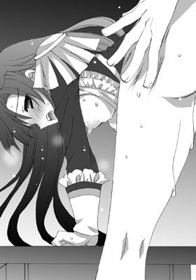
ゴム輪のようにめくれあがった真っ赤な肛門が、いっそう強く締めあげる。
その圧に抗えず、弘樹は唸りながら精を放った。
灼熱の白濁液が彼女の直腸内を真っ白に染め、接合箇所から漏れでる。
あたりにむっとした匂いが立ちこめた。
二人とも激しい交わりの余韻を全身で感じながら、荒い息を繰りかえす。
（ああ、いっぱい動いてる。私のなかで......。こんなに元気よく......）
後ろの穴でびくつく肉棒を感じながら、会長はがくりと首を折った。
全身がぴくっぴくっとひとりでに反応してしまうのがあんまりにも恥ずかしくて。
顔をあげることができない。
なのに――
「会長、こっち向いて」
「く、な、なによ......。ば、バカにするつもりっ!?」
唇を噛みしめながら、くやしげに後ろを向く会長。
その細い顎に手をやると、弘樹は彼女の身体に覆いかぶさりキスをした。
「ン......」
唇に舞い降りる優しい感触にすら、葉華は甘い声をあげてしまう。
彼女は目を閉じると、そのわずかな快感に身を委ねた。
唇を通して、彼女は満ち足りた幸せを享受する。
こんな甘いひと時だけは護りたい。絶対に護ってみせるという気持ちが、二人の胸に同時に芽生える。
「明日、頑張ろ」
「うん」
交わす言葉は少ないが、気持ちは通じ合っている。
そんな感覚が心地よくて。
いつまでもこうありたいと強く願わずにはいられなかった。
夕日によって紅一色に染めあげられた生徒会室は、まるで燃えあがる彼らの気持ちを表しているかのようだった。
体育祭 夫婦の誓いは騎乗位中出し！
そして――
ついにやってきた体育祭当日。
来賓席に黒服に黒サングラスをかけたマッチョたちがずらりと並んでいた。
マッチョたちに護られて、王様のようにどっかりと腰をおろすのは、言わずとしれた葉華の父、澤城孝三議員。
恰幅がよくいかつい顔つきは、まるでマフィアの首領。
例年の体育祭にはないやけに物々しい雰囲気のせいか、女生徒たちの表情には一様に不安が滲んでいる。
ただし、たった一人、会長を除いては。
「っち、お父様ったら。まさか総理の会席を断ってまで体育祭にやってくるなんて。どこまで親バカなのかしら......」
「は、はは、それだけ娘のことが大事なんじゃ？」
「違うわよ。大事なはずないじゃない」
「なんでそう言いきれるんだ？」
「だって、いやがらせとしか思えないようなことばっかりやってきて。これだってそうよ。弘樹に余計なプレッシャーを与える戦略に違いないわ。大人げないったら」
赤薔薇組のはちまきを額に締めながら、葉華は毒づく。
「でも、やっぱりこうやってわざわざ時間をかけるって、やっぱり愛情なんじゃないかなって思うけどな。うちの親なんか放任主義もいいとこだし」
「............」
弘樹の言葉に、会長は目を見張る。
だが、次の瞬間、むっと口を引き結んでから彼をぎろりと睨んできた。
「って、貴方、どっちの味方なのよ？ お父様？ それとも私？」
「葉華だよ」
「でしょ？ だったらお父様を擁護しないの！ 敵は敵なんだからねっ！」
そう言う葉華だが、どこかうれしそうにも見える。
「さて、気合い入れていくわよ！ どんな妨害工作してくるかわからないけど。絶対に負けないんだから」
目を爛々と輝かせて、葉華は自分の父親を睨みつけた。
対する父親も厳しい目で娘を見据える。
目には見えない火花が二人の間で激しく散った。
「......葉華ってさ。敵とかライバルとかがいると、燃えあがるほうだよな」
「うん、だって負けず嫌いだもん。勝ちにいくわよ！」
葉華が弘樹に向かって右手を差しだした。
「もちろんっ」
弘樹がその手を強く握りしめて、固い握手を交わす。
顔を顰める葉華の父親の鋭い視線が弘樹へとターゲットを変え、痛いほどに突き刺さる。
だけど、彼はそのまなざしから逃げず、真っ向から受けとめた。
彼の脳裏には漢塾の漢フレーズが、軍隊行進曲と同時に流れている。
気力、胆力、ともに漲りまくっている。
ただし――
「そういえば......。筋肉痛にはなってないでしょうね？」
葉華がこっそり耳打ちしてきた。
弘樹は気まずそうに彼女から目をそらした。
「ま、まさか――ば、バカバカ！ だから、あれほど......ほどほどにって」
「......褒美がおいしすぎたのが悪い」
「人のせいにしないのっ」
「いってぇえええっ！」
葉華の平手が彼の背中をばちーんっと叩いた。
弘樹の情けない叫び声が秋空に吸いこまれていった。
☆
果たして、予想通り体育祭における戦いは熾烈を極めることとなった。
なぜか、黒服の大人が種目に乱入してきては、弘樹をことあるごとに妨害してくる。
それに加えて、闘気を漲らせた副会長と彼女の取り巻きたち、会長のファンなどがここぞとばかりに団結して、弘樹の妨害にあたったからだ。
「副会長の名にかけてっ！ 絶対の絶対に負けませんわよ！ 体育祭でぶっちぎりでベスト・プレーヤー賞をゲットして、婿候補にしてもらえるよう、会長のお父様にじかにお願いするのだから。昨日は手加減してあげただけ。せいぜい油断しているといいわ。ド凡人っ！ 今日の今日こそは本気でいきますわよ！」
「副会長っ！ 頑張ってくださいっ！」
「当然よっ！ どんな手段を使ってでも勝利をわたくしの手にっ！」
「おぉおおおおおおおおおおおおっ！」
血気盛んな女子たちが拳を秋空に向かって同時に突きあげる。
「なんか、とんでもないことになってるわね」
「そっちは予想通りだろ？ むしろ、漫画じゃあるまいし、まさか黒服までやってくるとは思わなかったが......」
「え？ そっちは予想通りだったけど？ むしろ副会長の本気が怖いわ」
「............」
黒服が妨害にやってくるということすら想定内とは。
弘樹は改めて澤城家の力におののく。
「これ体育祭じゃないだろう......」
黒服たちは本気だった。
なんせ、さまざまな罠などを容赦なしに仕掛けてくる。
一歩間違えれば大怪我、いや下手したら死ぬんじゃないかというほどに。
もはやそれは体育祭ではない。戦場だった。
それでも、毎日の特訓の成果をいかんなく発揮し、かろうじて弘樹は一等を取りつづけていた。
だが、ほんのわずかにでも気が緩めば負けは必至――
実際に何度かヤバい場面もあった。
「大丈夫？」
「ああ、平気だ」
よろよろと控えに戻ってきた弘樹に葉華が駆け寄ってくると、冷却スプレーで彼の筋肉を冷やしてくれる。
「常に私と一緒にいてね。敵が敵だから。油断はできないわ。勝つためならなんだってやる人だから。お父様の怖さは私がよく知っている」
「......そうか」
「でも、大丈夫。私がついているから。さっきも何人か刺客っぽいのつぶしておいたし。弘樹は目の前の勝負だけに集中して」
「っぶ！ し、刺客!? それに、つ、つぶすって......」
「私が貴方を護るって言ったでしょう？」
「う、うむ......。それはそうだが......激しいな」
この親にしてこの娘あり。
さすがは有名政治家の娘。総理を目指す器。
心強いなと励まされる反面、絶対に敵にまわしたくないタイプだよなと弘樹は思う。
「それにね。私だけじゃない。他にも味方はいるもの。ばあやとお母様が全面的にバックアップしてくれるって！ 頑張りましょう」
「おお、そうかっ！」
「澤城家の女の意地を見せてくれるってものすごくはりきってくれてるわ。あ、ほら、お母様も来てる」
葉華が来賓席に向かって大きく手を振ると、日傘をさした淑女が自分の顔の横でしとやかに手を振った。
年齢を感じさせない美貌に華奢な体躯にプリンセススマイル。
とても好戦的には見えない。
その横でこれまた着物姿の品のいい老婆が静かに佇んでいた。
彼女が、葉華がいつも言っている「ばあや」なのだろう。
思わず、弘樹は彼女たちに会釈をする。
すると、葉華の母とばあやも小さく会釈を返してきた。
その様子を苦々しい表情で葉華の父が睨みつけている。
「つくづく、すごい家族だよな」
「んー、そうなのかしら？ 生まれたときからこれが普通だったから、いまいちよくわからないわ。うちはなにかといえば戦い合うの。よそのご家庭では違うのかしら？」
「......喧嘩くらいはするだろうけどな。澤城家はもっと派手だろう？」
「そうね。家族内で派閥もできているしね。油断したら足もと掬われるから、いつでも気が抜けないって感じ」
「......好戦的だよなあ」
「んー、戦い事が好きなのは、血かもね？」
そんな会話をしているうちにも次の種目がはじまろうとしていた。
弘樹の筋肉をマッサージでほぐし終えてから、会長は彼に言った。
「だから、個人戦じゃない。チーム戦ってこと。忘れないで。勝利の女神たちがついてるんだから、思う存分戦ってきてっ！」
「おうっ！」
敵は手ごわいが味方も充分手ごわそうだ。
澤城家の女神たちの加護を願って、弘樹はその場に立ちあがると、はちまきをきつく締め直して、入場門へと歩いていった。
その背中を祈るような面持ちで葉華が見つめていた。
「おおおおお！ 西野！ 頑張れよおおぉおおおお！ 俺たちもついてるぞおぉおお」
はっと見れば漢塾の面々が、学ラン姿で弘樹に旗を振っていた。
旗にはでかでかと「爆裂☆漢魂！」と書かれてある。
寮長が腕組みをして、うむうむと静かに弘樹へとうなずいてみせる。
弘樹の漢心が熱く震えた。
「西野ぉおおお！ 応援してるからなぁあああああああああああっ！」
「フレーフレーっ！ にっしーのぉおおおおおおっ！」
（俺は一人じゃない）
漢塾の朋友に澤城家の女神たちがついている。
弘樹は空を見上げた。
さんさんと照りつける太陽に目を細め、右拳を空に高々と突きあげる。
そのまま人差し指を突きだした。
「うぉおおおおおおおおおおおおおぉ！ ナンバーワン予告！ きたぜええええ」
「よぉおおおっしゃぁああああああ！ みんなっ！ 気合い入れて応援すっぞぉおお」
「押忍っ！」
高根を初めとする男子生徒たちの怒号が運動場へと響き渡った。
それからも、弘樹は順調に勝ちを収めていった。
そして、ついに最終種目――借り物競争がはじまろうとしていた。
「勝っても負けてもこれが最後か――」
弘樹は静かに呟いた。
強風に砂埃が舞いあがり、運動場を舐めていく。
入場門前にて、目を閉じた弘樹が緊張の面持ちで集中を高めていた。
彼の額に滲む汗を、傍に控えた会長がタオルで拭ってやる。
とく、とく。
と、せわしない心音が体のなかで反響していた。
漢塾のメンツが声を張りあげて弘樹を応援する。
『ただいま、最終種目、狩り者競争の準備をいたしております。準備が終わるまでしばしお待ちくださいませ』
「ん？」
アナウンスに違和感を覚え、弘樹は目を開けた。
会場が妙にざわついている。
運動場には黒服の男たちが総出でなにやら怪しげな準備にかかっている。
「あれ、なんだ？ なんか堂々と凝った罠仕掛けているように見えるのは俺だけか？」
「......お父様のＳＰたちったら。今度はいったいなにを」
不吉な予感に葉華が眉を顰める。
そのとき、放送係からマイクを奪うと、副会長が高笑いをした。
『おーっほほほほほほ！ 今のアナウンスは正しいですわ。みなさま、お手元のプログラムのラストの種目をよくごらんなさいな。それは誤植ではありません。敢えてその名にしてありますのっ。この最終種目、わたくし聖アリア学園、副生徒会長、連歌ユウヒがのっとらせていただきます！』
「へ？」
言われて、弘樹は折りたたんだプログラムを開いてみる。
最後の種目を見ると、そこには「狩り者競争」と書かれてあった。
「狩り......？ 者？ なんだ？」
「なっ!? 私が確認したときはちゃんと『借り物競争』だったのに。これはいったいどういうこと!? さては謀られた!?」
会長がプログラムを握りしめると、マイクを握った副会長のほうを見据える。
『この種目は別名、愛を狩る競争っ！ すなわちラブハンター、略してラブハンと命名しましたわっ！』
「......なんだそりゃ？」
某有名ゲームを二つかけ合わせたようなタイトルに会場にどよめきがひろがる。
『ルールは単純、世界で一番愛している人をゲットしてゴールすればいいだけ。ただし、この種目の勝者はたった一組だけ。他は敗者とみなされます。勝者のペアには特別ボーナス一〇〇〇点が与えられ、その配分は二人で相談の上、決めていただきますわ。なお、生徒のみならず父兄参加も認められます。父兄が勝者の場合は得点を追加したい組に入れていただけます』
「一〇〇〇点って。なんつー無茶な。しかも父兄参加もありって......」
弘樹は得点掲示板を見あげた。
赤薔薇組、五一〇点、白薔薇組、四五〇点、青薔薇組、五〇五点、紫薔薇組、三三〇点となっている。
仮に最下位の紫薔薇組のペアが勝者になれば、一〇〇〇点がまるっと得点に加わるため、大逆転も可能ということだ。
ちなみに、葉華の話によれば、ベスト・プレーヤー賞は、必ず優勝した組から選ばれるという。
つまり、弘樹がここで勝たなければ、今までゲットしてきた得点がすべて水の泡になるという寸法だ。
「......私に無断で。なんてことを」
会長が震える拳を握りしめると、教師のメガホンを奪って声高に異議を唱えた。
「異議ありっ！ 会長である私を通さず、勝手なことは認めませんっ！」
『ちゃんと校長の許可はもらってますから。今回ばかりは会長といえども反対する権限はありませんわっ』
「っく！」
会長は、副会長から自分の父親へと視線を移した。
彼は満足そうな微笑を浮かべて、彼女のまなざしを真っ向から受けとめる。
「さてはお父様の策謀ね。私を介さずして校長の許可をとれるなんてありえないもの」
ぐっと奥歯を噛みしめると、葉華はメガホンを投げ捨てた。
「――葉華、落ち着こう。どんな小細工をしてきたって、正々堂々受けて立って勝てばいいだけだから」
「弘樹......」
葉華は彼を見つめると、こくりとうなずいた。
「そうね。喧嘩を売られれば売られるほど燃えてくるわ」
彼女の身体から怒気が立ち上る。
「弘樹がここまで頑張ってくれたんだもの。絶対に負けないわ」
そう言うと、彼女ははちまきをきりりと締め直した。
高い位置に結いあげられたポニーテールとはちまきとが風にたなびく。
彼女の険しくも澄んだ目には、父の姿が映っていた。
闘争と尊敬と――そして怯えと憎しみとに彩られた瞳に弘樹は気づいていた。
いよいよ「狩り者競争」の参加者たちがゲートへと集まった。
基本的に体育祭に集まったすべての関係者が実質参加することとなり、学園はじまって以来の出来事だった。
「フフフ。わたくしが本気を出せば根まわし、工作お手のもの。必ずこの勝負に勝ち、わたくしを婿候補にしてもらいますわ。いいえ、もうこの際、わたくしが嫁でもいいですわ。会長と一生を添い遂げられるのならば形はこだわりませんっ」
「ええ、やっぱり葉華様に相応しいのはユウヒ様ですわっ」
「あんな下賎な男なんかに渡すものですか」
ユウヒの取り巻きや会長の追っかけの少女たちが、闘志を漲らせて、弘樹を睨みつけている。
その一方で、弘樹の周囲には漢塾のみんながいた。
「愛する二人の恋路を邪魔するやつらには天誅あるのみ！ 俺らが絶対にこの愛は護ってみせるぜっ！」
「たとえ、この命果てようともなっ！」
暑苦しい決め台詞を口々に叫びながら、弘樹と会長を背に庇う。
無論、ゼスチャーは、オーバーきわまりない。
実質、副会長派と会長派とに勢力は二分されていた。
建前上は組ごとの得点争いだが、その実、会長の争奪戦であることは明白で。
副会長の傍には、葉華の父の姿も見える。
その一方で、会長のもとには葉華の母とばあやの姿があった。
「葉華さん、頑張るのよ！」
「坊ちゃまも大人げないんだから。でも、勝負は勝負。葉華お嬢様、ここは澤城家の女の意地の見せどころ。なあに。男衆に遠慮はいりませんわ。勝ちにゆきましょう」
「はい、おかあさま！ ばあや！」
「――そして、弘樹さん」
「は、はい！」
いきなりばあやに声をかけられた弘樹は背筋を伸ばしてかしこまった。
ばあやは、彼の目を厳格なまなざしでじっと見つめる。
弘樹が直立不動のまま固まっていると。
ばあやは、にっと笑って穏やかな口調で言った。
「貴方も男を見せなさいね」
「はいっ！」
「いいお返事だこと。ほっほっほ」
そんな彼らの様子を寮長が、やはりニヒルな笑みを浮かべて見守っていた。
☆
『では、ただいまより、狩り者競争を行います。カウントダウン、十秒前、九、八、七、六......』
いよいよ最後の大勝負のスタートを知らせるアナウンスに、生徒たちが身構える。
弘樹と葉華も互いを見て、重々しくうなずき合う。
カウントダウンに伴って、緊張も心音も加速していく。
『三、二、一、レディゴー！』
入場門から運動場のトラックへと参加者がいっせいになだれこむ。
「会長を確保なさいっ！」
背の高い女生徒の肩車にのったユウヒが、右手を前に出して鋭い声で命じる。
「「仰せのままにっ！」」
ユウヒ派の女生徒たちが声をそろえて言うと、いっせいに会長めがけて駆けだした。
「おおっと！ これ以上は行かせないぜぇえっ！」
高根が歌舞伎役者のように大見得を切る。
「それでも行くっていうなら、俺らの屍を越えていくんだなぁあっ！」
ユウヒの取り巻きたちの前に、高根を初めとした漢塾の面々が立ちはだかった。
数では圧倒的に彼らたちのほうが不利だ。
だが、漢塾の面々は寮長を含め、マッチョ率が異様に高い。
しかもその団結力は軍隊もかくやというほどである。
「おうっ！ おまえら！ 朋友を護るのが漢道っ！ 命に替えても愛し合う二人をゴールまで送り届けるんだぞっ！」
グラサンをかけた寮長が漢塾の同胞に命令する。
「寮長、俺たちやってやるぜええええっ！」
男子たちは、声の限りに吼えると、会長めがけて襲いかかってくる女子たちに足をかけては丁寧に地面に転がしていく。
漢たる者、女子に手をあげるべからず――漢道に従い、彼ら流の戦い方で、数多くの女子に立ち向かっていた。
だが、なんせユウヒ派の女子は数が多い。
男子たちが女子相手に本気を出せないのをいいことに、「こわい......」なんて言いながら女の涙を利用して相手に隙を作らせ、男顔負けに鋭いパンチや蹴りを繰りだす。
昨今のお嬢様は、武闘派も多いようだ。
「くそっ！ いいパンチだっ。うっかり惚れそうだぜ！」
「冗談じゃありませんわっ！ 野獣どもにわたくしたち百合の花は手折れない！」
「美女と野獣って言うだろ？ 意外にありかもしれねーぞっ」
つかみ合いにとっくみ合いが到るところで繰りひろげられ、もうもうと立ち上る砂埃で視界が閉ざされている。「狩り者競争」とはよく言ったものだ。
そこには、バトルロワイヤルの光景がひろがっていた。
そんななか、疾風のような体捌きで、男子たちを次々昏倒させる背広を着た一人の紳士がいた。誰かは言うまでもない。葉華の父である。
手刀が流麗な円を描いたかと思うと、質実剛健な蹴りがすさまじい速度で繰りだされ、その一瞬あとに、男子生徒たちが地面に崩れ落ちる。
「な......」
その暴風のごとき戦いざまに、他の生徒たちの動きがとまった。
さっきまでの喧騒が嘘のようにしんとあたりが静まりかえる。
（これじゃ、政治家ってーよりも格闘家じゃないか!?）
弘樹は、内心激しく突っこみを入れる。
こんな父親から娘を奪おうとする不埒な男には、凄絶な死が待っているだろう。
「お父様ったら本当に大人げないわ。体育祭に本気を出すなんて。なんてこと」
さすがの葉華の顔も青ざめている。
だが、彼女の横で母はこともなげに言う。
「なんにでも全力投球。これは澤城家の家訓の一つでもあり、血筋だものねえ」
「............」
思い当たるところがありまくりな会長は、苦笑いを浮かべると、気まずそうに視線を彷徨わせる。
「......へっ、おまえたちの手に負えるやつじゃねえ。さがってな」
寮長が嬉々とした表情を浮かべて、葉華の父の前へと進み出た。
「空手に柔道にカポエラ、太極拳――すべての技をミックスした流派。久々に楽しませてもらえそうじゃな」
「ほう、なかなか目利きの人間がいるようだ」
「年寄りが若い二人の色恋沙汰に口を出すのは野暮ってもんじゃあねえか？」
「娘に相応しい男にならな」
「はは、世の父親ってえのは、そうやって言いわけするもんよ。なあ、孝三」
「なっ！ 貴方はいったい」
「俺を忘れたっていうのか？ そりゃないぜ」
寮長はグラサンをとると、地面へと投げ捨てた。
「まさか......父さんっ!?」
いきなりの展開におおぉおおおっと場内がざわめく。
「今までどこに行っていたんですか！ 『俺より強いやつに会いにいく』とかいうふざけた書置き一枚残して十年前に失踪したと思ったら」
「なあに。正義のヒーローっつーのはひとところにいたら腐るでな。政治家引退してから余生はいろんな仕事をしながらヒーローの道を貫こうと思ったまで」
「いい年して、なにを自分探しみたいなことしてるんですかっ」
「なかなかおもしろいもんだぜ？ 古狸の里にはないきらっきらしたもんがいっぱい転がってるしよう」
じりじりと間合いをつめながら、互いの味方を見る二人。
「え、ええええっ!? りょ、寮長ってお父様のお父様だったというの!? てことは、私のおじいさまっ!?」
葉華が驚きの声をあげて足をとめる。
と、寮長が彼女に向かって叫んだ。
「ほら、なにをぼんやりしてる。二人ともさっさとゴール目指せ！ 制限時間は十分。ゴール前には罠も仕掛けられてるんだぞ!?」
「で、でも、寮長......」
「ここはワシに任せて、さっさと行けっ！」
「はいっ！ すみません。恩にきます！」
そう言うと、弘樹は葉華の手を握りしめて、再び駆けだした。
「逃すものですかっ！ 貴女たち！ 追いなさいっ」
はっと我に返った副会長たちが、すぐさま彼らを追う。
「はぁはぁっ」
一歩踏みだすたびに弘樹の全身が悲鳴をあげる。
全身筋肉痛の状態で、全部の種目で一位を取りつづけた今、もはや弘樹の体は限界に近かった。
それでも、彼は奥歯をくいしばって、走りつづける。
だが――
なにかが足に絡み、弘樹は前のめりに倒れこんだ。
「っく、そっ！ なんだこれっ！」
足に網が絡みついていた。それはＳＰによって仕掛けられた罠だった。
「動かないで。私が解くから」
葉華が彼の足もとにしゃがみこむと、彼の足に絡みついた網を解きにかかる。
そうこうしている間にも後ろからユウヒたちが追いあげてきた。
だが、間一髪網を解き終え、二人は再びゴール目指してダッシュしようとして、弘樹が再び派手に転んでしまう。
「なんでこんなときに限ってっ」
さっき変なこけ方をしたせいで捻ってしまったらしい。
右足首に激痛が走る。
その痛みをこらえて、弘樹が立ちあがる。
よろめきながらも、必死に葉華の手を引っ張って、走りつづけようとする。
（これくらいの痛み、気合いでなんとかしてみせるっ！）
弘樹は必死の形相で足を踏みだす。
しかし、みるみるうちに右足首は紫色に腫れあがってしまう。
「無理しちゃ駄目よ」
「無理しなくちゃならないときくらい無理するだろ！」
「弘樹......」
葉華が目を潤ませたかと思うと、きっと目を吊りあげ、その場にしゃがんで、彼に背を向けた。
「おんぶするからっ！ 来てっ」
「――んな無茶な」
「無茶しなくちゃならないときくらい無茶するでしょ！」
同じことを言われては反論できない。
弘樹が彼女の肩に手をかけようとしたちょうどそのとき、ようやく追いついてきたユウヒが少女たちもろとも彼に集団タックルをかましてきた。
弘樹の体は宙を跳ね、地面にどさりと落ちる。
「......なんで。こんな」
「会長！ わたくしと一緒にゴールを目指してもらいますわよ」
ユウヒが勝ち誇ったように言うと、会長に手を差し伸べた。
弘樹は足首を庇って、必死の形相で声をこらえている。
そうこうしているうちに、寮長と激しい攻防を繰りひろげながらも、葉華の父親が怒濤の勢いでダッシュしてきた。
そして、葉華のもとまでやってくると、こう言った。
「葉華、もうこれでわかっただろう？ その男の武はたかが知れている。おまえの婿には相応しくないっ！ わかったらまた前のように私の言うことをよく聞くいい子に戻りなさい」
父親の言葉を耳にした葉華が、ぴくりとこめかみをひきつらせて低くうめいた。
物心ついたときから今まで、ずっとずっと胸のなかに抑えつけていた気持ちが彼女のなかでついに爆発する。
「......んですって!?」
「葉華？」
「たかが知れている!? 相応しくない!? ふざけないでよっ！」
今まで彼女が見せたことのない激昂に父親は閉口する。
それは他の生徒たちも同じだった。
常にクールで理知的で王子会長として振る舞ってきた葉華。
その彼女が、はじめて大勢の前で自分の感情をむきだしにしていた。
「ジャッジ!? そんなくだらないもののために、弘樹にこんな怪我させてっ！ なんとも思わないのっ！ 人の体を、人の気持ちをっ！ なんだと思ってるの！ ものじゃないのよ！ 私の大事な人なのよ！ 傷つけるなんて許さないんだから！ 護ると決めた人くらい護ってみせるんだから！」
悲痛な叫び声が校庭に響き渡る。
なりふり構わず、髪を振り乱して叫ぶ会長の迫力に周囲は圧倒されてしまう。
葉華は、ぐっと唇を噛みしめると、弘樹のもとへと駆け寄った。
「弘樹、大丈夫？ すごく痛いでしょ。ごめんね......。本当にごめん。私のためにここまで無茶させてしまって。ごめんなさい」
顔を覆うと、その場にうずくまってしまう。
すると、地面に転がった弘樹が彼女に苦笑してみせた。
「俺は大丈夫だって。ちょっと派手に捻っただけだし。骨までは折れてないだろ」
「だけど――」
葉華がそう言って顔をあげたそのときだった。
「大丈夫！ 行くぞっ！ ここまでやったんだ！ 最後まで......な？」
弘樹がよろめきながらもその場に立ちあがった。
彼の体を支えると、葉華はきっと顔をあげて歩きだす。
一歩、また一歩。
踏みしめるように歩いていく。
弘樹は足をひきずりながらも、葉華と一緒にゴールを目指す。
「二人ともぉおおおおおおっ！ くっそぉおおおお。まじかっこいいぜえええ。いっけぇえええええっ！」
高根が号泣しながら、応援旗を両手で左右にぶんまわした。
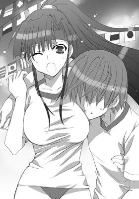
「フレーっ！ フレーっ！ 西野ぉおおおっ！ フレーっ！ フレーっ！ か、い、ちょぉおおおおおっ！」
漢塾の面々の応援のしすぎで嗄れた声が運動場に響く。
やがて、二人がようやくゴールへとたどり着いた。
そこで、競技終了を知らせる笛の音が響く。
「やった......」
「弘樹っ！ やった！ ついにやったのよっ！」
その場にへなへなと座りこんだ弘樹の首根っこに会長が抱きついた。
彼らを胴上げしようと、男子生徒たちが一目散に駆け寄ってくる。
だが、そのとき――
「――却下だっ！ 認めんっ！ 認めんぞぉおおおぉおお！」
会長の父親の叫びがお祝いムードを凍らせた。
「お父様！ いい加減にして！ 武を示せば婿様として認めてくださるって――」
「なにが武だ！ 女の肩を借りるなど！ 恥を知れっ！ 西野弘樹君。君は葉華の婿としては認められない。ジャッジは不合格だ」
そう言い残すと、彼はその場を去っていった。
その背中が少し寂しげに見えるのは気のせいだろうか？
「まったく。本当に男の人ってどうしようもないんだから」
会長の父親のあとを母親とばあやとが追いかけていく。
「やれやれ、頑固なところはワシ譲りかもしれんな」
寮長が肩を竦めて舌打ちする。
葉華はその場にがくりと膝を折ると、首を力なくうなだれた。
「............」
副会長はもとより、誰も彼女になんと声をかけていいかわからない。
こうして戦いは弘樹たちの勝利に終わるはずも、あえなく敗北に終わったのだった。
☆
弘樹の周囲からいっさいの音が消えた。
会長がなにかしきりに言っているようだったが、彼の耳に彼女の声は届かない。
閉会式も待たず、弘樹はただ一人、足を引きずりながら会場を抜けだした。
どこをどう歩いたかわからないが、いつの間にか裏山へとやってきていた。
初めて彼が会長と出会った場所。
音を失う前に聞いた会長の父親の厳しい声だけが脳裏にこびりついて、リフレインしていた。
悔しいとか、そういった類の気持ちはいっさいない。
やるだけはやった。
死に物狂いで会長と一緒に勝利をつかんだ。
だが、それにもかかわらず負けたのだと。
その事実のみが彼を強く打ちのめしていた。
「............」
黙りこくったまま、彼は木に寄りかかると、眼下にひろがる町並みを眺める。
すでに日は暮れ、町に明かりが灯りはじめている。
まだ夕暮れの片鱗を残した夜空には宵の明星が輝いている。
激しい徒労感。体が鉛のように重い。
「合わせる顔がないな」
葉華は、あれだけ自分のために一生懸命頑張ってくれたのに。
その期待に応えることができなかった。
彼女のことを考えると、弘樹はやりきれない気持ちに襲われる。
「......終わったんだ。もう」
なにもかも今は考えたくない。
弘樹は黙ったまま目を閉じた。
強烈な眠気がやってきて、そのまま彼の意識はフェイドアウトした。
ややあって、彼は目を覚ました。
足にひんやりとした感触を感じて。
「ん？ つめた......」
「――おはよう」
「葉華」
すぐ傍に葉華がいた。
弘樹とは違って体操服ではない。すでに制服に着替えている。
弘樹と同じように木の幹にもたれかかって、遠くの町並みを眺めている。
すでにあたりは夜の闇に閉ざされていた。
右足首にはタオルに包まれた氷があてがわれている。
「足、大丈夫？」
「あ、うん。ありがとう」
「ううん、ちゃんと病院はいこう」
「うん」
淡々とした会話を交わす二人。
だが、その会話は以前と同じではない。ひどくぎこちない。
「――ごめん」
しばらくの気まずい沈黙のあとで、弘樹が言った。
葉華は唇を噛みしめると、ぶんぶんっと首を勢いよく左右に振る。
「......謝らないで。私こそごめんなさい」
「葉華はなにも悪くないし」
「そんなことない。そもそも私が全部悪いの。あんな父の下に生まれなければよかった。ここで弘樹に出会わなければよかった。怪我させちゃった。私のせいよ」
「悲しいこと言うなー。んじゃ、出会わなければよかった？」
「バカっ！ バカバカバカっ！ そんなわけないでしょう！」
「今日はバカがやけに多いな」
「え？」
「口癖。バカバカって。葉華はよく言うから」
「......そうなの？ 自分の口癖とかってよくわからない」
「あんだけ一緒にいればなあ」
「そう......ね。でも、もう......」
「......別に。候補からはずれただけで。なら、友達として」
「それってつらいよ。とても。だって傍にいてこうして触れられる距離にいるのに、触れられないんだよ？」
そう言うと、葉華が弘樹の上へと乗っかってきて彼の体を強く抱きしめてきた。
大きな胸が彼の顔に押しつけられ、ふわりと甘い匂いが弘樹の鼻をくすぐる。
「こうするためには理由が必要。大義名分――ただ、こうしたいからする。そんなふうに私はできない」
「すればいいのに」
「できないんだもの......。そういう性分なのよ」
葉華は懸命に涙をこらえながら、小さく舌を出してみせる。
「婿様という大義名分にどれだけ救われたことか」
「はは、そういわれれば確かにそうだった」
こうやって交わす会話が過去形なのがつらい。
二人は苦笑し合い、ふと真顔になった。
どちらからともなく、顔を近づけていき、唇を重ねる。
唇が触れ合った途端、猛烈な渇きを覚えて、二人は無我夢中で舌を絡め合う。
「ん、んんっ。は、あぁあっ。んんんんっ。ちゅ。んく......」
甘い声をあげて、一生懸命ディープキスに溺れる葉華がかわいくて。
弘樹は彼女を抱きしめる手に力をこめて、さらに彼女の唇の奥へと舌を突き入れた。
そのまま、彼女の舌の裏側を舌先ではじいてやりつつ、時折下唇を甘噛みする。
二人の唾液が混じり合い、甘い快感がじわじわと染みてくる。
出会ったときと同じ場所、同じ体勢で、二人は長い長いキスをした。
やがて、どれくらい経っただろう。
ようやく二人は唇を離すと、恥ずかしそうに笑い合う。
「......俺はやっぱり出会えてよかったと思う」
「ありがとう。私も今......。そう思う」
そう言うと、葉華は下を見た。つられて弘樹も下を見る。
「って、なにか硬いのが......」
「っぶ、こんなときに。節操ないな。悪い」
「ううん、うれしいよ」
くすりと笑うと、会長は下へとそっと手を伸ばした。
積極的な彼女の動きに弘樹は驚く。
ズボン越しに彼女の手が触れた。
手は、いとおしげに硬さを撫でまわしてくる。
ただでさえ硬くなった半身がますます硬度を増していった。
「――して、いい？」
「......うん」
「せめてステキな思い出にしたいから」
葉華は一度彼から身体を起こすと、彼のズボンをずらした。
すると、反ったペニスが勢いよく外へと飛びだしてくる。
目を細めて笑うと、彼女はいきり立った肉竿に手を添えてからキスをした。
そのまま唇を開いたかと思うと、亀頭をぱくりと口に頬張った。
「う、くっ」
滑らかな口腔内粘膜が敏感な先端を包みこんでくる。
葉華は筒状にした手を上下に動かしながら、熱心に口をすぼませる。
「ん、んっ。っちゅ......。ぢゅっ。ん、はぁ......ふっ。んちゅ......」
音をたてながら熱心に舌を使って唇奉仕をしてくる会長。
その小さな美しい顔が自分の肉棒のすぐ傍で上下していることが、いまだに信じられない。
彼女は舌を熱い棒へと絡ませ、先端の膨らみを飴玉でもしゃぶるように舐めてくる。
「っはぁ、ん、あぁあっ。どんどん......ちゅ、大きく......なって」
口のなかで育っていく雄渾な半身が息を塞ぎ、彼女の口いっぱいに体積を増したため、葉華は苦悶の表情を浮かべる。
そのしどけない表情が、弘樹の劣情を誘う。
「足が動けば、とっくに葉華を押し倒してるのに......」
もどかしい思いでそんなことを口走ってしまう。
と、葉華が妖艶に微笑んだ。
「動かなくても、私がするから。大丈夫」
ペニスから顔をあげると、口端から唾液とカウパーの混ざり合ったものがつつっと顎へと伝わりおちていった。
ぺろりと唇を舐めて、それを手でぬぐうと、彼女は天を向いてそそり勃ったペニスへと腰をおろしていく。
自分でショーツのクロッチをずらし、入り口に半身をあてがった。
「んんっ。すごく熱くなってる......」
敏感な粘膜に熱を感じ、葉華は声をもらしてしまう。
挿入の予感に二人とも、同時に武者震いする。
「ん、ん、ん、んぅうーっ」
会長は、目を閉じると、自分から腰をおろしていった。
これまでにないほど硬くなったペニスが自分の中心を割り開いていく感触を全身で味わいながら――
すでに会長のそこは潤っていた。
濃厚なフェラをしながら、あれこれ想像してしまったのだろう。
愛蜜をたたえたそこは熱くぬめり動いて、待ちかねた侵入者を歓迎する。
「すご......。いっぱい動いてっ。っく......。葉華のなか、すごい」
「あ、は。欲しいって。ンンっ。言ってるの......かも？」
息を弾ませながら、葉華は腰を上下に動かしはじめた。
下半身に愉悦を感じながら、弘樹は彼女の制服の上着をたくしあげた。
ボリュームたっぷりの乳房がふるんっと上下に揺れて姿を現した。
ブラジャーに包まれてはいるが、葉華が身体を上下に揺らす反動で、すぐになかから二つの大きな果実が飛びでてしまう。
真下から見上げたＧカップは陰影がくっきりついていて迫力が違う。
弘樹はその乳房を真下からわしづかみにすると、昂りに任せて揉みしだく。
「ンっ！ あぁっ。はぁあっ。弘樹っ。んあぁっ。はぁ......」
こねまわされて形を始終変える自分のおっぱいを眺めつつ、葉華の喘ぎ声のトーンがさらに高くなる。
それに伴って、腰の動きもより淫らに激しさを増す。
「あ、あああっ。い、いいのっ！ 気持ち、よすぎてっ。あ、あぁあっ。すごく、めちゃくちゃな感じ......。あぁああ」
なかで張りつめた怒張を感じながら、葉華は腰をくねらせる。
さまざまな角度を試してみて、一番いい角度を見つけると、細い指先でクリトリスをいじりながら、一心不乱に腰を振る。
ずっずっというリズミカルな湿った音がつなぎ目からもれる。
一度腰をあげるときには浮遊感、体重をかけて一気に腰をおろすときには、なんともいえない熱い感覚が子宮に芽生える。
「っ！ あぁあっ。や、ぁああっ！ いいっ！ 気持ち、いいっ！ 弘樹のがいいの。すっごく......。あ、あぁああっ。全部、欲しいっ！」
これが最後とばかりに、会長は、あられもないよがり声をあげ、淫猥な言葉をろれつのまわらない口から紡ぎだす。
いつも、人からどう見られるかを気にして、かっこつけていた彼女とは思えない。
ありのままの彼女がそこにいた。
思うままを口にして、自分の情熱のままに動く。
身体全身で感じまくって身悶えている葉華を弘樹はまぶしげに見つめた。
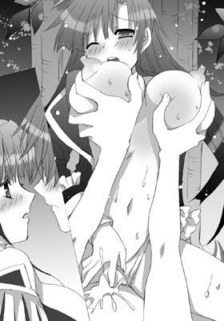
「っく、あ、あ。もう......射精るから......。はぁはぁ、ちゃんと抜いて」
「いやっ！ はぁはぁああっ。ン、弘樹のせめて全部っ。全部欲しい。今欲しいの。弘樹の赤ちゃんだったら......。私、私っ。いいのっ！ だからっ、なかにっ！ お願い！」
おっぱいを上下に勢いよく弾ませながら、葉華は騎乗位で弘樹を責めたてる。
彼女の言葉に連動しているかのように、茹だった膣が、ことさら強い力でペニスを締めあげた。
「ああっ！ んあぁああっ！ 弘樹ぃっ！ 好きっ、大好きっ！ 全部っ！ 私にちょうだい。絶対に忘れないっ！」
「俺もっ。葉華が好きだっ」
互いに素直な気持ちをぶつけ合う。
葉華の姫洞が蠕動し、何度も何度も強烈に収縮しはじめると肉棒を責めたてる。
ざらついた肉壁にこすりたてられ、彼女の一番奥でペニスが爆ぜた。
びく、びくくっと勢いよく跳ねながら濃厚なザーメンを思う存分搾りだす。
「あぁあはぁあっ。なかっ！ ンっ。はぁはぁっ！ 熱いっ。弘樹のがっ。熱くて。んあぁあああっ！」
激しいイキ声をあげると、彼女は弘樹の下腹部にまたがったまま、全身をびくつかせて背筋をくっと反らした。
大きく目を開くと、虚空を見つめて、身体を硬直させる。
そして、次の瞬間、全身を弛緩させた。
だが、ペニスに張りついた膣は、なおも蠢いて執拗に精をやったばかりの肉竿をリズミカルに食みつづける。
「はぁ、はぁ......。弘樹、ありがとう」
「葉華、ありがとう」
二人はとろんとした顔で見つめ合う。
葉華が背中を曲げて、いとおしげに彼の顔に触れると、唇にキスをした。
触れ合うだけの優しいキス。
切なすぎて、精いっぱい笑おうとするのに、どうしても葉華は泣き笑いになってしまう。
そのときだった。
葉華の携帯が震えた。
「はい――葉華です......」
いつもと変わらない様子で電話に出る会長だが、いまだ結ばれたまま。
しかもついさっきまで情熱的に交わっていただけあって、普通の声にも甘い響きがどうしても混じってしまう。
それがエロいなと思いつつ、弘樹はむきだしになったままの彼女の乳房をやわやわと揉んでみる。
たしなめるような目をして彼を甘く睨みつける葉華。
だが、その彼女の顔が険しくなる。
「それってどういう意味です？ え、来ればわかる？ はい。わかりました」
電話を切ると、彼女は首をかしげた。
「なんの電話？」
「いえ、ばあやから。今からお屋敷に来なさいって。弘樹と一緒に」
「えええ？」
もしや、今のこの状態がバレたんじゃとか、今までのあれやこれやがバレたんじゃとか、弘樹は気が気ではない。
「まあ、いきましょう」
「......うむ」
☆
お屋敷へとやってきた二人は茶室へと通された。
そこには凛とした佇まいのばあやと葉華の母がいた。
ばあやが茶をたてて、二人へと差しだした。
葉華は慣れた手つきで椀をまわして、抹茶を飲む。
弘樹も彼女を真似て、同じように抹茶を飲んだ。
ししおどしの音が静謐に響き、かしこまった気持ちになる。
ややあって、ばあやが言った。
「――葉華お嬢様」
「はい」
「本当によき人と出会いましたね。夫婦というものは二人三脚。どんな苦難にも支えあって立ち向かわねばなりません。あのときのお二人は、まさにそんな夫婦の理想像を体現されてました」
ばあやは、一度弘樹に笑みかけてから、再び葉華に視線を戻してはんなり微笑む。
「ばあや......」
葉華の目が潤む。
だけど、彼女は気丈に微笑んで、誇らしげにうなずいた。
「......はい」
彼女の母親がレースのハンカチで目頭をそっと押さえる。
「でも、それなのにお父様は......。弘樹のことを認めてくれなかった」
葉華が顔を曇らせると、ばあやがほっほっほっと声をたてて笑った。
「なあに。気にすることはありません。男の人はみな、ああなるものです」
「そうね、ばあや。本当にどうしようもないのだもの」
ばあやと葉華の母親が顔を見合わせてくすくすと笑う。
「いくつになってもおんなじ。葉華様のおじいさまもおんなじことを貴女のお父様に言っていましたよ」
「えええ？ そ、そうだったんですか？」
「ええ、そうです。男の人は負けず嫌いだから。ついつい娘のいい人と張り合おうとしてしまうのでしょうね」
「まったく仕方がないのだから」
ばあやたちの顔を交互に見ながら、葉華が目をしばたたかせる。
「え、そ、それじゃ？」
「お父様もおじいさまも私には顔があがりませんよ。なんせ、私がずっと面倒見てきたのだから」
「ばあや、それってどういう意味？ 想像はつくけど、ちゃんとはっきり聞きたいの」
彼女の顔にぱああっと喜色がひろがった。
すると、ばあやは小さくうなずくと、朗々たる口調でこう言った。
「大丈夫。なにも心配することはありません。殿方なんて、本当にいつまでも子供で困ったものなのだから。はいはいと言って聞き流してあげればいいの。殿方の言うことを鵜呑みにする必要はまったくありません」
「ええ、そうねえ。まあ、そこがかわいいところでもあるのだけれど」
葉華の母も苦笑する。
「この私がしっかりしかっておきました。なにが『武を見せろ』ですか。もっと大事なことはたくさんあります。そして、私はずっとあなたたち二人を見てきましたし、あの体育祭で、この目に狂いはなかったと思いました」
「ありがとうございます」
葉華が姿勢を正すと、ばあやに向かって深々と頭をさげた。
そんな彼女を見守るばあやのまなざしは春の陽だまりのように優しい。
「葉華お嬢様はいっつも無理をしてきた、澤城家のなかでもとびっきりの頑張り屋さんだもの。期待に応えようといつも必死で。そのお嬢様が、あんなにも必死になって。なりふり構わず、今まで恐れてきたお父様に立ち向かったのですもの」
「はじめての親子喧嘩、ですわねえ」
「......あのときは、無我夢中で。我を忘れてしまって。すみません」
「なにを謝ることがありましょうか。家族ですもの。たまには腹を割ってぶつかり合うことも大事ですよ」
「ええ、そのとおり」
「ばあや......。お母様」
「弘樹さん、今後ともお嬢様をよろしくお願いいたします」
ばあやが三つ指をそろえて畳につくと弘樹に向かって頭をさげた。
弘樹はあわてふためき、勢いよく額を畳にすりつけて土下座をする。
「い、いやっ！ こ、こちらこそ！ ふ、ふつつか者ですがっ！ どうぞよろしくおねがいします！」
「やだっ。ふつつか者だなんて。婿様らしい台詞じゃないわよ？」
葉華があきれたふうに言う。
軽やかな笑い声が閑静な茶室に軽やかに重なり合って響いた。
「そして、葉華にはこれを私から差しあげましょう」
母親が、横に置いていた桐箱を葉華へと差しだした。
Ａ３サイズの用紙くらいの大きさだ。
「お母様？ これは？」
「これは代々澤城家の嫁に伝わるものです」
葉華は、紐を解いて箱の蓋を開けてみる。
と、そこには真っ白なレース仕立てのウェディングヴェールと小さなティアラが収められていた。
「これを私に？」
「ええ」
「うれしいっ。私、このヴェールに相応しい嫁になるよう精進します」
そう言うと、葉華はヴェールをいとおしそうに胸に抱きしめた。
弘樹はそんな彼女を見て、自分も彼女に相応しい婿になるのだと、改めて心に誓ったのだった。
エピローグ 最後はやっぱり俺嫁（おれよめ）宣言！
結局、弘樹は澤城葉華の婿として正式に認められることになった。
正確に言えばフィアンセとして――
だが、やっぱり大人げない父親が、いついかなる優秀な男を婿候補として差し向けてくるか油断はならない。
ただ、当面は、弘樹と葉華のもとには駄々甘な毎日がよみがえった。
そのため、今日も彼らは昼休み、二人っきりで生徒会室でくつろいでいた。
「はい、あーんして」
「おう」
口もとに寄せられたウインナーに向けて弘樹が口を開くと、葉華がうれしげに彼の口のなかにウインナーを放りこむ。
「おいしい？」
「ああ、うまいな。つか、ウインナーはうまいだろう？」
「あ、またそんなふうに小憎たらしいことを言うんだから。どーせ、ただ焼いただけじゃないかとか言うんでしょ？」
「これはさすがに手料理とはいわんだろ？ せめてタコさんウインナーをマスターしてから胸をはるんだな」
「っく、タコさんウインナーって難しいんだから！ どうしてもあんなふうにくるって足がうまくまかなくて」
「精進あるのみだな」
肩を落とす会長に、弘樹は勝ち誇ったように言う。
「むうう。覚えてらっしゃい。いつか究極のタコさんウインナーをマスターして驚かせてやるんだから」
葉華は口を尖らせると、拳を握りしめてあらんほうを見やる。
「んじゃ、弁当、ごちそうさま。いつもサンキュー」
「いえいえ、まだまだだけどね」
「いやあ、最初よりはずいぶん進歩したっつーか。忙しい合間にわざわざつくってくれるだけでもな。ありがたいし」
「......これくらい。たいしたことじゃないわ」
照れ隠しにぷいっとそっぽを向くと、彼女は肩にかかる髪を払いのけた。
「って、ああ！ 弘樹、また耳汚れてる」
「げ！」
葉華が耳をひっぱってきたため、弘樹はあわてて耳を手で覆う。
だが、時すでに遅し。
「まったくどうしてこういっつもすぐに汚れるのかしら。どこか空気の汚いところでもほっつき歩いてきたんでしょう」
「ほっつき歩くって。犬みたいに言うなー」
「まったく仕方ないんだから」
そう言うと、葉華は空になった弁当箱をしまい、ソファへと腰かけた。
そして、ぽんぽんっと太腿を叩いてみせる。
「さあ、こっちにきて。綺麗にしてあげるから」
「う、できれば遠慮したいんだが」
「却下！」
申し出を却下され、弘樹はしぶしぶソファに向かった。
「こら、じっとして。そう......」
「う、うう。くれぐれも鼓膜は大事に」
「わかってるわよ。だから、動かないで」
真剣な面持ちで葉華が弘樹の耳の穴を覗きこんでくる。
弘樹は葉華の太腿に頭をのせている。
だが、その手はまるで祈りを捧げるかのようにきつく握りしめられていた。
「よ、っし。できたわ」
まるで難しいオペを終了した医師のような面持ちで、彼女は彼の耳の穴から耳掻きを取りだす。
「ふう......。今回はあまり痛くなかったな」
「耳掻きも上手になったもんでしょ？」
「だなあ」
「だって、ちゃんと花嫁修業してるもの。ね、婿様？」
下を向いてにっこりと微笑みかけてくる葉華の頬は赤らんでいる。
幸せが駄々もれ状態で、見ているほうが恥ずかしくなる。
だが、そういうくすぐったさもまんざらでもない。
弘樹も彼女につられて微笑む。
まさしく二人きりの世界がそこにあった。
「で、弘樹。今日の放課後、ちょっとお買い物に付き合ってくれるかしら？」
「え？ ああ、いいけど？」
そういえば今の今までデートらしいデートはしたことがなかったよな、と弘樹はついついわくわくしてしまう。
「なにを買うんだ？」
「ん、ウェディングドレス？」
「っぶ！ まだいつ結婚するとか決まってもないのに。ずいぶんと気が早いな」
「だって一生に一度のことなのよ。けして後悔しないように全力で臨まなくてはね」
そう言うと、葉華は会長机の上に置いてある桐箱の蓋を取った。
なかからヴェールとティアラを取りだすと、幸せそうに自分の頭へと載せる。
「このヴェールとティアラに似合うとびっきりのドレスを探さないとね♪」
くるりとその場でターンする。
すると、彼女のポニーテールが宙を泳ぎ、ヴェールがふわりと風をはらんで舞った。
それをドアの隙間からぐぬぬっと睨みつけている人影が一つ。
それは、副会長だった。
「......覚えてらっしゃい！ 女を磨いて、絶対に葉華様をわたくしのお嫁さんにもらうんだからぁあああ......」
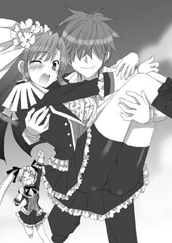
縦ロールを逆立たせて、ドアをばーんと開いて、弘樹を指差す。
やれやれと、葉華と弘樹は肩を竦め合う。
と、おもむろに弘樹がその場に立ちあがると、葉華の身体を横抱きにする。
「っきゃっ!?」
いきなりのことに驚いた葉華が悲鳴をあげて、弘樹の首に手をまわして抱きつく。
弘樹は葉華をお姫様抱っこしたまま、生徒会室から勢いよく外へと飛びだした。
「こらぁあああっ！ 待ちなさいっ！ 泥棒猫ぉおおおっ！」
背後からベタな台詞を叫ぶ副会長が追いかけてくる。
弘樹は後ろを振り向かずにこう言った。
「会長は俺だけの嫁だっ！」
ＥＮＤ
生徒会長は俺の嫁!?
2011/11/1 電子版発行
著 者 みかづき紅月
挿 絵 七瀬葵
発 行 株式会社フランス書院
東京都千代田区飯田橋３－３－１
本データには購買者を特定できる個別のシリアル番号が刻印されています。複製・頒布・転売等、著作権を侵害する行為は法律で禁じられており、違反した場合は刑事罰および民事罰を招来することになります。
(c)2011 Kohgetsu Mikazuki, Aoi Nanase, Printed in Japan.